| POV-Ray for Unix version 3.8 | ||||
|
|
||||
| Home | POV-Ray for Unix | POV-Ray Tutorial | POV-Ray Reference | |
2.3 Advanced Features
2.3.1 Spline Based Shapes
After we have gained some experience with the simpler shapes available in POV-Ray it is time to go on to the more advanced, thrilling shapes.
We should be aware that the shapes described in this and the following two chapters are not trivial to understand. We need not be worried though if we do not know how to use them or how they work. We just try the examples and play with the features described in the reference chapter. There is nothing better than learning by doing.
You may wish to skip to the chapter Simple Texture Options before proceeding with these advanced shapes.
2.3.1.1 Lathe Object
In the real world, lathe refers to a process of making patterned rounded shapes by spinning the source material in place and carving pieces out as it turns. The results can be elaborate, smoothly rounded, elegant looking artefacts such as table legs, pottery, etc. In POV-Ray, a lathe object is used for creating much the same kind of items, although we are referring to the object itself rather than the means of production.
Here is some source for a really basic lathe.
#include "colors.inc"
background{White}
camera {
angle 10
location <1, 9, -50>
look_at <0, 2, 0>
}
light_source {
<20, 20, -20> color White
}
lathe {
linear_spline
6,
<0,0>, <1,1>, <3,2>, <2,3>, <2,4>, <0,4>
pigment { Blue }
finish {
ambient .3
phong .75
}
}
|
We render this, and what we see is a fairly simply type of lathe, which looks like a child's top. Let's take a look at how this code produced the effect. First, a set of six points is declared which the raytracer connects with lines. We note that there are only two components in the vectors which describe these points. The lines that are drawn are assumed to be in the x-y-plane, therefore it is as if all the z-components were assumed to be zero. The use of a two-dimensional vector is mandatory, attempting to use a 3D vector would trigger an error... with one exception, which we will explore later in the discussion of splines. Once the lines are determined, the ray-tracer rotates this line around the y-axis, and we can imagine a trail being left through space as it goes, with the surface of that trail being the surface of our object. The specified points are connected with straight lines because we used the |
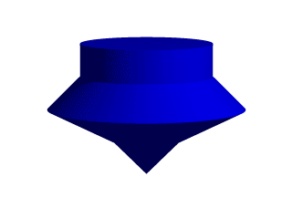 |
|
A simple lathe object. |
First, we would like to digress a moment to talk about the difference between a lathe and a surface of revolution object (SOR). The SOR object, described in a separate tutorial, may seem terribly similar to the lathe at first glance. It too declares a series of points and connects them with curving lines and then rotates them around the y-axis. The lathe has certain advantages, such as linear, quadratic, cubic and bezier spline support.
Plus, the simpler mathematics used by a SOR does not allow the curve to double back over the same y-coordinates, thus, if using a SOR, any sudden twist which cuts back down over the same heights that the curve previously covered will trigger an error. For example, suppose we wanted a lathe to arc up from <0,0> to <2,2>, then to dip back down to <4,0>. Rotated around the y-axis, this would produce something like a gelatin mold - a rounded semi torus, hollow in the middle. But with the SOR, as soon as the curve doubled back on itself in the y-direction, it would become an illegal declaration.
Still, the SOR has one powerful strong point: because it uses simpler order mathematics, it generally tends to render faster than an equivalent lathe. So in the end, it is a matter of: we use a SOR if its limitations will allow, but when we need a more flexible shape, we go with the lathe instead.
2.3.1.1.1 Understanding The Concept of Splines
It would be helpful, in order to understand splines, if we had a sort of Spline Workshop where we could practice manipulating types and points of splines and see what the effects were like. So let's make one! Now that we know how to create a basic lathe, it will be easy:
#include "colors.inc"
camera {
orthographic
up <0, 5, 0>
right <5, 0, 0>
location <2.5, 2.5, -100>
look_at <2.5, 2.5, 0>
}
/* set the control points to be used */
#declare Red_Point = <1.00, 0.00>;
#declare Orange_Point = <1.75, 1.00>;
#declare Yellow_Point = <2.50, 2.00>;
#declare Green_Point = <2.00, 3.00>;
#declare Blue_Point = <1.50, 4.00>;
/* make the control points visible */
cylinder { Red_Point, Red_Point - <0,0,20>, .1
pigment { Red }
finish { ambient 1 }
}
cylinder { Orange_Point, Orange_Point - <0,0,20>, .1
pigment { Orange }
finish { ambient 1 }
}
cylinder { Yellow_Point, Yellow_Point - <0,0,20>, .1
pigment { Yellow }
finish { ambient 1 }
}
cylinder { Green_Point, Green_Point - <0,0,20>, .1
pigment { Green }
finish { ambient 1 }
}
cylinder { Blue_Point, Blue_Point- <0,0,20>, .1
pigment { Blue }
finish { ambient 1 }
}
/* something to make the curve show up */
lathe {
linear_spline
5,
Red_Point,
Orange_Point,
Yellow_Point,
Green_Point,
Blue_Point
pigment { White }
finish { ambient 1 }
}
| 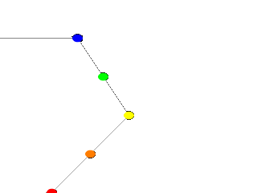 |
Now, we take a deep breath. We know that all looks a bit weird, but with some simple explanations, we can easily see what all this does. First, we are using the orthographic camera. If we have not read up on that yet, a quick summary is: it renders the scene flat, eliminating perspective distortion so that in a side view. The objects look like they were drawn on a piece of graph paper, like in the side view of a modeler or CAD package. There are several uses for this practical type of camera, but here it is allowing us to see our lathe and cylinders edge on, so that what we see is almost like a cross section of the curve which makes the lathe, rather than the lathe itself. To further that effect, we eliminated shadowing with the |
|
A simple Spline Workshop |
Next, we declared a set of points. We note that we used 3D vectors for these points rather than the 2D vectors we expect in a lathe. That is the exception we mentioned earlier. When we declare a 3D point, then use it in a lathe, the lathe only uses the first two components of the vector, and whatever is in the third component is simply ignored. This is handy here, since it makes this example possible.
Next we do two things with the declared points. First we use them to place small diameter cylinders at the locations of the points with the circular caps facing the camera. Then we re-use those same vectors to determine the lathe.
Since trying to declare a 2D vector can have some odd results, and is not really what our cylinder declarations need anyway, we can take advantage of the lathe's tendency to ignore the third component by just setting the z-coordinate in these 3D vectors to zero.
The end result is: when we render this code, we see a white lathe against a black background showing us how the curve we have declared looks, and the circular ends of the cylinders show us where along the x-y-plane our control points are. In this case, it is very simple. The linear spline has been used so our curve is just straight lines zig-zagging between the points.
| 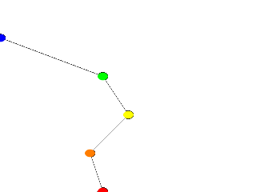 |
We change the declarations of #declare Red_Point = <2.00, 0.00>; #declare Blue_Point = <0.00, 4.00>; We re-render and, as we can see, all that happens is that the straight line segments just move to accommodate the new position of the red and blue points. Linear splines are so simple, we could manipulate them in our sleep, no? |
|
Moving some points of the spline. |
Now let's examine the different types of splines that the lathe object supports:
| 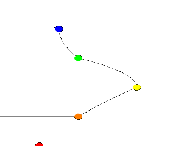 |
First, we change the points to the following. #declare Red_Point = <1.00, 0.00>; #declare Orange_Point = <2.00, 1.00>; #declare Yellow_Point = <3.50, 2.00>; #declare Green_Point = <2.00, 3.00>; #declare Blue_Point = <1.50, 4.00>; We then find the lathe declaration and change |
|
A quadratic spline lathe. |
Well, while any two points can determine a straight line, it takes three to determine a quadratic curve. POV-Ray looks not only to the two points to be connected, but to the point immediately preceding them to determine the formula of the quadratic curve that will be used to connect them. The problem comes in at the beginning of the curve. Beyond the first point in the curve there is no previous point. So we need to declare one. Therefore, when using a quadratic spline, we must remember that the first point we specify is only there so that POV-Ray can determine what curve to connect the first two points with. It will not show up as part of the actual curve.
There is just one more thing about this lathe example. Even though our curve is now put together with smooth curving lines, the transitions between those lines is... well, kind of choppy, no? This curve looks like the lines between each individual point have been terribly mismatched. Depending on what we are trying to make, this could be acceptable, or, we might need a more smoothly curving shape. Fortunately, if the latter is true, we have another option.
The quadratic spline takes longer to render than a linear spline. The math is more complex. Taking longer still is the cubic spline, yet for a really smoothed out shape this is the only way to go. We go back into our example, and simply replace quadratic_spline with cubic_spline. We render one more time, and take a look at what we have.
| 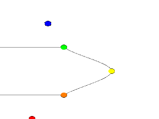 |
While a quadratic spline takes three points to determine the curve, a cubic needs four. So, as we might expect, |
|
A cubic spline lathe. |
Finally there is another kind of quadratic spline, the bezier_spline. This one takes four points per section. The start point, the end points and in between, two control points. To use it, we will have to make a few changes to our work shop. Delete the Yellow point, delete the Yellow cylinder. Change the points to:
#declare Red_Point = <2.00, 1.00>; #declare Orange_Point = <3.00, 1.50>; #declare Green_Point = <3.00, 3.50>; #declare Blue_Point = <2.00, 4.00>;
And change the lathe to:
lathe {
bezier_spline
4,
Red_Point,
Orange_Point,
Green_Point,
Blue_Point
pigment { White }
finish { ambient 1 }
}
| 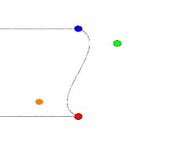 |
The green and orange control points are not connected to the curve. Move them around a bit, for example: #declare Orange_Point = <1.00, 1.50>; The line that can be drawn from the start point to its closest control point (red to orange) shows the tangent of the curve at the start point. Same for the end point, blue to green. |
|
A bezier spline lathe. |
One spline segment is nice, two is nicer. So we will add another segment and connect it to the blue point. One segment has four points, so two segments have eight. The first point of the second segment is the same as the last point of the first segment. The blue point. So we only have to declare three more points. Also we have to move the camera a bit and add more cylinders. Here is the complete scene again:
#include "colors.inc"
camera {
orthographic
up <0, 7, 0>
right <7, 0, 0>
location <3.5, 4, -100>
look_at <3.5, 4, 0>
}
/* set the control points to be used */
#declare Red_Point = <2.00, 1.00>;
#declare Orange_Point = <1.00, 1.50>;
#declare Green_Point = <3.00, 3.50>;
#declare Blue_Point = <2.00, 4.00>;
#declare Green_Point2 = <3.00, 4.50>;
#declare Orange_Point2= <1.00, 6.50>;
#declare Red_Point2 = <2.00, 7.00>;
/* make the control points visible */
cylinder { Red_Point, Red_Point - <0,0,20>, .1
pigment { Red } finish { ambient 1 }
}
cylinder { Orange_Point, Orange_Point - <0,0,20>, .1
pigment { Orange } finish { ambient 1 }
}
cylinder { Green_Point, Green_Point - <0,0,20>, .1
pigment { Green } finish { ambient 1 }
}
cylinder { Blue_Point, Blue_Point- <0,0,20>, .1
pigment { Blue } finish { ambient 1 }
}
cylinder { Green_Point2, Green_Point2 - <0,0,20>, .1
pigment { Green } finish { ambient 1 }
}
cylinder { Orange_Point2, Orange_Point2 - <0,0,20>, .1
pigment { Orange } finish { ambient 1 }
}
cylinder { Red_Point2, Red_Point2 - <0,0,20>, .1
pigment { Red } finish { ambient 1 }
}
/* something to make the curve show up */
lathe {
bezier_spline
8,
Red_Point, Orange_Point, Green_Point, Blue_Point
Blue_Point, Green_Point2, Orange_Point2, Red_Point2
pigment { White }
finish { ambient 1 }
}
| 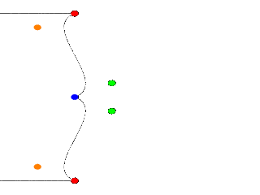 |
A nice curve, but what if we want a smooth curve? Let us have a look at the tangents on the |
|
Two bezier spline segments, not smooth. |
Try a few positions for Green_Point2 and end with:
#declare Green_Point2 = <1.00, 4.50>;
| 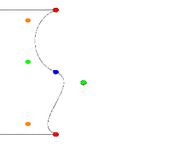 |
It's a smooth curve. If we make sure that the two control points and the connection point are on one line, the curve is perfectly smooth. |
|
A smooth bezier spline lathe. |
In general this can be achieved by:
#declare Green_Point2 = Blue_Point + (Blue_Point - Green_Point);
The concept of splines is a handy and necessary one, which will be seen again in the prism and polygon objects. It's easy to see, that with a little tinkering, how quickly we can get a feel for working with splines.
2.3.1.2 Surface of Revolution Object
Bottles, vases and glasses make nice objects in ray-traced scenes. We want to create a golden cup using the surface of revolution object (SOR object).
We first start by thinking about the shape of the final object. It is quite difficult to come up with a set of points that describe a given curve without the help of a modeling program supporting POV-Ray's surface of revolution object. If such a program is available we should take advantage of it.
| 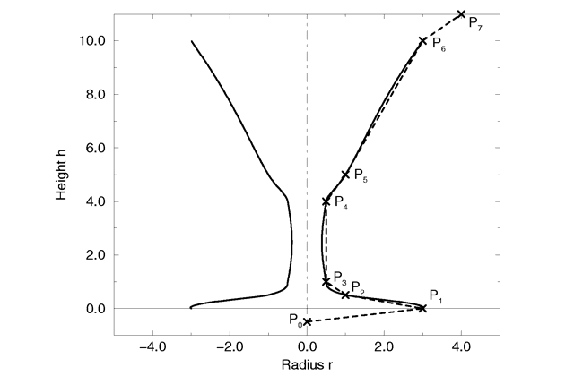 |
|
The point configuration of our cup object. |
We will use the point configuration shown in the figure above. There are eight points describing the curve that will be rotated about the y-axis to get our cup. The curve was calculated using the method described in the reference section (see Surface of Revolution).
Now it is time to come up with a scene that uses the above SOR object. We
create a file called sordemo.pov and enter the following text.
#include "colors.inc"
#include "golds.inc"
camera {
location <10, 15, -20>
look_at <0, 5, 0>
angle 45
}
background { color rgb<0.2, 0.4, 0.8> }
light_source { <100, 100, -100> color rgb 1 }
plane {
y, 0
pigment { checker color Red, color Green scale 10 }
}
sor {
8,
<0.0, -0.5>,
<3.0, 0.0>,
<1.0, 0.2>,
<0.5, 0.4>,
<0.5, 4.0>,
<1.0, 5.0>,
<3.0, 10.0>,
<4.0, 11.0>
open
texture { T_Gold_1B }
}
The scene contains our cup object resting on a checkered plane. Tracing this scene results in the image below.
| 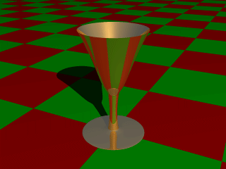 |
|
A surface of revolution object. |
The surface of revolution is described by starting with the number of points followed by the points. Points from second to last but one are listed with ascending heights. Each of them determines the radius of the curve for a given height. E. g. the first valid point (second listed) tells POV-Ray that at height 0.0 the radius is 3. We should take care that each point has a larger height than its predecessor. If this is not the case the program will abort with an error message. First and last point from the list are used to determine slope at beginning and end of curve and can be defined for any height.
2.3.1.3 Prism Object
The prism is essentially a polygon or closed curve which is swept along a
linear path. We can imagine the shape so swept leaving a trail in space, and
the surface of that trail is the surface of our prism. The curve or polygon
making up a prism's face can be a composite of any number of sub-shapes,
can use any kind of three different splines, and can either keep a constant
width as it is swept, or slowly tapering off to a fine point on one end. But
before this gets too confusing, let's start one step at a time with the
simplest form of prism. We enter and render the following POV code (see file
prismdm1.pov).
#include "colors.inc"
background{White}
camera {
angle 20
location <2, 10, -30>
look_at <0, 1, 0>
}
light_source { <20, 20, -20> color White }
prism {
linear_sweep
linear_spline
0, // sweep the following shape from here ...
1, // ... up through here
7, // the number of points making up the shape ...
<3,5>, <-3,5>, <-5,0>, <-3,-5>, <3, -5>, <5,0>, <3,5>
pigment { Green }
}
| 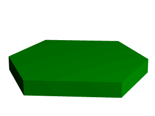 |
|
A hexagonal prism shape. |
This produces a hexagonal polygon, which is then swept from y=0 through y=1. In other words, we now have an extruded hexagon. One point to note is that although this is a six sided figure, we have used a total of seven points. That is because the polygon is supposed to be a closed shape, which we do here by making the final point the same as the first. Technically, with linear polygons, if we did not do this, POV-Ray would automatically join the two ends with a line to force it to close, although a warning would be issued. However, this only works with linear splines, so we must not get too casual about those warning messages!
2.3.1.3.1 Teaching An Old Spline New Tricks
If we followed the section on splines covered under the lathe tutorial (see the section Understanding The Concept of Splines), we know that there are two additional kinds of splines besides linear: the quadratic and the cubic spline. Sure enough, we can use these with prisms to make a more free form, smoothly curving type of prism.
There is just one catch, and we should read this section carefully to keep from tearing our hair out over mysterious too few points in prism messages which keep our prism from rendering. We can probably guess where this is heading: how to close a non-linear spline. Unlike the linear spline, which simply draws a line between the last and first points if we forget to make the last point equal to the first, quadratic and cubic splines are a little more fussy.
First of all, we remember that quadratic splines determine the equation of the curve which connects any two points based on those two points and the previous point, so the first point in any quadratic spline is just control point and will not actually be part of the curve. What this means is: when we make our shape out of a quadratic spline, we must match the second point to the last, since the first point is not on the curve - it is just a control point needed for computational purposes.
Likewise, cubic splines need both the first and last points to be control points, therefore, to close a shape made with a cubic spline, we must match the second point to the second from last point. If we do not match the correct points on a quadratic or cubic shape, that is when we will get the too few points in prism error. POV-Ray is still waiting for us to close the shape, and when it runs out of points without seeing the closure, an error is issued.
Confused? Okay, how about an example? We replace the prism in our last bit
of code with this one (see file prismdm2.pov).
prism {
cubic_spline
0, // sweep the following shape from here ...
1, // ... up through here
6, // the number of points making up the shape ...
< 3, -5>, // point#1 (control point... not on curve)
< 3, 5>, // point#2 ... THIS POINT ...
<-5, 0>, // point#3
< 3, -5>, // point#4
< 3, 5>, // point#5 ... MUST MATCH THIS POINT
<-5, 0> // point#6 (control point... not on curve)
pigment { Green }
}
| 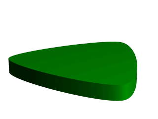 |
|
A cubic, triangular prism shape. |
This simple prism produces what looks like an extruded triangle with its corners sanded smoothly off. Points two, three and four are the corners of the triangle and point five closes the shape by returning to the location of point two. As for points one and six, they are our control points, and are not part of the shape - they are just there to help compute what curves to use between the other points.
2.3.1.3.2 Smooth Transitions
Now a handy thing to note is that we have made point one equal point four,
and also point six equals point three. Yes, this is important. Although this
prism would still be legally closed if the control points were not what
we have made them, the curve transitions between points would not be as
smooth. We change points one and six to <4,6> and <0,7>
respectively and re-render to see how the back edge of the shape is altered
(see file prismdm3.pov).
To put this more generally, if we want a smooth closure on a cubic spline, we make the first control point equal to the third from last point, and the last control point equal to the third point. On a quadratic spline, the trick is similar, but since only the first point is a control point, make that equal to the second from last point.
2.3.1.3.3 Multiple Sub-Shapes
Just as with the polygon object (see section
Polygon Object)
the prism is very flexible, and allows us to make one prism out of several
sub-prisms. To do this, all we need to do is keep listing points after we
have already closed the first shape. The second shape can be simply an add on
going off in another direction from the first, but one of the more
interesting features is that if any even number of sub-shapes overlap, that
region where they overlap behaves as though it has been cut away from both
sub-shapes. Let's look at another example. Once again, same basic code as
before for camera, light and so forth, but we substitute this complex prism
(see file prismdm4.pov).
prism {
linear_sweep
cubic_spline
0, // sweep the following shape from here ...
1, // ... up through here
18, // the number of points making up the shape ...
<3,-5>, <3,5>, <-5,0>, <3, -5>, <3,5>, <-5,0>,//sub-shape #1
<2,-4>, <2,4>, <-4,0>, <2,-4>, <2,4>, <-4,0>, //sub-shape #2
<1,-3>, <1,3>, <-3,0>, <1, -3>, <1,3>, <-3,0> //sub-shape #3
pigment { Green }
}
| 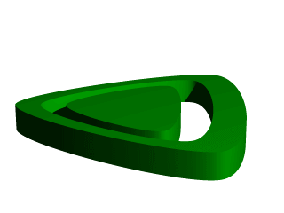 |
|
Using sub-shapes to create a more complex shape. |
For readability purposes, we have started a new line every time we moved on to a new sub-shape, but the ray-tracer of course tells where each shape ends based on whether the shape has been closed (as described earlier). We render this new prism, and look what we have got. It is the same familiar shape, but it now looks like a smaller version of the shape has been carved out of the center, then the carved piece was sanded down even smaller and set back in the hole.
Simply, the outer rim is where only sub-shape one exists, then the carved out part is where sub-shapes one and two overlap. In the extreme center, the object reappears because sub-shapes one, two, and three overlap, returning us to an odd number of overlapping pieces. Using this technique we could make any number of extremely complex prism shapes!
2.3.1.3.4 Conic Sweeps And The Tapering Effect
In our original prism, the keyword linear_sweep is actually
optional. This is the default sweep assumed for a prism if no type of sweep
is specified. But there is another, extremely useful kind of sweep: the conic
sweep. The basic idea is like the original prism, except that while we are
sweeping the shape from the first height through the second height, we are
constantly expanding it from a single point until, at the second height, the
shape has expanded to the original points we made it from. To give a small
idea of what such effects are good for, we replace our existing prism with
this (see file prismdm4.pov):
prism {
conic_sweep
linear_spline
0, // height 1
1, // height 2
5, // the number of points making up the shape...
<4,4>,<-4,4>,<-4,-4>,<4,-4>,<4,4>
rotate <180, 0, 0>
translate <0, 1, 0>
scale <1, 4, 1>
pigment { gradient y scale .2 }
}
| 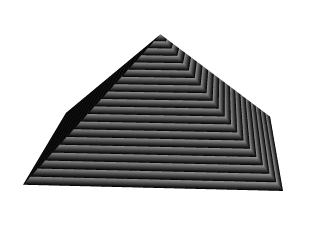 |
|
Creating a pyramid using conic sweeping. |
The gradient pigment was selected to give some definition to our object without having to fix the lights and the camera angle right at this moment, but when we render it, what have we created? A horizontally striped pyramid! By now we can recognize the linear spline connecting the four points of a square, and the familiar final point which is there to close the spline.
Notice all the transformations in the object declaration. That is going to take a little explanation. The rotate and translate are easy. Normally, a conic sweep starts full sized at the top, and tapers to a point at y=0, but of course that would be upside down if we are making a pyramid. So we flip the shape around the x-axis to put it right side up, then since we actually orbited around the point, we translate back up to put it in the same position it was in when we started.
The scale is to put the proportions right for this example. The base is eight units by eight units, but the height (from y=1 to y=0) is only one unit, so we have stretched it out a little. At this point, we are probably thinking, why not just sweep up from y=0 to y=4 and avoid this whole scaling thing?
That is a very important gotcha! with conic sweeps. To see what is wrong
with that, let's try and put it into practice (see file
prismdm5.pov). We must make sure to remove the scale statement, and
then replace the line which reads
1, // height 2
with
4, // height 2
This sets the second height at y=4, so let's re-render and see if the effect is the same.
| 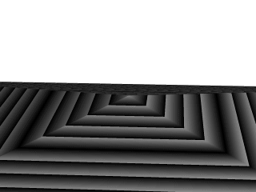 |
|
Choosing a second height larger than one for the conic sweep. |
Whoa! Our height is correct, but our pyramid's base is now huge! What went wrong here? Simple. The base, as we described it with the points we used actually occurs at y=1 no matter what we set the second height for. But if we do set the second height higher than one, once the sweep passes y=1, it keeps expanding outward along the same lines as it followed to our original base, making the actual base bigger and bigger as it goes.
To avoid losing control of a conic sweep prism, it is usually best to let the second height stay at y=1, and use a scale statement to adjust the height from its unit size. This way we can always be sure the base's corners remain where we think they are.
That leads to one more interesting thing about conic sweeps. What if we for some reason do not want them to taper all the way to a point? What if instead of a complete pyramid, we want more of a ziggurat step? Easily done. After putting the second height back to one, and replacing our scale statement, we change the line which reads
0, // height 1
to
0.251, // height 1
| 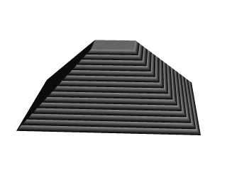 |
|
Increasing the first height for the conic sweep. |
When we re-render, we see that the sweep stops short of going all the way to its point, giving us a pyramid without a cap. Exactly how much of the cap is cut off depends on how close the first height is to the second height.
2.3.1.4 Sphere Sweep Object
A Sphere Sweep Object is the space a sphere occupies during its movement along a spline.
So we need to specify the kind of spline we want and a list of control points to define
that spline. To help POV-Ray we tell how many control points will be used. In addition, we also
define the radius the moving sphere should have when passing through each of these control
points.
The syntax of the sphere_sweep object is:
sphere_sweep {
linear_spline | b_spline | cubic_spline
NUM_OF_SPHERES,
CENTER, RADIUS,
CENTER, RADIUS,
...
CENTER, RADIUS
[tolerance DEPTH_TOLERANCE]
[OBJECT_MODIFIERS]
}
An example for a linear Sphere Sweep would be:
sphere_sweep {
linear_spline
4,
<-5, -5, 0>, 1
<-5, 5, 0>, 1
< 5, -5, 0>, 1
< 5, 5, 0>, 1
}
This object is described by four spheres. You can use as many spheres as you like to describe the object, but you will need at least two spheres for a linear Sphere Sweep, and four spheres for one approximated with a cubic_spline or b_spline.
The example above would result in an object shaped like the letter "N". The sphere sweep goes through all points which are connected with straight cones.
Changing the kind of interpolation to a cubic_spline produces a quite different, slightly bent, object. It then starts at the second sphere and ends at the last but one. Since the first and last points are used to control the spline, you need two more points to get a shape that can be compared to the linear sweep. Let's add them:
sphere_sweep {
cubic_spline
6,
<-4, -5, 0>, 1
<-5, -5, 0>, 1
<-5, 5, 0>, 0.5
< 5, -5, 0>, 0.5
< 5, 5, 0>, 1
< 4, 5, 0>, 1
tolerance 0.1
}
So the cubic sweep creates a smooth sphere sweep actually going through
all points (except the first and last one). In this example the radius of the second and third
spheres have been changed. We also added the tolerance keyword, because
dark spots appeared on the surface with the default value (0.000001).
When using a b_spline, the resulting object is somewhat similar to the cubic sweep, but does not actually go through the control points. It lies somewhere between them.
2.3.1.5 Bicubic Patch Object
Bicubic patches are useful surface representations because they allow an easy definition of surfaces using only a few control points. The control points serve to determine the shape of the patch. Instead of defining the vertices of triangles, we simply give the coordinates of the control points. A single patch has 16 control points, one at each corner, and the rest positioned to divide the patch into smaller sections. POV-Ray does not ray trace the patches directly, they are approximated using triangles as described in the Scene Description Language section.
Bicubic patches are almost always created by using a third party modeler, but for this tutorial
we will manipulate them by hand. Modelers that support Bicubic patches and export to POV-Ray
can be found in the links collection on our server
Let's set up a basic scene and start exploring the Bicubic patch.
#version 3.5;
global_settings {assumed_gamma 1.0}
background {rgb <1,0.9,0.9>}
camera {location <1.6,5,-6> look_at <1.5,0,1.5> angle 40}
light_source {<500,500,-500> rgb 1 }
#declare B11=<0,0,3>; #declare B12=<1,0,3>; //
#declare B13=<2,0,3>; #declare B14=<3,0,3>; // row 1
#declare B21=<0,0,2>; #declare B22=<1,0,2>; //
#declare B23=<2,0,2>; #declare B24=<3,0,2>; // row 2
#declare B31=<0,0,1>; #declare B32=<1,0,1>; //
#declare B33=<2,0,1>; #declare B34=<3,0,1>; // row 3
#declare B41=<0,0,0>; #declare B42=<1,0,0>; //
#declare B43=<2,0,0>; #declare B44=<3,0,0>; // row 4
bicubic_patch {
type 1 flatness 0.001
u_steps 4 v_steps 4
uv_vectors
<0,0> <1,0> <1,1> <0,1>
B11, B12, B13, B14
B21, B22, B23, B24
B31, B32, B33, B34
B41, B42, B43, B44
uv_mapping
texture {
pigment {
checker
color rgbf <1,1,1,0.5>
color rgbf <0,0,1,0.7>
scale 1/3
}
finish {phong 0.6 phong_size 20}
}
no_shadow
}
The points B11, B14, B41, B44 are the corner points of the patch. All other points are control points. The names of the declared points are as follows: B for the colour of the patch, the first digit gives the row number, the second digit the column number. If you render the above scene, you will get a blue & white checkered square, not very exciting. First we will add some spheres to make the control points visible. As we do not want to type the code for 16 spheres, we will use an array and a while loop to construct the spheres.
#declare Points=array[16]{
B11, B12, B13, B14
B21, B22, B23, B24
B31, B32, B33, B34
B41, B42, B43, B44
}
#declare I=0;
#while (I<16)
sphere {
Points[I],0.1
no_shadow
pigment{
#if (I=0|I=3|I=12|I=15)
color rgb <1,0,0>
#else
color rgb <0,1,1>
#end
}
}
#declare I=I+1;
#end
Rendering this scene will show the patch with its corner points in red and its control
points in cyan. Now it is time to start exploring.
Change B41 to <-1,0,0> and render.
Change B41 to <-1,1,0> and render.
Change B41 to < 1,2,1> and render.
Let's do some exercise with the control points. Start with a flat patch again.
Change B42 to <1,2,0> and B43 to <2,-2,0> and render.
Change B42 and B43 back to their original positions and try B34 to <4,2,1>
and B24 to <2,-2,2> and render. Move the points around some more, also
try the control points in the middle.
| 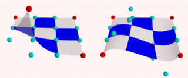 |
|
Bicubic_patch with control points. |
After all this we notice two things:
- The patch always goes through the corner points.
- In most situations the patch does not go through the control points.
Now go back to our spline work shop and have a look at the bezier_spline again. Indeed, the points B11, B12, B13, B14, make up a bezier_spline. So do the points B11, B21, B31, B41 and B41, B42, B43, B44 and B14, B24, B34, B44.
So far we have only been looking at one single patch, but one of the strengths of the Bicubic patch lays in the fact that they can be connected smoothly, to form bigger shapes. The process of connecting is relatively simple as there are actually only two rules to follow. It can be done by using a well set up set of macros or by using a modeler. To give an idea what is needed we will do a simple example by hand.
First put the patch in our scene back to its flat position.
Next change:
#declare B14 = <3,0,3>; #declare B24 = <3,2,2>; #declare B34 = <3.5,1,1>; #declare B44 = <3,-1,0>; #declare B41 = <0,-1,0>;
Move the camera a bit back:
camera { location <3.1,7,-8> look_at <3,-2,1.5> angle 40 }
... and delete all the code for the spheres. We will now try and stitch a patch to the right side of the current one. Off course the points on the left side (column 1) of the new patch have to be in the same position as the points on the right side (column 4) of the blue one.
Render the scene, including our new patch:
#declare R11=B14; #declare R12=<4,0,3>; //
#declare R13=<5,0,3>; #declare R14=<6,0,3>; // row 1
#declare R21=B24; #declare R22=<4,0,2>; //
#declare R23=<5,0,2>; #declare R24=<6,0,2>; // row 2
#declare R31=B34; #declare R32=<4,0,1>; //
#declare R33=<5,0,1>; #declare R34=<6,0,1>; // row 3
#declare R41=B44; #declare R42=<4,0,0>; //
#declare R43=<5,0,0>; #declare R44=<6,0,0>; // row 4
bicubic_patch {
type 1 flatness 0.001
u_steps 4 v_steps 4
uv_vectors
<0,0> <1,0> <1,1> <0,1>
R11, R12, R13, R14
R21, R22, R23, R24
R31, R32, R33, R34
R41, R42, R43, R44
uv_mapping
texture {
pigment {
checker
color rgbf <1,1,1,0.5>
color rgbf <1,0,0,0.7>
scale 1/3
}
finish {phong 0.6 phong_size 20}
}
no_shadow
}
This is a rather disappointing result. The patches are connected, but not exactly smooth. In connecting patches the same principles apply as for connecting two 2D bezier splines as we see in the spline workshop. Control point, connection point and the next control point should be on one line to give a smooth result. Also it is preferred, not required, that the distances from both control points to the connection point are the same. For the Bicubic patch we have to do the same, for all connection points involved in the joint. So, in our case, the following points should be on one line:
- B13, B14=R11, R12
- B23, B24=R21, R22
- B33, B34=R31, R32
- B43, B44=R41, R42
To achieve this we do:
#declare R12=B14+(B14-B13); #declare R22=B24+(B24-B23); #declare R32=B34+(B34-B33); #declare R42=B44+(B44-B43);
| 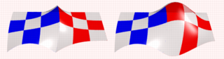 |
|
patches, (un)smoothly connected. |
This renders a smooth surface. Adding a third patch in front is relative simple now:
#declare G11=B41; #declare G12=B42; //
#declare G13=B43; #declare G14=B44; // row 1
#declare G21=B41+(B41-B31); #declare G22=B42+(B42-B32); //
#declare G23=B43+(B43-B33); #declare G24=B44+(B44-B34); // row 2
#declare G31=<0,0,-2>; #declare G32=<1,0,-2>; //
#declare G33=<2,0,-2>; #declare G34=<3,2,-2>; // row 3
#declare G41=<0,0,-3>; #declare G42=<1,0,-3>; //
#declare G43=<2,0,-3>; #declare G44=<3,0,-3> // row 4
bicubic_patch {
type 1 flatness 0.001
u_steps 4 v_steps 4
uv_vectors
<0,0> <1,0> <1,1> <0,1>
G11, G12, G13, G14
G21, G22, G23, G24
G31, G32, G33, G34
G41, G42, G43, G44
uv_mapping
texture {
pigment {
checker
color rgbf <1,1,1,0.5>
color rgbf <0,1,0,0.7>
scale 1/3
}
finish {phong 0.6 phong_size 20}
}
no_shadow
}
Finally, let's put a few spheres back in the scene and add some cylinders to visualize what is going on. See what happens if you move for example B44, B43, B33 or B34.
#declare Points=array[8]{B33,B34,R32,B43,B44,R42,G23,G24}
#declare I=0;
#while (I<8)
sphere {
Points[I],0.1
no_shadow
pigment{
#if (I=4)
color rgb <1,0,0>
#else
color rgb <0,1,1>
#end
}
}
#declare I=I+1;
#end
union {
cylinder {B33,B34,0.04} cylinder {B34,R32,0.04}
cylinder {B43,B44,0.04} cylinder {B44,R42,0.04}
cylinder {G23,G24,0.04}
cylinder {B33,B43,0.04} cylinder {B43,G23,0.04}
cylinder {B34,B44,0.04} cylinder {B44,G24,0.04}
cylinder {R32,R42,0.04}
no_shadow
pigment {color rgb <1,1,0>}
}
The hard part in using the Bicubic patch is not in connecting several patches. The difficulty is keeping control over the shape you want to build. As patches are added, in order to keep the result smooth, control over the position of many points gets restrained.
| 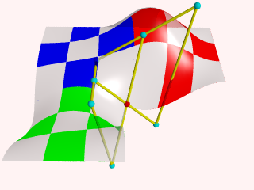 |
|
3 patches, some control points. |
2.3.1.6 Text Object
The text object is a primitive that can use TrueType fonts
and TrueType Collections to create text objects. These
objects can be used in CSG, transformed and textured just like any other POV
primitive.
For this tutorial, we will make two uses of the text object. First,
let's just make some block letters sitting on a checkered plane. Any TTF
font should do, but for this tutorial, we will use the
timrom.ttf or cyrvetic.ttf which come bundled with
POV-Ray.
We create a file called textdemo.pov and edit it as
follows:
#include "colors.inc"
camera {
location <0, 1, -10>
look_at 0
angle 35
}
light_source { <500,500,-1000> White }
plane {
y,0
pigment { checker Green White }
}
Now let's add the text object. We will use the font
timrom.ttf and we will create the string "POV-RAY 3.0". For
now, we will just make the letters red. The syntax is very simple. The first
string in quotes is the font name, the second one is the string to be
rendered. The two floats are the thickness and offset values. The thickness
float determines how thick the block letters will be. Values of .5 to 2 are
usually best for this. The offset value will add to the kerning distance of
the letters. We will leave this a 0 for now.
text {
ttf "timrom.ttf" "POV-RAY 3.0" 1, 0
pigment { Red }
}
Rendering this we notice that the letters are off to the right of the screen. This is because they are placed so that the lower left front corner of the first letter is at the origin. To center the string we need to translate it -x some distance. But how far? In the docs we see that the letters are all 0.5 to 0.75 units high. If we assume that each one takes about 0.5 units of space on the x-axis, this means that the string is about 6 units long (12 characters and spaces). Let's translate the string 3 units along the negative x-axis.
text {
ttf "timrom.ttf" "POV-RAY 3.0" 1, 0
pigment { Red }
translate -3*x
}
That is better. Now let's play around with some of the parameters of the text object. First, let's raise the thickness float to something outlandish... say 25!
text {
ttf "timrom.ttf" "POV-RAY 3.0" 25, 0
pigment { Red }
translate -2.25*x
}
Actually, that is kind of cool. Now let's return the thickness value to 1 and try a different offset value. Change the offset float from 0 to 0.1 and render it again.
Wait a minute?! The letters go wandering off up at an angle! That is not
what the docs describe! It almost looks as if the offset value applies in
both the x- and y-axis instead of just the x axis like we intended. Could it
be that a vector is called for here instead of a float? Let's try it. We
replace 0.1 with 0.1*x and render it again.
That works! The letters are still in a straight line along the x-axis, just
a little further apart. Let's verify this and try to offset just in the
y-axis. We replace 0.1*x with 0.1*y. Again, this
works as expected with the letters going up to the right at an angle with no
additional distance added along the x-axis. Now let's try the z-axis. We
replace 0.1*y with 0.1*z. Rendering this yields a
disappointment. No offset occurs! The offset value can only be applied in the
x- and y-directions.
Let's finish our scene by giving a fancier texture to the block letters,
using that cool large thickness value, and adding a slight y-offset. For fun,
we will throw in a sky sphere, dandy up our plane a bit, and use a little
more interesting camera viewpoint (we render the following scene at 640x480
+A0.2):
#include "colors.inc"
camera {
location <-5,.15,-2>
look_at <.3,.2,1>
angle 35
}
light_source { <500,500,-1000> White }
plane {
y,0
texture {
pigment { SeaGreen }
finish { reflection .35 specular 1 }
normal { ripples .35 turbulence .5 scale .25 }
}
}
text {
ttf "timrom.ttf" "POV-RAY 3.0" 25, 0.1*y
pigment { BrightGold }
finish { reflection .25 specular 1 }
translate -3*x
}
#include "skies.inc"
sky_sphere { S_Cloud5 }
Let's try using text in a CSG object. We will attempt to create an
inlay in a stone block using a text object. We create a new file called
textcsg.pov and edit it as follows:
#include "colors.inc"
#include "stones.inc"
background { color rgb 1 }
camera {
location <-3, 5, -15>
look_at 0
angle 25
}
light_source { <500,500,-1000> White }
Now let's create the block. We want it to be about eight units across because our text string "POV-RAY 3.0" is about six units long. We also want it about four units high and about one unit deep. But we need to avoid a potential coincident surface with the text object so we will make the first z-coordinate 0.1 instead of 0. Finally, we will give this block a nice stone texture.
box {
<-3.5, -1, 0.1>, <3.5, 1, 1>
texture { T_Stone10 }
}
Next, we want to make the text object. We can use the same object we used in the first tutorial except we will use slightly different thickness and offset values.
text {
ttf "timrom.ttf" "POV-RAY 3.0" 0.15, 0
pigment { BrightGold }
finish { reflection .25 specular 1 }
translate -3*x
}
We remember that the text object is placed by default so that its front surface lies directly on the x-y-plane. If the front of the box begins at z=0.1 and thickness is set at 0.15, the depth of the inlay will be 0.05 units. We place a difference block around the two objects.
difference {
box {
<-3.5, -1, 0.1>, <3.5, 1, 1>
texture { T_Stone10 }
}
text {
ttf "timrom.ttf" "POV-RAY 3.0" 0.15, 0
pigment { BrightGold }
finish { reflection .25 specular 1 }
translate -3*x
}
}
| 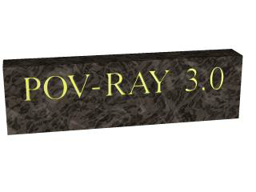 |
|
Text carved from stone. |
When we render this at a low resolution we can see the inlay clearly and that it is indeed a bright gold color. We can render at a higher resolution and see the results more clearly but be forewarned... this trace will take a little time.
2.3.2 Polygon Based Shapes
2.3.2.1 Mesh Object
Mesh objects are very useful because they allow us to create objects containing hundreds or thousands of triangles. Compared to a simple union of triangles the mesh object stores the triangles more efficiently. Copies of mesh objects need only a little additional memory because the triangles are stored only once.
Almost every object can be approximated using triangles but we may need a lot of triangles to create more complex shapes. Thus we will only create a very simple mesh example. This example will show a very useful feature of the triangles meshes though: a different texture can be assigned to each triangle in the mesh.
Now let's begin. We will create a simple box with differently colored
sides. We create an empty file called meshdemo.pov and add the
following lines. Note that a mesh is - not surprisingly - declared using the
keyword mesh.
camera {
location <20, 20, -50>
look_at <0, 5, 0>
}
light_source { <50, 50, -50> color rgb<1, 1, 1> }
#declare Red = texture {
pigment { color rgb<0.8, 0.2, 0.2> }
finish { ambient 0.2 diffuse 0.5 }
}
#declare Green = texture {
pigment { color rgb<0.2, 0.8, 0.2> }
finish { ambient 0.2 diffuse 0.5 }
}
#declare Blue = texture {
pigment { color rgb<0.2, 0.2, 0.8> }
finish { ambient 0.2 diffuse 0.5 }
}
We must declare all textures we want to use inside the mesh before the mesh is created. Textures cannot be specified inside the mesh due to the poor memory performance that would result.
Now we add the mesh object. Three sides of the box will use individual textures while the other will use the global mesh texture.
mesh {
/* top side */
triangle {
<-10, 10, -10>, <10, 10, -10>, <10, 10, 10>
texture { Red }
}
triangle {
<-10, 10, -10>, <-10, 10, 10>, <10, 10, 10>
texture { Red }
}
/* bottom side */
triangle { <-10, -10, -10>, <10, -10, -10>, <10, -10, 10> }
triangle { <-10, -10, -10>, <-10, -10, 10>, <10, -10, 10> }
/* left side */
triangle { <-10, -10, -10>, <-10, -10, 10>, <-10, 10, 10> }
triangle { <-10, -10, -10>, <-10, 10, -10>, <-10, 10, 10> }
/* right side */
triangle {
<10, -10, -10>, <10, -10, 10>, <10, 10, 10>
texture { Green }
}
triangle {
<10, -10, -10>, <10, 10, -10>, <10, 10, 10>
texture { Green }
}
/* front side */
triangle {
<-10, -10, -10>, <10, -10, -10>, <-10, 10, -10>
texture { Blue }
}
triangle {
<-10, 10, -10>, <10, 10, -10>, <10, -10, -10>
texture { Blue }
}
/* back side */
triangle { <-10, -10, 10>, <10, -10, 10>, <-10, 10, 10> }
triangle { <-10, 10, 10>, <10, 10, 10>, <10, -10, 10> }
texture {
pigment { color rgb<0.9, 0.9, 0.9> }
finish { ambient 0.2 diffuse 0.7 }
}
}
Tracing the scene at 320x240 we will see that the top, right and front
side of the box have different textures. Though this is not a very impressive
example it shows what we can do with mesh objects. More complex examples,
also using smooth triangles, can be found under the scene directory as
chesmsh.pov.
2.3.2.2 Mesh2 Object
The mesh2 is a representation of a mesh, that is much more
like POV-Ray's internal mesh representation than the standard mesh.
As a result, it parses faster and it file size is smaller.
Due to its nature, mesh2 is not really suitable for
building meshes by hand, it is intended for use by modelers and file
format converters. An other option is building the meshes by macros.
Yet, to understand the format, we will do a small example by hand and go through
all options.
 |
|
To be written as mesh2. |
We will turn the mesh sketched above into a mesh2 object.
The mesh is made of 8 triangles, each with 3 vertices, many of
these vertices are shared among the triangles. This can later be
used to optimize the mesh. First we will set it up straight forward.
In mesh2 all the vertices are listed in a list named
vertex_vectors{}. A second list, face_indices{},
tells us how to put together three vertices to create one triangle,
by pointing to the index number of a vertex. All lists in mesh2
are zero based, the number of the first vertex is 0. The very first
item in a list is the amount of vertices, normals or uv_vectors it contains.
mesh2 has to be specified in the order VECTORS...,
LISTS..., INDICES....
Lets go through the mesh above, we do it counter clockwise. The total amount of vertices is 24 (8 triangle * 3 vertices).
mesh2 {
vertex_vectors {
24,
...
Now we can add the coordinates of the vertices of the first triangle:
mesh2 {
vertex_vectors {
24,
<0,0,0>, <0.5,0,0>, <0.5,0.5,0>
..
Next step, is to tell the mesh how the triangle should be created; There will be a total of 8 face_indices (8 triangles). The first point in the first face, points to the first vertex_vector (0: <0,0,0>), the second to the second (1: <0.5,0,0>), etc...
mesh2 {
vertex_vectors {
24,
<0,0,0>, <0.5,0,0>, <0.5,0.5,0>
...
}
face_indices {
8,
<0,1,2>
...
The complete mesh:
mesh2 {
vertex_vectors {
24,
<0,0,0>, <0.5,0,0>, <0.5,0.5,0>, //1
<0.5,0,0>, <1,0,0>, <0.5,0.5,0>, //2
<1,0,0>, <1,0.5,0>, <0.5,0.5,0>, //3
<1,0.5,0>, <1,1,0>, <0.5,0.5,0>, //4
<1,1,0>, <0.5,1,0>, <0.5,0.5,0>, //5
<0.5,1,0>, <0,1,0>, <0.5,0.5,0>, //6
<0,1,0>, <0,0.5,0>, <0.5,0.5,0>, //7
<0,0.5,0>, <0,0,0>, <0.5,0.5,0> //8
}
face_indices {
8,
<0,1,2>, <3,4,5>, //1 2
<6,7,8>, <9,10,11>, //3 4
<12,13,14>, <15,16,17>, //5 6
<18,19,20>, <21,22,23> //7 8
}
pigment {rgb 1}
}
As mentioned earlier, many vertices are shared by triangles. We can optimize the mesh by removing all duplicate vertices but one. In the example this reduces the amount from 24 to 9.
mesh2 {
vertex_vectors {
9,
<0,0,0>, <0.5,0,0>, <0.5,0.5,0>,
/*as 1*/ <1,0,0>, /*as 2*/
/*as 3*/ <1,0.5,0>, /*as 2*/
/*as 4*/ <1,1,0>, /*as 2*/
/*as 5*/ <0.5,1,0>, /*as 2*/
/*as 6*/ <0,1,0>, /*as 2*/
/*as 7*/ <0,0.5,0>, /*as 2*/
/*as 8*/ /*as 0*/ /*as 2*/
}
...
...
Next step is to rebuild the list of face_indices, as they now point
to indices in the vertex_vector{} list that do not exist anymore.
...
...
face_indices {
8,
<0,1,2>, <1,3,2>,
<3,4,2>, <4,5,2>,
<5,6,2>, <6,7,2>,
<7,8,2>, <8,0,2>
}
pigment {rgb 1}
}
2.3.2.2.1 Smooth triangles and mesh2
In case we want a smooth mesh, the same steps we did also apply to the
normals in a mesh. For each vertex there is one normal vector listed in
normal_vectors{}, duplicates can be removed. If the number
of normals equals the number of vertices then the normal_indices{}
list is optional and the indexes from the face_indices{} list
are used instead.
mesh2 {
vertex_vectors {
9,
<0,0,0>, <0.5,0,0>, <0.5,0.5,0>,
<1,0,0>, <1,0.5,0>, <1,1,0>,
<0.5,1,0>, <0,1,0>, <0,0.5,0>
}
normal_vectors {
9,
<-1,-1,0>,<0,-1,0>, <0,0,1>,
/*as 1*/ <1,-1,0>, /*as 2*/
/*as 3*/ <1,0,0>, /*as 2*/
/*as 4*/ <1,1,0>, /*as 2*/
/*as 5*/ <0,1,0>, /*as 2*/
/*as 6*/ <-1,1,0>, /*as 2*/
/*as 7*/ <-1,0,0>, /*as 2*/
/*as 8*/ /*as 0*/ /*as 2*/
}
face_indices {
8,
<0,1,2>, <1,3,2>,
<3,4,2>, <4,5,2>,
<5,6,2>, <6,7,2>,
<7,8,2>, <8,0,2>
}
pigment {rgb 1}
}
When a mesh has a mix of smooth and flat triangles a list of
normal_indices{} has to be added, where each entry points to what
vertices a normal should be applied. In the example below only the first four
normals are actually used.
mesh2 {
vertex_vectors {
9,
<0,0,0>, <0.5,0,0>, <0.5,0.5,0>,
<1,0,0>, <1,0.5,0>, <1,1,0>,
<0.5,1,0>, <0,1,0>, <0,0.5,0>
}
normal_vectors {
9,
<-1,-1,0>, <0,-1,0>, <0,0,1>,
<1,-1,0>, <1,0,0>, <1,1,0>,
<0,1,0>, <-1,1,0>, <-1,0,0>
}
face_indices {
8,
<0,1,2>, <1,3,2>,
<3,4,2>, <4,5,2>,
<5,6,2>, <6,7,2>,
<7,8,2>, <8,0,2>
}
normal_indices {
4,
<0,1,2>, <1,3,2>,
<3,4,2>, <4,5,2>
}
pigment {rgb 1}
}
2.3.2.2.2 UV mapping and mesh2
uv_mapping is a method of 'sticking' 2D textures on an object in such a way that it follows the form of the object. For uv_mapping on triangles imagine it as follows; First you cut out a triangular section of a texture form the xy-plane. Then stretch, shrink and deform the piece of texture to fit to the triangle and stick it on.
Now, in mesh2 we first build a list of 2D-vectors that are the coordinates of the
triangular sections in the xy-plane. This is the uv_vectors{} list. In the example we
map the texture from the rectangular area <-0.5,-0.5>, <0.5,0.5> to the triangles in the mesh.
Again we can omit all duplicate coordinates
mesh2 {
vertex_vectors {
9,
<0,0,0>, <0.5,0,0>, <0.5,0.5,0>,
<1,0,0>, <1,0.5,0>, <1,1,0>,
<0.5,1,0>, <0,1,0>, <0,0.5,0>
}
uv_vectors {
9
<-0.5,-0.5>,<0,-0.5>, <0,0>,
/*as 1*/ <0.5,-0.5>,/*as 2*/
/*as 3*/ <0.5,0>, /*as 2*/
/*as 4*/ <0.5,0.5>, /*as 2*/
/*as 5*/ <0,0.5>, /*as 2*/
/*as 6*/ <-0.5,0.5>,/*as 2*/
/*as 7*/ <-0.5,0>, /*as 2*/
/*as 8*/ /*as 0*/ /*as 2*/
}
face_indices {
8,
<0,1,2>, <1,3,2>,
<3,4,2>, <4,5,2>,
<5,6,2>, <6,7,2>,
<7,8,2>, <8,0,2>
}
uv_mapping
pigment {wood scale 0.2}
}
Just as with the normal_vectors, if the number
of uv_vectors equals the number of vertices then the uv_indices{}
list is optional and the indices from the face_indices{} list
are used instead.
In contrary to the normal_indices list, if the uv_indices
list is used, the amount of indices should be equal to the amount of face_indices.
In the example below only 'one texture section' is specified and used on all triangles, using the
uv_indices.
mesh2 {
vertex_vectors {
9,
<0,0,0>, <0.5,0,0>, <0.5,0.5,0>,
<1,0,0>, <1,0.5,0>, <1,1,0>,
<0.5,1,0>, <0,1,0>, <0,0.5,0>
}
uv_vectors {
3
<0,0>, <0.5,0>, <0.5,0.5>
}
face_indices {
8,
<0,1,2>, <1,3,2>,
<3,4,2>, <4,5,2>,
<5,6,2>, <6,7,2>,
<7,8,2>, <8,0,2>
}
uv_indices {
8,
<0,1,2>, <0,1,2>,
<0,1,2>, <0,1,2>,
<0,1,2>, <0,1,2>,
<0,1,2>, <0,1,2>
}
uv_mapping
pigment {gradient x scale 0.2}
}
2.3.2.2.3 A separate texture per triangle
By using the texture_list it is possible to specify a texture per triangle
or even per vertex in the mesh. In the latter case the three textures per triangle will
be interpolated. To let POV-Ray know what texture to apply to a triangle, the index of a
texture is added to the face_indices list, after the face index it belongs to.
mesh2 {
vertex_vectors {
9,
<0,0,0>, <0.5,0,0>, <0.5,0.5,0>,
<1,0,0>, <1,0.5,0>, <1,1,0>
<0.5,1,0>, <0,1,0>, <0,0.5,0>
}
texture_list {
2,
texture{pigment{rgb<0,0,1>}}
texture{pigment{rgb<1,0,0>}}
}
face_indices {
8,
<0,1,2>,0, <1,3,2>,1,
<3,4,2>,0, <4,5,2>,1,
<5,6,2>,0, <6,7,2>,1,
<7,8,2>,0, <8,0,2>,1
}
}
To specify a texture per vertex, three texture_list indices are added after
the face_indices
mesh2 {
vertex_vectors {
9,
<0,0,0>, <0.5,0,0>, <0.5,0.5,0>,
<1,0,0>, <1,0.5,0>, <1,1,0>
<0.5,1,0>, <0,1,0>, <0,0.5,0>
}
texture_list {
3,
texture{pigment{rgb <0,0,1>}}
texture{pigment{rgb 1}}
texture{pigment{rgb <1,0,0>}}
}
face_indices {
8,
<0,1,2>,0,1,2, <1,3,2>,1,0,2,
<3,4,2>,0,1,2, <4,5,2>,1,0,2,
<5,6,2>,0,1,2, <6,7,2>,1,0,2,
<7,8,2>,0,1,2, <8,0,2>,1,0,2
}
}
Assigning a texture based on the texture_list and texture
interpolation is done on a per triangle base. So it is possible to mix
triangles with just one texture and triangles with three textures in a mesh.
It is even possible to mix in triangles without any texture indices, these
will get their texture from a general texture statement in the
mesh2. uv_mapping is supported for texturing using a texture_list.
2.3.2.3 Polygon Object
The polygon object can be used to create any planar, n-sided shapes like squares, rectangles, pentagons, hexagons, octagons, etc.
A polygon is defined by a number of points that describe its shape. Since polygons have to be closed the first point has to be repeated at the end of the point sequence.
In the following example we will create the word "POV" using just one polygon statement.
We start with thinking about the points we need to describe the desired shape. We want the letters to lie in the x-y-plane with the letter O being at the center. The letters extend from y=0 to y=1. Thus we get the following points for each letter (the z coordinate is automatically set to zero).
Letter P (outer polygon):
<-0.8, 0.0>, <-0.8, 1.0>,
<-0.3, 1.0>, <-0.3, 0.5>,
<-0.7, 0.5>, <-0.7, 0.0>
Letter P (inner polygon):
<-0.7, 0.6>, <-0.7, 0.9>,
<-0.4, 0.9>, <-0.4, 0.6>
Letter O (outer polygon):
<-0.25, 0.0>, <-0.25, 1.0>,
< 0.25, 1.0>, < 0.25, 0.0>
Letter O (inner polygon):
<-0.15, 0.1>, <-0.15, 0.9>,
< 0.15, 0.9>, < 0.15, 0.1>
Letter V:
<0.45, 0.0>, <0.30, 1.0>,
<0.40, 1.0>, <0.55, 0.1>,
<0.70, 1.0>, <0.80, 1.0>,
<0.65, 0.0>
Both letters P and O have a hole while the letter V consists of only one polygon. We will start with the letter V because it is easier to define than the other two letters.
We create a new file called polygdem.pov and add the following
text.
camera {
orthographic
location <0, 0, -10>
right 1.3 * 4/3 * x
up 1.3 * y
look_at <0, 0.5, 0>
}
light_source { <25, 25, -100> color rgb 1 }
polygon {
8,
<0.45, 0.0>, <0.30, 1.0>, // Letter "V"
<0.40, 1.0>, <0.55, 0.1>,
<0.70, 1.0>, <0.80, 1.0>,
<0.65, 0.0>,
<0.45, 0.0>
pigment { color rgb <1, 0, 0> }
}
As noted above the polygon has to be closed by appending the first point to the point sequence. A closed polygon is always defined by a sequence of points that ends when a point is the same as the first point.
After we have created the letter V we will continue with the letter P. Since it has a hole we have to find a way of cutting this hole into the basic shape. This is quite easy. We just define the outer shape of the letter P, which is a closed polygon, and add the sequence of points that describes the hole, which is also a closed polygon. That is all we have to do. There will be a hole where both polygons overlap.
In general we will get holes whenever an even number of sub-polygons inside a single polygon statement overlap. A sub-polygon is defined by a closed sequence of points.
The letter P consists of two sub-polygons, one for the outer shape and one for the hole. Since the hole polygon overlaps the outer shape polygon we will get a hole.
After we have understood how multiple sub-polygons in a single polygon statement work, it is quite easy to add the missing O letter.
Finally, we get the complete word POV.
polygon {
30,
<-0.8, 0.0>, <-0.8, 1.0>, // Letter "P"
<-0.3, 1.0>, <-0.3, 0.5>, // outer shape
<-0.7, 0.5>, <-0.7, 0.0>,
<-0.8, 0.0>,
<-0.7, 0.6>, <-0.7, 0.9>, // hole
<-0.4, 0.9>, <-0.4, 0.6>,
<-0.7, 0.6>
<-0.25, 0.0>, <-0.25, 1.0>, // Letter "O"
< 0.25, 1.0>, < 0.25, 0.0>, // outer shape
<-0.25, 0.0>,
<-0.15, 0.1>, <-0.15, 0.9>, // hole
< 0.15, 0.9>, < 0.15, 0.1>,
<-0.15, 0.1>,
<0.45, 0.0>, <0.30, 1.0>, // Letter "V"
<0.40, 1.0>, <0.55, 0.1>,
<0.70, 1.0>, <0.80, 1.0>,
<0.65, 0.0>,
<0.45, 0.0>
pigment { color rgb <1, 0, 0> }
}
| 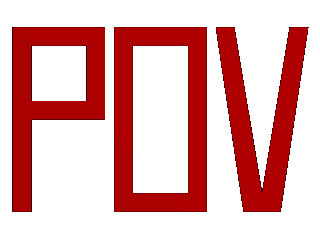 |
|
The word "POV" made with one polygon statement. |
2.3.3 Other Shapes
2.3.3.1 Blob Object
Blobs are described as spheres and cylinders covered with goo which stretches to smoothly join them (see section Blob).
Ideal for modeling atoms and molecules, blobs are also powerful tools for creating many smooth flowing organic shapes.
A slightly more mathematical way of describing a blob would be to say that it is one object made up of two or more component pieces. Each piece is really an invisible field of force which starts out at a particular strength and falls off smoothly to zero at a given radius. Where ever these components overlap in space, their field strength gets added together (and yes, we can have negative strength which gets subtracted out of the total as well). We could have just one component in a blob, but except for seeing what it looks like there is little point, since the real beauty of blobs is the way the components interact with one another.
Let us take a simple example blob to start. Now, in fact there are a couple different types of components but we will look at them a little later. For the sake of a simple first example, let us just talk about spherical components. Here is a sample POV-Ray code showing a basic camera, light, and a simple two component blob:
#include "colors.inc"
background{White}
camera {
angle 15
location <0,2,-10>
look_at <0,0,0>
}
light_source { <10, 20, -10> color White }
blob {
threshold .65
sphere { <.5,0,0>, .8, 1 pigment {Blue} }
sphere { <-.5,0,0>,.8, 1 pigment {Pink} }
finish { phong 1 }
}
| 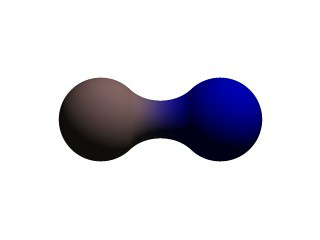 |
|
A simple, two-part blob. |
The threshold is simply the overall strength value at which the blob becomes visible. Any points within the blob where the strength matches the threshold exactly form the surface of the blob shape. Those less than the threshold are outside and those greater than are inside the blob.
We note that the spherical component looks a lot like a simple sphere object. We have the sphere keyword, the vector representing the location of the center of the sphere and the float representing the radius of the sphere. But what is that last float value? That is the individual strength of that component. In a spherical component, that is how strong the component's field is at the center of the sphere. It will fall off in a linear progression until it reaches exactly zero at the radius of the sphere.
Before we render this test image, we note that we have given each component a different pigment. POV-Ray allows blob components to be given separate textures. We have done this here to make it clearer which parts of the blob are which. We can also texture the whole blob as one, like the finish statement at the end, which applies to all components since it appears at the end, outside of all the components. We render the scene and get a basic kissing spheres type blob.
The image we see shows the spheres on either side, but they are smoothly joined by that bridge section in the center. This bridge represents where the two fields overlap, and therefore stay above the threshold for longer than elsewhere in the blob. If that is not totally clear, we add the following two objects to our scene and re-render. We note that these are meant to be entered as separate sphere objects, not more components in the blob.
sphere { <.5,0,0>, .8
pigment { Yellow transmit .75 }
}
sphere { <-.5,0,0>, .8
pigment { Green transmit .75 }
}
| 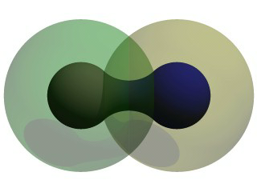 |
|
The spherical components made visible. |
Now the secrets of the kissing spheres are laid bare. These semi-transparent spheres show where the components of the blob actually are. If we have not worked with blobs before, we might be surprised to see that the spheres we just added extend way farther out than the spheres that actually show up on the blobs. That of course is because our spheres have been assigned a starting strength of one, which gradually fades to zero as we move away from the sphere's center. When the strength drops below the threshold (in this case 0.65) the rest of the sphere becomes part of the outside of the blob and therefore is not visible.
See the part where the two transparent spheres overlap? We note that it exactly corresponds to the bridge between the two spheres. That is the region where the two components are both contributing to the overall strength of the blob at that point. That is why the bridge appears: that region has a high enough strength to stay over the threshold, due to the fact that the combined strength of two spherical components is overlapping there.
2.3.3.1.1 Component Types and Other New Features
The shape shown so far is interesting, but limited. POV-Ray has a few extra tricks that extend its range of usefulness however. For example, as we have seen, we can assign individual textures to blob components, we can also apply individual transformations (translate, rotate and scale) to stretch, twist, and squash pieces of the blob as we require. And perhaps most interestingly, the blob code has been extended to allow cylindrical components.
Before we move on to cylinders, it should perhaps be mentioned that the old style of components used in previous versions of POV-Ray still work. Back then, all components were spheres, so it was not necessary to say sphere or cylinder. An old style component had the form:
component Strength, Radius, <Center>
This has the same effect as a spherical component, just as we already saw above. This is only useful for backwards compatibility. If we already have POV-Ray files with blobs from earlier versions, this is when we would need to recognize these components. We note that the old style components did not put braces around the strength, radius and center, and of course, we cannot independently transform or texture them. Therefore if we are modifying an older work into a new version, it may arguably be of benefit to convert old style components into spherical components anyway.
Now for something new and different: cylindrical components. It could be argued that all we ever needed to do to make a roughly cylindrical portion of a blob was string a line of spherical components together along a straight line. Which is fine, if we like having extra to type, and also assuming that the cylinder was oriented along an axis. If not, we would have to work out the mathematical position of each component to keep it is a straight line. But no more! Cylindrical components have arrived.
We replace the blob in our last example with the following and re-render. We can get rid of the transparent spheres too, by the way.
blob {
threshold .65
cylinder { <-.75,-.75,0>, <.75,.75,0>, .5, 1 }
pigment { Blue }
finish { phong 1 }
}
We only have one component so that we can see the basic shape of the cylindrical component. It is not quite a true cylinder - more of a sausage shape, being a cylinder capped by two hemispheres. We think of it as if it were an array of spherical components all closely strung along a straight line.
As for the component declaration itself: simple, logical, exactly as we would expect it to look (assuming we have been awake so far): it looks pretty much like the declaration of a cylinder object, with vectors specifying the two endpoints and a float giving the radius of the cylinder. The last float, of course, is the strength of the component. Just as with spherical components, the strength will determine the nature and degree of this component's interaction with its fellow components. In fact, next let us give this fellow something to interact with, shall we?
2.3.3.1.2 Complex Blob Constructs and Negative Strength
Beginning a new POV-Ray file, we enter this somewhat more complex example:
#include "colors.inc"
background{White}
camera {
angle 20
location<0,2,-10>
look_at<0,0,0>
}
light_source { <10, 20, -10> color White }
blob {
threshold .65
sphere{<-.23,-.32,0>,.43, 1 scale <1.95,1.05,.8>} //palm
sphere{<+.12,-.41,0>,.43, 1 scale <1.95,1.075,.8>} //palm
sphere{<-.23,-.63,0>, .45, .75 scale <1.78, 1.3,1>} //midhand
sphere{<+.19,-.63,0>, .45, .75 scale <1.78, 1.3,1>} //midhand
sphere{<-.22,-.73,0>, .45, .85 scale <1.4, 1.25,1>} //heel
sphere{<+.19,-.73,0>, .45, .85 scale <1.4, 1.25,1>} //heel
cylinder{<-.65,-.28,0>, <-.65,.28,-.05>, .26, 1} //lower pinky
cylinder{<-.65,.28,-.05>, <-.65, .68,-.2>, .26, 1} //upper pinky
cylinder{<-.3,-.28,0>, <-.3,.44,-.05>, .26, 1} //lower ring
cylinder{<-.3,.44,-.05>, <-.3, .9,-.2>, .26, 1} //upper ring
cylinder{<.05,-.28,0>, <.05, .49,-.05>, .26, 1} //lower middle
cylinder{<.05,.49,-.05>, <.05, .95,-.2>, .26, 1} //upper middle
cylinder{<.4,-.4,0>, <.4, .512, -.05>, .26, 1} //lower index
cylinder{<.4,.512,-.05>, <.4, .85, -.2>, .26, 1} //upper index
cylinder{<.41, -.95,0>, <.85, -.68, -.05>, .25, 1} //lower thumb
cylinder{<.85,-.68,-.05>, <1.2, -.4, -.2>, .25, 1} //upper thumb
pigment{ Flesh }
}
|
A hand made with blobs. |
As we can guess from the comments, we are building a hand here. After we render this image, we can see there are a few problems with it. The palm and heel of the hand would look more realistic if we used a couple dozen smaller components rather than the half dozen larger ones we have used, and each finger should have three segments instead of two, but for the sake of a simplified demonstration, we can overlook these points. But there is one thing we really need to address here: This poor fellow appears to have horrible painful swelling of the joints!
A review of what we know of blobs will quickly reveal what went wrong. The joints are places where the blob components overlap, therefore the combined strength of both components at that point causes the surface to extend further out, since it stays over the threshold longer. To fix this, what we need are components corresponding to the overlap region which have a negative strength to counteract part of the combined field strength. We add the following components to our blob.
sphere{<-.65,.28,-.05>, .26, -1} //counteract pinky knucklebulge
sphere{<-.65,-.28,0>, .26, -1} //counteract pinky palm bulge
sphere{<-.3,.44,-.05>, .26, -1} //counteract ring knuckle bulge
sphere{<-.3,-.28,0>, .26, -1} //counteract ring palm bulge
sphere{<.05,.49,-.05>, .26, -1} //counteract middle knuckle bulge
sphere{<.05,-.28,0>, .26, -1} //counteract middle palm bulge
sphere{<.4,.512,-.05>, .26, -1} //counteract index knuckle bulge
sphere{<.4,-.4,0>, .26, -1} //counteract index palm bulge
sphere{<.85,-.68,-.05>, .25, -1} //counteract thumb knuckle bulge
sphere{<.41,-.7,0>, .25, -.89} //counteract thumb heel bulge
| 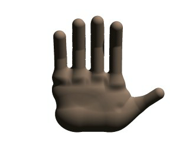 |
|
The hand without the swollen joints. |
Much better! The negative strength of the spherical components counteracts approximately half of the field strength at the points where to components overlap, so the ugly, unrealistic (and painful looking) bulging is cut out making our hand considerably improved. While we could probably make a yet more realistic hand with a couple dozen additional components, what we get this time is a considerable improvement. Any by now, we have enough basic knowledge of blob mechanics to make a wide array of smooth, flowing organic shapes!
2.3.3.2 Height Field Object
A height_field is an object that has a surface that is
determined by the color value or palette index number of an image designed
for that purpose. With height fields, realistic mountains and other types of
terrain can easily be made. First, we need an image from which to create the
height field. It just so happens that POV-Ray is ideal for creating such an
image.
We make a new file called image.pov and edit it to contain the
following:
#include "colors.inc"
global_settings {
assumed_gamma 2.2
hf_gray_16
}
The hf_gray_16 keyword causes the output to be in a special 16 bit grayscale that is perfect for generating height fields. The normal 8 bit output will lead to less smooth surfaces.
Now we create a camera positioned so that it points directly down the z-axis at the origin.
camera {
location <0, 0, -10>
look_at 0
}
We then create a plane positioned like a wall at z=0. This plane will completely fill the screen. It will be colored with white and gray wrinkles.
plane { z, 10
pigment {
wrinkles
color_map {
[0 0.3*White]
[1 White]
}
}
}
Finally, create a light source.
light_source { <0, 20, -100> color White }
We render this scene at 640x480 +A0.1 +FT.
We will get an image that will produce an excellent height field. We create a
new file called hfdemo.pov and edit it as follows:
Note: Unless you specify +FT as above, you will get a PNG file, the default cross-platform output file type. In this case you will need to use png instead of tga in the height_field statement below.
#include "colors.inc"
We add a camera that is two units above the origin and ten units back ...
camera{
location <0, 2, -10>
look_at 0
angle 30
}
... and a light source.
light_source{ <1000,1000,-1000> White }
Now we add the height field. In the following syntax, a Targa image file is specified, the height field is smoothed, it is given a simple white pigment, it is translated to center it around the origin and it is scaled so that it resembles mountains and fills the screen.
height_field {
tga "image.tga"
smooth
pigment { White }
translate <-.5, -.5, -.5>
scale <17, 1.75, 17>
}
We save the file and render it at 320x240 -A. Later, when we
are satisfied that the height field is the way we want it, we render it at a
higher resolution with anti-aliasing.
| 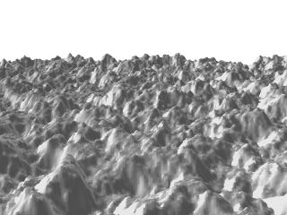 |
|
A height field created completely with POV-Ray. |
Wow! The Himalayas have come to our computer screen!
2.3.3.3 Isosurface Object
Isosurfaces are shapes described by mathematical functions.
In contrast to the other mathematically based shapes in POV-Ray, isosurfaces are approximated during rendering and therefore they are sometimes more difficult to handle. However, they offer many interesting possibilities, like real deformations and surface displacements
Some knowledge about mathematical functions and geometry is useful, but not necessarily required to work with isosurfaces.
2.3.3.3.1 Simple functions
Let's begin with something simple. In this first series of images, let's explore the user defined function shown as function { x } that we see in the code example below. It produces the first image on the left, a simple box. The container, which is a requirement for the isosurface object, is represented by the box object and the contained_by keyword in the isosurface definition.
isosurface {
function { x }
contained_by { box { -2, 2 } }
}
You should have also noticed that in the image on the left, only half the box was produced, that's because the threshold keyword was omitted, so the default value 0 was used to evaluate the x-coordinate.
In this next code example threshold 1 was added to produce the center image.
isosurface {
function { x }
threshold 1
contained_by { box { -2, 2 } }
}
It is also possible to remove the visible surfaces of the container by adding the open keyword to the isosurface definition.
For the final image on the right, the following code example was used. Notice that the omission of the threshold keyword causes the x-coordinate to be again evaluated to zero.
isosurface {
function { x }
open
contained_by { box { -2, 2 } }
}
| 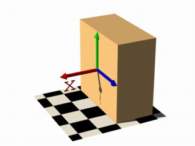 | 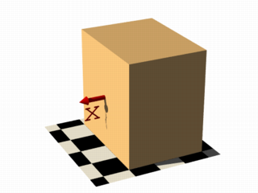 | 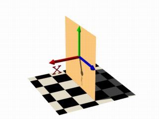 |
|
function { x } |
function { x } with threshold 1 |
function { x } with open |
Hint: The checkered ground plane is scaled to one unit squares.
For the last series of images in this section, let's try something different. These next two code examples were used to show the results of changing the user defined function to function { x+y } and function { x+y+z } respectively. They describe planes going through the origin, the function just describes the normal vector of the plane.
isosurface {
function { x+y }
max_gradient 4
contained_by { box { -2, 2 } }
}
Note: To properly render these examples max_gradient 4 was added to the isosurface definition, and will be explained later.
isosurface {
function { x+y+z }
max_gradient 4
contained_by { box { -2, 2 } }
}
| 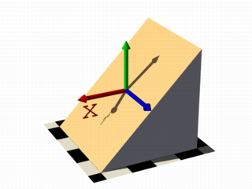 | 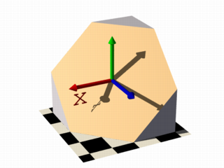 |
|
plane function { x+y } |
plane function { x+y+z } |
Note: When appropriate, to better visualize the difference between the isosurface and the container object, the images in this tutorial have been color coded.
2.3.3.3.2 Several surfaces
Now that you're starting to become familiar with isosurface syntax, there really isn't any need to show a code example for each and every image. You can always look back at the earlier examples when needed. The image captions will most often contain additional keyword hints when appropriate.
Note: The user defined function portion will always use this color coded format: function { x+y+z }
For the first image on the left, these two functions lead to identical results: function { abs(x)-1 } and function { sqrt(x*x)-1 } because both of these formulas have the same solution where the function value is 0, specifically x=-1 and x=1 in this example.
You can easily mix any of these elements in different combinations, but the results always produce planar surfaces. The last two images in this series used function { abs(x)-1+y } and function { abs(x)+abs(y)+abs(z)-2 } respectively.
| 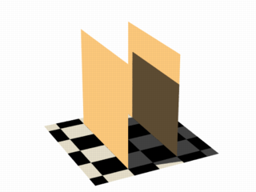 | 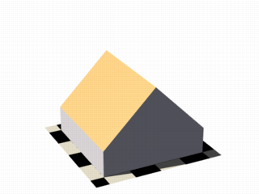 | 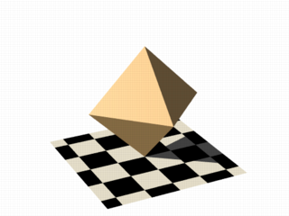 |
|
identical results with open |
linear functions x & y axis |
linear functions x, y & z axis |
2.3.3.3.3 Non-linear functions

|
Curved surfaces of many different kinds can be achieved with non-linear
functions. A square function creates the parabolic shape: |
|
a parabolic shape |
|
If you describe a circle in 2 dimensions with a constant in the 3rd dimension you get a cylinder: |
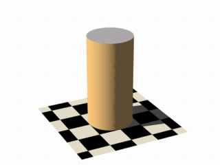 |
|
the cylinder shape |
| 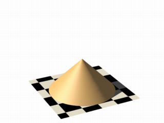 |
It's easy to change a cylinder into a cone, we just need
to add a linear component in y-direction: |
|
|
the cone shape |
|
No worries, creating a sphere is easy too. In this example |
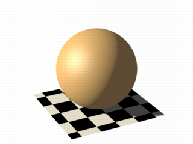 |
|
the sphere shape |
2.3.3.3.4 Specifying functions
Until now, we have seen, the functions used to define the isosurface were literally written in the function {...} block:
#declare Threshold = 1;
isosurface {
function {pow(x,2) + pow(y,2) + pow(z,2)}
threshold Threshold
...
}
Let's expand on that concept, and add some flexibility. Remember that user defined functions (like equations), all float expressions and operators which are legal in POV-Ray can be used, and that functions should be declared first, and then used in the isosurface. See the section user defined function for more information.
This next example takes the above equation, and rewrites it as a user defined function. By default a function that takes three parameters (x,y,z) does not require you to explicitly specify the parameter names when declaring it, however when using the identifier, the parameters must be specified.
#declare Threshold = 1;
#declare Sphere = function {pow(x,2) + pow(y,2) + pow(z,2)};
isosurface {
function { Sphere(x,y,z) }
threshold Threshold
...
}
However, if you need more or less than three parameters when declaring a function, you will also have to explicitly specify the parameter names.
#declare Sphere = function (x,y,z,Radius) {pow(x,2) + pow(y,2) + pow(z,2) - pow(Radius,2)};
isosurface {
function { Sphere(x,y,z,1) }
...
}
2.3.3.3.5 Internal functions
There are a lot of internal functions available in POV-Ray. For example a sphere could also be generated with function { f_sphere(x, y, z, 2) }, for these and other functions, see the functions.inc include file. Most of them are more complicated and it is usually faster to use them instead of a hand coded equivalent.
See the complete list for details.
The following makes a torus just like POV-Ray's torus object:
#include "functions.inc"
isosurface {
function { f_torus(x, y, z, 1.6, 0.4) }
contained_by { box { -2, 2 } }
}
| 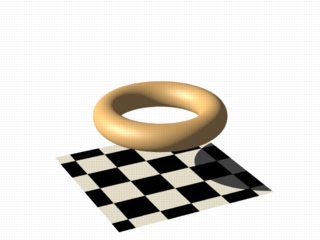 |
The 4th and 5th parameters are the major and minor radius, just like the corresponding values in the The parameters x, y and z are required, because it is a declared function. You can also declare functions yourself like it is explained in the reference section. |
|
the torus function |
2.3.3.3.6 Combining isosurface functions
We can also simulate some Constructive Solid Geometry with isosurface functions. If you do not know about CSG we suggest you have a look at What is CSG? or the corresponding part of the reference section first.
For this next group of images, consider the two functions for a cylinder and a rotated box:
#declare fn_A = function { sqrt(pow(y,2) + pow(z,2)) - 0.8 }
#declare fn_B = function { abs(x)+abs(y)-1 }
- If we combine them the following way, we get a merge:
function { min(fn_A(x, y, z), fn_B(x, y, z)) } - An intersection can be obtained by using
max()instead ofmin():
function { max(fn_A(x, y, z), fn_B(x, y, z)) } - A difference is possible, by adding a minus (-) before the second function:
function { max(fn_A(x, y, z), -fn_B(x, y, z)) }
| 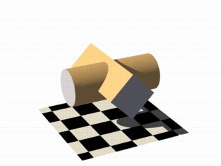 | 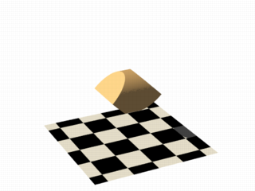 |

|
|
merge example |
intersection example |
difference example |
Apart from basic CSG you can also obtain smooth transits between the different surfaces, for instance the blob object:
#declare Blob_Threshold=0.01;
isosurface {
function {
(1+Blob_Threshold)
-pow(Blob_Threshold, fn_A(x,y,z))
-pow(Blob_Threshold, fn_B(x,y,z))
}
max_gradient 4
contained_by { box { -2, 2 } }
}
| 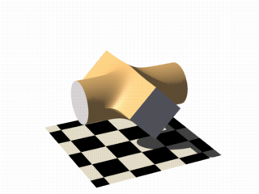 |
The
function{fn_A(x,y,z) + pow(Blob_Threshold,(fn_B(x,y,z) + Strength))}
|
|
smooth transitions using blob |
2.3.3.3.7 Noise and pigment functions
Some of the internal functions have a random or noise-like structure
Together with the pigment functions they are one of the most powerful tools for designing isosurfaces. We can add real surface displacement to the objects rather than only normal perturbation known from the normal statement.
The relevant internal functions are:
f_noise3d(x,y,z)
uses the noise generator specified inglobal_settingsand generates structures like the bozo pattern.f_noise_generator(x, y, z, noise_generator)
generates noise with a specified noise generator.f_ridged_mf(x, y, z, H, Lacunarity, Octaves, Offset, Gain, noise_generator)
generates a ridged multifractal pattern.f_ridge(x, y, z, Lambda, Octaves, Omega, Offset, Ridge, noise_generator)
generates another noise with ridges.f_hetero_mf(x, y, z, H, Lacunarity, Octaves, Offset, T, noise_generator)
generates heterogenic multifractal noise.
|
Using this simple noise3d function results in the image on the right. The value
|
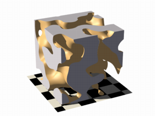 |
|
simple noise3d function |
|
In these next two images the noise function was added to a plane function. The x-parameter was set to 0 so the noise function is constant in x-direction. This way we achieve the typical heightfield structure. |
| 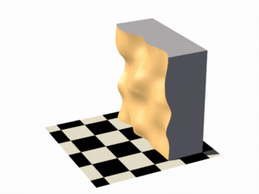 |
With this and the other functions you can generate objects similar to heightfields, having the advantage that a high resolution can be achieved without high memory requirements:
|
|
a noise3d heightfield |
|
The noise function can of course also be subtracted which results in an inverted version:
|
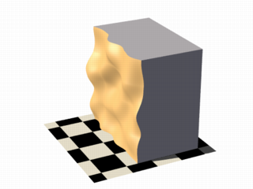 |
|
a noise3d heightfield - inverted |

|
Of course we can also add noise to any other function. If the noise function is very strong this can result in several separated surfaces.
|
|
noise3d on a sphere |
|
This is a noise function applied to a sphere surface, we can influence the intensity of the noise by multiplying it with a factor and change the scale by multiplying the coordinate parameters:
|
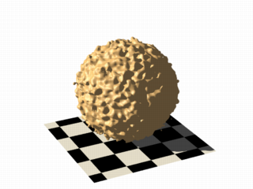 |
|
noise3d on a sphere - scaled |
As alternative to noise functions we can also use any pigment in a function:
#declare fn_Pigm=function {
pigment {
agate
color_map {
[0 color rgb 0]
[1 color rgb 1]
}
}
}
This is a vector function, it returns a color vector for use in isosurface functions. They must be pre-declared first. When using the identifier, you have to specify which component of the color vector should be used.
To do this, the dot notation is used. Refer to the above example: fn_Pigm(x,y,z).red
A color vector has five components, their supported dot types to access these components are:
fn_Pigm( ).x|fn_Pigm( ).u|fn_Pigm( ).red
to get the red value of the color vectorfn_Pigm( ).y|fn_Pigm( ).v|fn_Pigm( ).green
to get the green value of the color vectorfn_Pigm( ).z|fn_Pigm( ).blue
to get the blue value of the color vectorfn_Pigm( ).filter|fn_Pigm( ).f
to get the filter value of the color vectorfn_Pigm( ).transmit|fn_Pigm( ).t
to get the transmit value of the color vector
And two special purpose operators, their supported dot types to access these operators are:
Note: The .hf operator is experimental and will generate a warning.
fn_Pigm( ).grayto get the gray value of the color vector
gray value = Red*29.7% + Green*58.9% + Blue*11.4%fn_Pigm( ).hfto get the height_field value of the color vector
hf value = (Red + Green/255)*0.996093
| 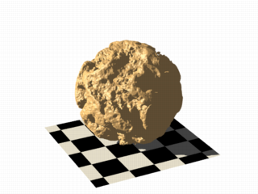 |
There are quite a lot of things possible with pigment functions. However, it should be noted that, some functions can cause longer render times:
|
|
noise using a pigment function |
2.3.3.3.8 Conditional directives and loops
Conditional directives are allowed in functions:
#declare Rough = yes;
#include "functions.inc"
isosurface {
function { y #if(Rough=1)-f_noise3d(x/0.5,y/0.3,z/0.4)*0.8 #end }
...
}
Loops can also be used in functions:
#include "functions.inc"
#declare Thr = 1/1000;
#declare Ang = radians(45);
#declare Offset = 1.5;
#declare Scale = 1.2;
#declare TrSph = function { f_sphere(x-Offset,y,z,0.7*Scale) }
function {
(1-Thr)
#declare A = 0;
#while (A<8)
-pow(Thr, TrSph(x*cos(A*Ang) + y*sin(A*Ang),
y*cos(A*Ang) -x*sin(A*Ang), z) )
#declare A=A+1;
#end
}
Note: The loops and conditionals are evaluated at parse time, not at render time.
2.3.3.3.9 Transformations on functions
Transforming an isosurface object is done like transforming any POV-Ray object. Simply use the object modifiers, scale, translate, and rotate. However, when you want to transform functions within the contained_by object, you have to substitute parameters in the functions.
The results seem inverted to what you would normally expect, here's why:
Remember the sphere function we created earlier in this tutorial: Sphere(x,y,z)
We know it sits at the origin because x=0. If we want to translate it 2 units to the right to x=2 we need to write the second equation in the same form: x-2=0. Now that both equations equal zero, we can replace the parameter x with x-2, call our function as: Sphere(x-2,y,z) and it's translated two units to the right.
Let's look at how to scale our test sphere by 0.5 in the y direction. Given the default value of y=1 one unit we'd want y=0.5. To do this we need to have the equation in the same form as the first one, so we'll multiply both sides by two: y*2 = 0.5*2 which gives y*2=1.
Now we can replace the y parameter in our sphere: Sphere(x,y*2,z). This scales the y-size of the sphere by half.
Here is an overview of some useful substitutions, we'll be using a pseudo-object designated as P(x,y,z) in the following examples:
Scale:
To scale x replace x with x/scale:
P(x/2,y,z)
Scale Infinitely:
To scale y infinitely replace y with 0:
P(x,0,z)
Translate:
To translate z replace z with z - translation:
P(x,y,z-3)
Shear:
To shear in xy-plane replace x with x + y*tan(radians(Angle)):
P(x+y*tan(radians(Angle)),y,z)
Rotate:
Note: These rotation substitutions work like normal POV-rotations, they already compensate for the inverse behavior.
To rotate around the X-axis:
replace y with z*sin(radians(Angle)) + y*cos(radians(Angle))
replace z with z*cos(radians(Angle)) - y*sin(radians(Angle))
To rotate around the Y-axis:
replace x with x*cos(radians(Angle)) - z*sin(radians(Angle))
replace z with x*sin(radians(Angle)) + z*cos(radians(Angle))
To rotate around the Z-axis:
replace x with x*cos(radians(Angle)) + y*sin(radians(Angle))
replace y with -x*sin(radians(Angle)) + y*cos(radians(Angle))
Flip:
To flip X - Y:
replace x with y AND replace y with -x
To flip Y - Z:
replace y with z AND replace z with -y
To flip X - Z:
replace x with -z AND replace z with x
Twist:
To twist N turns/unit around the x axis:
replace y with z*sin(x*2*pi*N) + y*cos(x*2*pi*N)
replace z with z*cos(x*2*pi*N) - y*sin(x*2*pi*N)
2.3.3.3.10 Improving Isosurface Speed
To optimize the approximation of the isosurface and to get maximum rendering speed it is important to adapt certain values:
accuracy:
The accuracy value influences how accurate the surface geometry is calculated. Lower values lead to a more precise, but slower result. The default value of 0.001 is fairly low. We used this value in all the previous samples, but often you can raise this quite a lot and thereby make things faster.
max_gradient:
For finding the actual surface it is important for POV-Ray to know the maximum gradient of the function, meaning how fast the function value changes. We can specify a value with the max_gradient keyword. Lower max_gradient values lead to faster rendering, but if the specified value is below the actual maximum gradient of the function, there can be holes or other artefact's in the surface.
For the same reason functions with an infinite gradient should not be used. This applies for pigment functions with brick or checker patterns for example. You should also be careful when using select() in isosurface functions because of this.
If the real maximum gradient differs too much from the specified value POV-Ray issues a warning together with the found maximum gradient. It is usually sufficient to use this number for the max_gradient parameter to get fast and correct results.
POV-Ray can also dynamically change the max_gradient when you specify evaluate with 3 parameters in the isosurface definition. Concerning the details on this and other things see the evaluate keyword in the reference section.
contained_by:
Make sure your contained_by object fits as tightly as possible. An oversized container can sky-rocket the render time. When the container has a lot of empty space around the actual isosurface, POV-Ray has to do a lot of superfluous sampling: especially with complex functions this can become very time consuming. On top of this, the max_gradient needed to get a proper surface will also increase rapidly, almost proportional to the oversize! You could use a transparent copy of the container (using exactly the same transformations) to check how it fits. Getting the min_extent and max_extent of the isosurface is not useful because it only gives the extent of the container and not of the actual isosurface.
2.3.3.4 Poly Object
The polynomial object (and its shortcut versions: cubic, quartic and quadric)
of POV-Ray is one of the most complex and mathematical primitives of the program. One could think that it is seldom
used and more or less obsolete, but we have to remember that for example the torus primitive is just a shortcut for the equivalent quartic, which is just a shortcut for the equivalent poly object. Polys are, however, seldom used in scenes due to the fact that they are so difficult to define and it is far from trivial to get the desired shape with just a polynomial equation. It is mostly used by the most mathematically oriented POV-Ray users.
This tutorial explains the process of making a polynomial object in POV-Ray.
Note: Since version 3.5, POV-Ray includes the new isosurface object
which makes the polynomial object more or less obsolete. The isosurface is more versatile (you can specify any mathematical function, not
just polynomials) and easier to use. You can write the function as is, without needing to put values in a gigantic vector. Isosurfaces also often (although not always) render considerably faster than equivalent polys.
However, the most mathematically oriented still like polys because isosurfaces are calculated just by approximating the right value, while the poly is calculated in a mathematically exact way. Usually isosurfaces are more than good enough for most applications, though.
Note: A maximum of 35th degree polynomial can be represented with the poly object. If a higher degree polynomial or other non-polynomial function has to be represented, then it is necessary to use the isosurface object.
2.3.3.4.1 Creating the polynomial function
The first step is to create the polynomial function to be represented. You will need some (high-school level) mathematical knowledge for this.
1) Let's start with an easy example, a sphere:
The sphere function is:
| 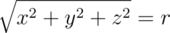 |
|
sphere function |
Now we have to convert this to polynomial form, we will need a polynomial of the 2nd degree to represent this:
|
sphere polynomial |
2) A more elaborated example:
Let's take the function:
| 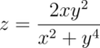 |
|
function |
Converting this to polynomial form we get:
| 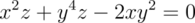 |
|
polynomial |
Although the highest power is 4 we will need a 5th order polynomial to represent this function (because we cannot represent y4z with a 4th order polynomial).
3) And since we talked about the torus, let's also take it as an example.
A torus can be represented with the function:
| 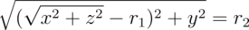 |
|
torus function |
where r1 is the major radius and r2 is the minor radius.
Now, this is tougher to convert to polynomial form, but finally we get:
| 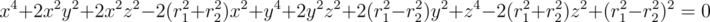 |
|
torus polynomial |
A 4th order polynomial is enough to represent this.
Note: Not every function can be represented in polynomial form. Only functions that use addition (and substraction), multiplication (and division) and scalar powers (including rational powers, eg. the square root) can be represented. Also, the poly primitive supports only polynomials of the 35th degree at max.
Converting a function to polynomial form may be a very laborious task for certain functions. Some mathematical programs are very helpful in this matter.
2.3.3.4.2 Writing the polynomial vector
Now that we have the function in polynomial form, we have to write it in POV-Ray syntax. The syntax is specified in the sections on polynomial and quadric of the reference section. There is also a table in this chapter which we will be using to make the polynomial vector. It is easier to have this table printed on paper.
Note: It is also possible to make a little program with your favorite programming language which will print the poly vector from the polynomial function, but making a program like this is up to you.
1) Let's start with the easy one, ie. the sphere.
Since the sphere can be represented with a polynomial of 2nd degree, we look at the column titled 2nd in the table. We see that it has 10 items, ie. we need a vector of size 10. Each item of the vector will be the factor of the term listed in the table.
The polynomial was:
|
sphere polynomial function |
Writing the poly in this way we get:
#declare Radius=1;
poly
{ 2,
<1,0,0,0,1,
0,0,1,0,-Radius*Radius>
}
Put each group of factors (separated with lines in the table) in their own lines.
In the table we see that the first item is the factor for x2, which is 1 in the function. The next item is xy. Since it is not in the function, its factor is 0. Likewise the next item, which is xz. And so on. The last item is the scalar term, which is in this case -r2.
If we make a proper scene and render it, we get:
camera { location y*4-z*5 look_at 0 angle 35 }
light_source { <100,200,-50> 1 }
background { rgb <0,.25,.5> }
#declare Radius=1;
poly
{ 2,
<1,0,0,0,1,
0,0,1,0,-Radius*Radius>
pigment { rgb <1,.7,.3> } finish { specular .5 }
}
|
sphere polynomial image |
Note: There is a shortcut for 2nd degree polynomials: The quadric primitive. Using a shortcut version, whenever possible, can lead to faster
renderings. We can write the sphere code described above in the following way:
quadric
{ <1,1,1>, <0,0,0>, <0,0,0>, -Radius*Radius
pigment { rgb <1,.7,.3> } finish { specular .5 }
}
2) Now lets try the second one. We do it similarly, but this time we need to look at the column titled 5th in the table.
The polynomial was:
|
5th order polynomial function |
Writing the poly primitive we get:
poly
{ 5,
<0,0,0,0,0,
0,0,0,0,0,
0,0,0,0,0,
0,0,0,1,0,
0,0,0,0,0,
-2,0,0,0,0,
0,0,0,0,0,
0,1,0,0,0,
0,0,0,0,0,
0,0,0,0,0,
0,0,0,0,0,0>
}
With the proper scene we get:
camera { location <8,20,-10>*.7 look_at x*.01 angle 35 }
light_source { <100,200,20> 1 }
background { rgb <0,.25,.5> }
poly
{ 5,
<0,0,0,0,0,
0,0,0,0,0,
0,0,0,0,0,
0,0,0,1,0,
0,0,0,0,0,
-2,0,0,0,0,
0,0,0,0,0,
0,1,0,0,0,
0,0,0,0,0,
0,0,0,0,0,
0,0,0,0,0,0>
clipped_by { box { <-4,-4,-1><4,4,1> } }
bounded_by { clipped_by }
pigment { rgb <1,.7,.3> } finish { specular .5 }
rotate <0,90,-90>
}
|
5th order polynomial image |
3) And finally the torus:
The polynomial was:
|
torus polynomial function |
And we get the proper 4th degree poly primitive:
camera { location y*4-z*5 look_at 0 angle 35 }
light_source { <100,200,-50> 1 }
background { rgb <0,.25,.5> }
#declare r1=1;
#declare r2=.5;
poly
{ 4,
<1,0,0,0,2,
0,0,2,0,-2*(r1*r1+r2*r2),
0,0,0,0,0,
0,0,0,0,0,
1,0,0,2,0,
2*(r1*r1-r2*r2),0,0,0,0,
1,0,-2*(r1*r1+r2*r2),0,pow(r1,4)+pow(r2,4)-2*r1*r1*r2*r2>
pigment { rgb <1,.7,.3> } finish { specular .5 }
}
When rendered we get:
|
torus polynomial image |
There is a shortcut for 4th order polynomials: The quartic primitive. We can write the torus like this:
quartic
{ <1,0,0,0,2,
0,0,2,0,-2*(r1*r1+r2*r2),
0,0,0,0,0,
0,0,0,0,0,
1,0,0,2,0,
2*(r1*r1-r2*r2),0,0,0,0,
1,0,-2*(r1*r1+r2*r2),0,pow(r1,4)+pow(r2,4)-2*r1*r1*r2*r2>
pigment { rgb <1,.7,.3> } finish { specular .5 }
}
2.3.3.4.3 Polynomial made easy
Since consulting the table in the section Polynomial or writing a program to get the right poly vector can be a bit cumbersome, especially when the poly vector is not a write-once-only expression and that you want to get it back, so let's examine how those equations would be rewritten using the simplified syntax.
You should refer to the images in the previous section, as these examples produce exactly the same results.
1) The sphere example can be rewritten as:
#declare Radius=1;
polynomial { 2,
xyz(2,0,0):1,
xyz(0,2,0):1,
xyz(0,0,2):1,
xyz(0,0,0):-Radius*Radius
}
2) Let's now see the second one:
polynomial { 5,
xyz(2,0,1):1,
xyz(0,4,1):1,
xyz(1,2,0):-2
}
3) And finally the torus example:
polynomial { 4,
xyz(4,0,0):1,
xyz(2,2,0):2,
xyz(2,0,2):2,
xyz(2,0,0):-2*(r1*r1+r2*r2),
xyz(0,4,0):1,
xyz(0,2,2):2,
xyz(0,2,0):2*(r1*r1-r2*r2),
xyz(0,0,4):1,
xyz(0,0,2):-2*(r1*r1+r2*r2),
xyz(0,0,0):pow((r1*r1-r2*r2),2)
}
2.3.3.5 Superquadric Ellipsoid Object
Sometimes we want to make an object that does not have perfectly sharp
edges like a box does. Then, the superquadric ellipsoid shape made by the
superellipsoid is a useful object. It is described by the simple
syntax:
superellipsoid { <Value_E, Value_N >}
Where Value_E and Value_N are float values greater than
zero and less than or equal to one. Let's make a superellipsoid and
experiment with the values of Value_E and Value_N to see
what kind of shapes we can make. We create a file called
supellps.pov and edit it as follows:
#include "colors.inc"
camera {
location <10, 5, -20>
look_at 0
angle 15
}
background { color rgb <.5, .5, .5> }
light_source { <10, 50, -100> White }
The addition of a gray background makes it a little easier to see our object. We now type:
superellipsoid { <.25, .25>
pigment { Red }
}
We save the file and render it to see the shape. It will look like a box, but the edges will be rounded off. Now let's experiment with different values of Value_E and Value_N. For the next trace, try <1, 0.2>. The shape now looks like a cylinder, but the top edges are rounded. Now try <0.1, 1>. This shape is an odd one! We do not know exactly what to call it, but it is interesting. Finally, let's try <1, 1>. Well, this is more familiar... a sphere!
There are a couple of facts about superellipsoids we should know. First, we should not use a value of 0 for either Value_E nor Value_N. This will cause POV-Ray to incorrectly make a black box instead of our desired shape. Second, very small values of Value_E and Value_N may yield strange results so they should be avoided. Finally, the Sturmian root solver will not work with superellipsoids.
Superellipsoids are finite objects so they respond to auto-bounding and can be used in CSG.
Now let's use the superellipsoid to make something that would be useful in a scene. We will make a tiled floor and place a couple of superellipsoid objects hovering over it. We can start with the file we have already made.
We rename it to tiles.pov and edit it so that it reads as
follows:
#include "colors.inc"
#include "textures.inc"
camera {
location <10, 5, -20>
look_at 0
angle 15
}
background { color rgb <.5, .5, .5> }
light_source{ <10, 50, -100> White }
Note: We have added #include "textures.inc" so
we can use pre-defined textures. Now we want to define the superellipsoid
which will be our tile.
#declare Tile = superellipsoid { <0.5, 0.1>
scale <1, .05, 1>
}
Superellipsoids are roughly 2*2*2 units unless we scale them otherwise. If we wish to lay a bunch of our tiles side by side, they will have to be offset from each other so they do not overlap. We should select an offset value that is slightly more than 2 so that we have some space between the tiles to fill with grout. So we now add this:
#declare Offset = 2.1;
We now want to lay down a row of tiles. Each tile will be offset from the
original by an ever-increasing amount in both the +z and -z directions. We
refer to our offset and multiply by the tile's rank to determine the
position of each tile in the row. We also union these tiles into a single
object called Row like this:
#declare Row = union {
object { Tile }
object { Tile translate z*Offset }
object { Tile translate z*Offset*2 }
object { Tile translate z*Offset*3 }
object { Tile translate z*Offset*4 }
object { Tile translate z*Offset*5 }
object { Tile translate z*Offset*6 }
object { Tile translate z*Offset*7 }
object { Tile translate z*Offset*8 }
object { Tile translate z*Offset*9 }
object { Tile translate z*Offset*10 }
object { Tile translate -z*Offset }
object { Tile translate -z*Offset*2 }
object { Tile translate -z*Offset*3 }
object { Tile translate -z*Offset*4 }
object { Tile translate -z*Offset*5 }
object { Tile translate -z*Offset*6 }
}
This gives us a single row of 17 tiles, more than enough to fill the
screen. Now we must make copies of the Row and translate them,
again by the offset value, in both the +x and -x directions in ever
increasing amounts in the same manner.
object { Row }
object { Row translate x*Offset }
object { Row translate x*Offset*2 }
object { Row translate x*Offset*3 }
object { Row translate x*Offset*4 }
object { Row translate x*Offset*5 }
object { Row translate x*Offset*6 }
object { Row translate x*Offset*7 }
object { Row translate -x*Offset }
object { Row translate -x*Offset*2 }
object { Row translate -x*Offset*3 }
object { Row translate -x*Offset*4 }
object { Row translate -x*Offset*5 }
object { Row translate -x*Offset*6 }
object { Row translate -x*Offset*7 }
Finally, our tiles are complete. But we need a texture for them. To do
this we union all of the Rows together and apply a White
Marble pigment and a somewhat shiny reflective surface to it:
union{
object { Row }
object { Row translate x*Offset }
object { Row translate x*Offset*2 }
object { Row translate x*Offset*3 }
object { Row translate x*Offset*4 }
object { Row translate x*Offset*5 }
object { Row translate x*Offset*6 }
object { Row translate x*Offset*7 }
object { Row translate -x*Offset }
object { Row translate -x*Offset*2 }
object { Row translate -x*Offset*3 }
object { Row translate -x*Offset*4 }
object { Row translate -x*Offset*5 }
object { Row translate -x*Offset*6 }
object { Row translate -x*Offset*7 }
pigment { White_Marble }
finish { phong 1 phong_size 50 reflection .35 }
}
We now need to add the grout. This can simply be a white plane. We have stepped up the ambient here a little so it looks whiter.
plane {
y, 0 //this is the grout
pigment { color White }
finish { ambient .4 diffuse .7 }
}
To complete our scene, let's add five different superellipsoids, each a different color, so that they hover over our tiles and are reflected in them.
superellipsoid {
<0.1, 1>
pigment { Red }
translate <5, 3, 0>
scale .45
}
superellipsoid {
<1, 0.25>
pigment { Blue }
translate <-5, 3, 0>
scale .45
}
superellipsoid {
<0.2, 0.6>
pigment { Green }
translate <0, 3, 5>
scale .45
}
superellipsoid {
<0.25, 0.25>
pigment { Yellow }
translate <0, 3, -5>
scale .45
}
superellipsoid {
<1, 1>
pigment { Pink }
translate y*3
scale .45
}
|
Some superellipsoids hovering above a tiled floor. |
We trace the scene at 320x200 -A to see the result. If we are
happy with that, we do a final trace at 640x480 +A0.2.
2.3.4 Gamma Handling
In this section, we will explain how to use the gamma handling framework introduced with POV-Ray version 3.7. However, first we may need to introduce the term gamma, and why it needs handling anyway:
Note: In a nutshell, gamma handling is the compensation for non-linearities in the representation of color values.
|
As a raytracing engine, POV-Ray internally needs to represent colors using linear light intensity values to produce physically accurate results. However, the majority of contemporary digital image processing tools and file formats do not. This comes as a surprise to most people, probably because the human visual perception is non-linear as well, as can be demonstrated in the render to the right, generated with POV-Ray using physically realistic settings: |
|
|
gamma handling reference image |
Both front and second row show spheres with pigments increasing from rgb 0.0 to rgb 1.0. When asked which of them increases linearly, with a medium grey at the center, most people will go for the front row without too much hesitation. And in fact the pigment of the front center sphere does correspond to what Photoshop or similar image processing software would normally call 50% grey, but as a matter of fact it reflects only 21.8% as much light as the rightmost one. The sphere truly reflecting 50% as much light sits right behind it.
A corresponding nonlinearity can be found in the traditional internal representation of colors in digital image processing, as implemented in file formats, graphics cards frame buffers, display APIs and so forth. Using one byte per colour component, and black and white represented by (0;0;0) and (255;255;255) respectively, a value of (128;128;128) will typically be used to encode a light intensity of just about 20%. To make matters a bit more complicated, the actual light intensity seen on the computer display may vary from one computer to the next, not only due to a historical lack of standardization in the PC display and graphics hardware market, but also due to factors such as electrical tolerances and even aging of the display. In professional environments, displays are therefore calibrated at regular intervals.
The non-linear relationship between color values and actual light intensity is usually approximated by (or calibrated to match) a power-law function (aka gamma function, hence the technical term gamma), i.e.:
f(x) = x ̂ γ
where x is the internal representation normalized to the range [0...1], f(x) is the actual output light intensity, and γ is a value typically somewhere between 2.0 to 2.4, though in the professional image processing world a value of 1.8 is also common.
Another formula becoming more and more popular is the so-called sRGB transfer function as defined in the sRGB color space standard, which has been adopted as the official standard on the World Wide Web. This function roughly corresponds to a power-law gamma of 2.2. Other standard transfer functions worth mentioning are those defined by the TV broadcasting standards ITU-R BT.709 and ITU-R BT.2020.
2.3.4.1 Setting Up Your Display
Using POV-Ray's gamma handling framework will not make much sense unless your display is set up properly; ideally, this would be done with a colorimeter and professional display calibration software. However, for hobbyists' purposes, less expensive solutions will suffice:
- Your graphics card drivers may come with a wizard to help you adjust your display.
- Various versions of Photoshop shipped with a utility called "Adobe Gamma".
- There are numerous sites on the internet dedicated to getting your display settings straight.
Note: We disagree with the author of the site linked to above, about which display gamma to aim for, and strongly recommend a gamma of 2.2, unless you know exactly what you're doing.
As an additional sanity check of your system display settings (and also of your image viewing software) POV-Ray provides a sample scene custom-tailored to this purpose, to be found at scenes/gamma/gamma_showcase.pov. Render the scene twice as PNG, using the following options:
+w640 +h480 +a0.3 +am1 +fN -d File_Gamma=sRGB Output_File_Name=gamma_showcase.png +w640 +h480 +a0.3 +am1 +fN -d File_Gamma=1.0 Output_File_Name=gamma_showcase_linear.png
At 100% zoom, both images should look identical in your viewing software (if they don't, then by all means get rid of that obsolete software). Moreover, all the spheres should look uniform, like in the introductory image above. It is ok if you notice stripes on the spheres, but the overall brightness and hue should not be perceived as varying between the left and right hemispheres of any single sphere.
If however the image appears like shown below, then your system display gamma is either higher (left) or lower (right) than what your image viewing software expects. Note that in the PC world, most contemporary software will expect the display to either have a gamma of 2.2 or comply with the sRGB transfer function, unless there's a way to tell the software otherwise.
Note: Make sure to set your desktop resolution to match the native resolution of your display, as interpolation might mess up the intended effect. Also, some types of displays exhibit variations of gamma depending on viewing angle and, as a result, also across the display area; in that case, we recommend to adjust your display so that you get the desired gamma at the center of the screen when sitting as you usually do.
|
higher example |
lower example |
Just for the sake of it, here's a render of that showcase scene (note however that due to conversion of the original documentation source to whatever format you are currently reading it in, whether it be PDF, HTML or whatever, the image may have undergone some conversion, and may therefore be unsuited to serve as a good reference):
|
refer to: scenes/gamma/gamma_showcase.pov |
2.3.4.2 Setting Up POV-Ray
Now that you can be sure that your operating system in general and your image viewing software in particular behave well regarding gamma, it is time to set up POV-Ray to do the same.
If you know that your system matches the sRGB standard, or have chosen to go for an approximate display gamma of 2.2, or used a tool that doesn't explicitly mention the gamma it has helped you to set up (in which case it will typically be 2.2 or sRGB as well), you're probably done already, as POV-Ray expects sRGB compliance by default, which is close enough to a display gamma of 2.2 for starters. Otherwise (or if you want an exact display gamma of 2.2) you should edit your master povray.ini to add the following line (e.g. for a display gamma of 1.8):
Display_Gamma=1.8
Instead of a numerical value, you can also specify Display_Gamma=sRGB to explicitly tell POV-Ray that your system is calibrated to match the sRGB standard (which, as already mentioned, is actually the default setting). New in version 3.8, you can also specify Display_Gamma=BT709 or Display_Gamma=BT2020 to explicitly tell POV-Ray that your system is calibrated to match the transfer functions specified in ITU-R BT.709 or BT.2020, respectively, but you shouldn't use these unless you absolutely know what you are doing.
Again, the gamma showcase scene can be used as a sanity check; use the following parameters:
+w640 +h480 +a0.3 +am1 -f +d
Make sure you set the preview to windowed mode to get a 100% zoom. If everything works as expected, the preview window should look just like the PNG files already created, with each sphere again appearing to have a uniform color and brightness. If this is not the case for some mysterious reason, you may need to tweak the Display_Gamma setting accordingly; increase it if the left hemispheres appear too dark, or decrease it if they appear too bright. When you're done testing, update your povray.ini again.
2.3.4.3 Gamma in Output Images
Besides being used internally in most contemporary digital image processing software, non-linear color representations are also used in most conventional image file formats. This is often called gamma pre-correction, in the sense that the original linear light intensity information has already been transformed by a gamma function to compensate for display non-linearity. Unfortunately, due to the large variety of display gamma in the world of computing, the gamma value used for pre-correction traditionally followed no set standard either.
In recent years the situation has changed, partly due to the adoption of the sRGB standard as the official recommendation for the World Wide Web, with major file format specifications following suit, and partly due to the advent of new file formats like PNG designed right from the start for a standardized way of gamma handling. (For such file formats, it is customary to speak of non-linear color representation not as gamma pre-correction, but rather as gamma encoding.) By now, for virtually all contemporary file formats there exists either a clear specification of how to handle gamma, or an official recommendation to adhere to the sRGB standard.
POV-Ray's gamma handling defaults are set to comply with the official file format standards or recommendations, so normally you will not need to worry about gamma handling. However, should the need arise, you can tell POV-Ray to ignore gamma recommendations and pre-correct the output file for a different display gamma, using the File_Gamma INI file option, e.g.:
File_Gamma=1.8
Again, sRGB as well as, New in version 3.8, BT709 or BT2020, are valid values, specifying that POV-Ray should apply the sRGB, ITU-R BT.709 or BT.2020 transfer function, respectively.
Note: Some of the file formats supported by POV-Ray are explicitly specified to never use gamma pre-correction or gamma encoding. For such file types (currently OpenEXR and Radiance HDR), File_Gamma has no effect whatsoever. For certain other file types (currently PNG), File_Gamma does have an effect on the encoding of the image, but not on the general visual appearance.
For output files, POV-Ray handles gamma according to the following rules:
- For OpenEXR and Radiance HDR, which are officially specified to store linear light intensity values, POV-Ray always stores linear values, ignoring the
File_Gammasetting. - For PNG, which explicitly allows different encoding gamma values, POV-Ray will interpret the
File_Gammasetting as the decoding gamma to encode for, and always write corresponding metadata into the header; as a result, the image will always look virtually identical irregardless of theFile_Gammasetting; however, to minimize visible encoding artifacts like color banding, it is strongly recommended to use a setting of around 2.2, orsRGB. IfFile_Gammais not specified, PNG output defaults tosRGB. New in version 3.8, note that a setting ofBT709orBT2020is possible, but cannot be conveyed correctly via PNG metadata and is therefore strongly discouraged for this file format. - New in version 3.8, for Netpbm PPM, which is officially specified to store gamma-encoded values using the ITU-R BT.709 transfer function, POV-Ray adheres to the Netpbm standard by default. However, if the
File_Gammasetting is specified, POV-Ray will interpret it as a display gamma to pre-correct for, to account for the widespread use of competing de-facto standards, most notably the use of linear encoding (corresponding to a setting ofFile_Gamma=1.0) or sRGB gamma pre-correction (corresponding to a setting ofFile_Gamma=sRGB). - For all other file formats, POV-Ray will interpret the
File_Gammasetting as the display gamma to pre-correct for; as a result, the image will look different depending on the value used. It will also look different than the preview if you use a value other than your system's display gamma. IfFile_Gammais not specified, these output file formats default to sRGB pre-correction.
2.3.4.4 Setting Up Your Scene
As stated above, POV-Ray needs to work with linear colors to produce the most physically accurate output. However, if you prefer you can coax POV-Ray to work directly with non-linear color values. This is controlled via the assumed_gamma statement in the scene file's global settings, e.g.:
global_settings { assumed_gamma 1.8 }
This instructs POV-Ray to work with colors pre-corrected for a display gamma of whatever value you specify (in this example obviously a gamma of 1.8). You can also specify srgb instead of a numerical value, instructing POV-Ray to work with colors pre-corrected according to the sRGB standard. New in version 3.8, you can also specify bt709 or bt2020, but both are strongly discouraged.
Note: It is highly recommended to either set assumed_gamma to your system's display gamma for convenience, or set it to 1.0 for maximum realism. Using it for purely artistic purposes is strongly discouraged.
Note: Sometimes you may want to use POV-Ray to generate other data than images in the strict sense, using the output image file as a mere data container, e.g. for height field data, bump maps, transparency maps or the like. In such cases, it is highly recommended to set both assumed_gamma and File_Gamma to 1.0 to avoid unexpected results.
2.3.4.5 Gamma in Literal Colors
By default, POV-Ray will expect each and every color value you enter to match your assumed_gamma, normalized to a range from 0.0 to 1.0. When using assumed_gamma 1.0 for realism, this can make it cumbersome to copy color values from other applications because those values will typically be non-linear representations of the respective colors; some people may also feel more at home with non-linear colors. To mitigate this issue, a special color literal syntax has been introduced to specify color values conforming to the sRGB standard; the syntax is as follows:
color srgb <Rp,Gp,Bp> color srgbf <Rp,Gp,Bp,F> color srgbt <Rp,Gp,Bp,T> color srgbft <Rp,Gp,Bp,F,T>
where Rp, Gp and Bp are pre-corrected color component values in the range from 0.0 to 1.0, while F and T are linear color component values in the same range.
Note: The filter and transmit components are always interpreted as linear values, and the use of this alternative syntax will have no effect on them.
The following is also valid and gives the expected results:color srgb <255,240,0>/255
Note: This alternative syntax for colors does not constitute a new flavor of colors; instead, when encountering such a statement POV-Ray will immediately convert the specified non-linear color values into a linear ones. Any access to the individual components or computations done with the resulting color will therefore access the linear values.
2.3.4.6 Gamma in Input Images
Normally, gamma handling of input image files will work fine without intervention, but in some cases it may fail. To resolve such problems, the default handling can be overridden using the gamma SDL keyword, e.g:
image_map { jpeg "foo.jpg" gamma 1.8 }
Instead of a numerical value, you can also use the srgb keyword to inform POV-Ray that the file conforms to the sRGB standard. New in version 3.8, you can also specify bt709 or bt2020 to inform POV-Ray that the file is gamma-encoded using the ITU-R BT.709 or BT.2020 transfer functions, respectively
Note: Specifying gamma bt709 or gamma bt2020 only affects the transfer function used. Specifically, it does not affect the digital representation of nominal black and white, which remain at 0 and 255 (presuming 8-bit encoding), respectively, as opposed to 16 and 235 for full-fledged ITU-R BT-709 encoding.
For input files in general, the following rules apply:
- When using an image file in an
image_map, POV-Ray will always convert the image data to the scene'sassumed_gamma, according to whatever gamma the file is presumably pre-corrected for; you can override any file-specific presumtions by explicitly specifying thegammayou presume it to be pre-corrected for. - When using an image file in a
height_field,bump_maporimage_pattern, POV-Ray will convert the image data to linear values if you explicitly specify agammafor that particular file; if you don't, no gamma adjustment will be performed (or, in other words, the file will be presued to carry linear data, regardless of file format).
For image_map input files, the following file-specific rules apply:
- For OpenEXR and Radiance HDR, POV-Ray will presume the data to be linear, as per official file format specification.
- For PNG, POV-Ray will presume the image data to be encoded according to file header information (currently sRGB or gAMA chunks); in the absence of such information, POV-Ray will presume sRGB-compliant encoding as per official recommendation.
- For PPM and PGM, POV-Ray will currently presume the image data to match the
assumed_gamma(in other words, no gamma adjustment will be performed by default). New in version 3.8, POV-Ray will presume the image data to comply with the Netpbm specification, i.e. being gamma-encoded using the ITU-R BT.709 transfer function. - For any other file formats, POV-Ray will presume sRGB-compliant encoding, to match either official recommendations or common practice.
Note: If you explicitly specify gamma for a particular file, POV-Ray will ignore any file format specifications, recommendations or meta information, and always presume the file to be pre-corrected for the specified gamma, or encoded for the specified decoding gamma. This applies in all contexts and to all file formats without exception.
2.3.4.7 Gamma in Legacy Scenes
POV-Ray version 3.6 used slightly different rules for its (optional) gamma handling, while yet earlier versions used no gamma correction at all. To provide backward compatibility with legacy scenes, POV-Ray does its best to mimic the behavior of these older versions in the following cases:
- If the scene contains an
assumed_gammastatement, and does not explicitly specify a version of 3.7 or later, gamma handling will follow the 3.6 rules. - If the scene does neither specify an
assumed_gammastatement, nor explicitly specify a version of 3.7 or later, gamma correction will be turned off.
The 3.6 rules differ from standard behaviour with regards to image_map input files as follows:
- For OpenEXR, Radiance HDR and PNG, the behaviour is the same as described above.
- For any other file formats, in "3.6 mode" POV-Ray will currently presume the image data to match the
assumed_gamma(in other words, no gamma adjustment will be performed by default).
As POV-Ray 3.6 did not have a File_Gamma setting, and used Display_Gamma for both purposes, you will have to set File_Gamma to whatever you used to set Display_Gamma to (or leave it undefined if you did not specify Display_Gamma either) in order to get the same output.
Furthermore, backward compatibility with 3.6 for PNG input files is subject to the following restrictions:
- For palette-based PNG files (an uncommon flavor of PNG), backward compatibility is provided only if gamma correction is disabled (i.e.
assumed_gammais not specified). This is due to fixes in the handling of this PNG flavor. - For non-palette-based PNG files, backward compatibility is provided only if gamma correction is enabled (i.e.
assumed_gammais specified). This is due to inconsistencies in POV-Ray 3.6's PNG file handling which would have been prohibitively difficult to reproduce with the architectural changes in POV-Ray 3.7. - For PNG files carrying both an sRGB chunk and a fitting gAMA chunk, results will slightly differ, while for PNG files carrying an sRGB chunk but no gAMA chunk (or a wrong one), backward compatibility is not provided. This is due to POV-Ray 3.6 honoring only gAMA chunks, while POV-Ray 3.7 honors sRGB chunks as well, giving them precedence over gAMA chunks to comply with the official file format specification.
If you experience problems with a PNG input file in a legacy scene, explicitly specify the decoding gamma to be applied for that particular image using the gamma statement may help. When using e.g. assumed gamma 1.8, some values worth trying would be gamma 1, gamma 1/1.8, gamma 2.2/1.8 or gamma 1.8. (With POV-Ray 3.6's PNG file handling having been quite a mess, it is difficult to be more specific.)
2.3.5 Advanced Texture Options
The extremely powerful texturing ability is one thing that really sets POV-Ray apart from other raytracers. So far we have not really tried anything too complex but by now we should be comfortable enough with the program's syntax to try some of the more advanced texture options.
Obviously, we cannot try them all. It would take a tutorial a lot more pages to use every texturing option available in POV-Ray. For this limited tutorial, we will content ourselves to just trying a few of them to give an idea of how textures are created. With a little practice, we will soon be creating beautiful textures of our own.
Note: Early versions of POV-Ray made a distinction between pigment and
normal patterns, i. e. patterns that could be used inside a
normal or pigment statement. Since POV-Ray 3.0 this
restriction was removed so that all patterns listed in section Pattern can be used as a pigment or normal pattern.
2.3.5.1 Pigments
Every surface must have a color. In POV-Ray this color is called a pigment. It does not have to be a single color. It can be a color pattern, a color list or even an image map. Pigments can also be layered one on top of the next so long as the uppermost layers are at least partially transparent so the ones beneath can show through. See also: Using Transparent Pigments and Layered Textures
Let's play around with some of these kinds of pigments.
We create a file called texdemo.pov and edit it as
follows:
#include "colors.inc"
camera {
location <1, 1, -7>
look_at 0
angle 36
}
light_source { <1000, 1000, -1000> White }
plane {
y, -1.5
pigment { checker Green, White }
}
sphere {
<0,0,0>, 1
pigment { Red }
}
Giving this file a quick test render we see that it is a simple red sphere against a green and white checkered plane. We will be using the sphere for our textures.
2.3.5.1.1 Using Color List Pigments
Before we begin we should note that we have already made one kind of
pigment, the color list pigment. In the previous example we have used a
checkered pattern on our plane. There are three other kinds of color list
pigments, brick, hexagon and the
object pattern.
Let's quickly try each of these. First, we change the plane's
pigment as follows:
pigment { hexagon Green, White, Yellow }
Rendering this we see a three-color hexagonal pattern. Note that this pattern requires three colors. Now we change the pigment to...
pigment { brick Gray75, Red rotate -90*x scale .25 }
Looking at the resulting image we see that the plane now has a brick pattern. We note that we had to rotate the pattern to make it appear correctly on the flat plane. This pattern normally is meant to be used on vertical surfaces. We also had to scale the pattern down a bit so we could see it more easily. We can play around with these color list pigments, change the colors, etc. until we get a floor that we like.
2.3.5.1.2 Using Pigment and Patterns
Let's begin texturing our sphere by using a pattern and a color map consisting of three colors. We replace the pigment block with the following.
pigment {
gradient x
color_map {
[0.00 color Red]
[0.33 color Blue]
[0.66 color Yellow]
[1.00 color Red]
}
}
Rendering this we see that the gradient pattern gives us an
interesting pattern of vertical stripes. We change the gradient direction to
y. The stripes are horizontal now. We change the gradient direction to z. The
stripes are now more like concentric rings. This is because the gradient
direction is directly away from the camera. We change the direction back to x
and add the following to the pigment block.
pigment {
gradient x
color_map {
[0.00 color Red]
[0.33 color Blue]
[0.66 color Yellow]
[1.00 color Red]
}
rotate -45*z // <- add this line
}
The vertical bars are now slanted at a 45 degree angle. All patterns can
be rotated, scaled and translated in this manner. Let's now try some
different types of patterns. One at a time, we substitute the following
keywords for gradient x and render to see the result: bozo,
marble, agate, granite,
leopard, spotted and wood
(if we like we can test all patterns listed in section Pattern).
Rendering these we see that each results in a slightly different pattern. But to get really good results each type of pattern requires the use of some pattern modifiers.
2.3.5.1.3 Using Pattern Modifiers
Let's take a look at some pattern modifiers. First, we change the pattern type to bozo. Then we add the following change.
pigment {
bozo
frequency 3 // <- add this line
color_map {
[0.00 color Red]
[0.33 color Blue]
[0.66 color Yellow]
[1.00 color Red]
}
rotate -45*z
}
The frequency modifier determines the number of times the
color map repeats itself per unit of size. This change makes the bozo
pattern we saw earlier have many more bands in it. Now we change
the pattern type to marble. When we rendered this earlier, we
saw a banded pattern similar to gradient y that really did not
look much like marble at all. This is because marble really is a kind of
gradient and it needs another pattern modifier to look like marble. This
modifier is called turbulence. We change the line
frequency 3 to turbulence 1 and render again. That's
better! Now let's put frequency 3 back in right after the
turbulence and take another look. Even more interesting!
But wait, it gets better! Turbulence itself has some modifiers of its own. We can adjust the turbulence several ways. First, the float that follows the turbulence keyword can be any value with higher values giving
us more turbulence. Second, we can use the keywords omega, lambda and octaves to change the turbulence parameters.
Let's try this now:
pigment {
marble
turbulence 0.5
lambda 1.5
omega 0.8
octaves 5
frequency 3
color_map {
[0.00 color Red]
[0.33 color Blue]
[0.66 color Yellow]
[1.00 color Red]
}
rotate 45*z
}
Rendering this we see that the turbulence has changed and the pattern looks different. We play around with the numerical values of turbulence, lambda, omega and octaves to see what they do.
2.3.5.1.4 Using Transparent Pigments and Layered Textures
Pigments are described by numerical values that give the rgb value of the color to be used (like color rgb<1,0,0> giving us a red
color). But this syntax will give us more than just the rgb values. We can
specify filtering transparency by changing it as follows: color
rgbf<1,0,0,1>. The f stands for filter,
POV-Ray's word for filtered transparency. A value of one means that the
color is completely transparent, but still filters the light according to
what the pigment is. In this case, the color will be a transparent red, like
red cellophane.
There is another kind of transparency in POV-Ray. It is called transmittance
or non-filtering transparency (the keyword is transmit;
see also rgbt). It is different from filter in that it does not filter the light according to the pigment color. It instead allows all the light to pass through unchanged. It can be specified like this: rgbt <1,0,0,1>.
Let's use some transparent pigments to create another kind of texture, the layered texture. Returning to our previous example, declare the following texture.
#declare LandArea = texture {
pigment {
agate
turbulence 1
lambda 1.5
omega .8
octaves 8
color_map {
[0.00 color rgb <.5, .25, .15>]
[0.33 color rgb <.1, .5, .4>]
[0.86 color rgb <.6, .3, .1>]
[1.00 color rgb <.5, .25, .15>]
}
}
}
This texture will be the land area. Now let's make the oceans by declaring the following.
#declare OceanArea = texture {
pigment {
bozo
turbulence .5
lambda 2
color_map {
[0.00, 0.33 color rgb <0, 0, 1>
color rgb <0, 0, 1>]
[0.33, 0.66 color rgbf <1, 1, 1, 1>
color rgbf <1, 1, 1, 1>]
[0.66, 1.00 color rgb <0, 0, 1>
color rgb <0, 0, 1>]
}
}
}
Note: Now the ocean is the opaque blue area and the land is the clear area which will allow the underlying texture to show through.
Now, let's declare one more texture to simulate an atmosphere with swirling clouds.
#declare CloudArea = texture {
pigment {
agate
turbulence 1
lambda 2
frequency 2
color_map {
[0.0 color rgbf <1, 1, 1, 1>]
[0.5 color rgbf <1, 1, 1, .35>]
[1.0 color rgbf <1, 1, 1, 1>]
}
}
}
Now apply all of these to our sphere.
sphere {
<0,0,0>, 1
texture { LandArea }
texture { OceanArea }
texture { CloudArea }
}
We render this and have a pretty good rendition of a little planetoid. But it could be better. We do not particularly like the appearance of the clouds. There is a way they could be done that would be much more realistic.
2.3.5.1.5 Using Pigment Maps
Pigments may be blended together in the same way as the colors in a color
map using the same pattern keywords and a pigment_map. Let's
just give it a try.
We add the following declarations, making sure they appear before the other declarations in the file.
#declare Clouds1 = pigment {
bozo
turbulence 1
color_map {
[0.0 color White filter 1]
[0.5 color White]
[1.0 color White filter 1]
}
}
#declare Clouds2 = pigment {
agate
turbulence 1
color_map {
[0.0 color White filter 1]
[0.5 color White]
[1.0 color White filter 1]
}
}
#declare Clouds3 = pigment {
marble
turbulence 1
color_map {
[0.0 color White filter 1]
[0.5 color White]
[1.0 color White filter 1]
}
}
#declare Clouds4 = pigment {
granite
turbulence 1
color_map {
[0.0 color White filter 1]
[0.5 color White]
[1.0 color White filter 1]
}
}
Now we use these declared pigments in our cloud layer on our planetoid. We replace the declared cloud layer with.
#declare CloudArea = texture {
pigment {
gradient y
pigment_map {
[0.00 Clouds1]
[0.25 Clouds2]
[0.50 Clouds3]
[0.75 Clouds4]
[1.00 Clouds1]
}
}
}
We render this and see a remarkable pattern that looks very much like weather patterns on the planet earth. They are separated into bands, simulating the different weather types found at different latitudes.
2.3.5.2 Normals
Objects in POV-Ray have very smooth surfaces. This is not very realistic so there are several ways to disturb the smoothness of an object by perturbing the surface normal. The surface normal is the vector that is perpendicular to the angle of the surface. By changing this normal the surface can be made to appear bumpy, wrinkled or any of the many patterns available. Let's try a couple of them.
2.3.5.2.1 Using Basic Normal Modifiers
We comment out the planetoid sphere for now and, at the bottom of the file, create a new sphere with a simple, single color texture.
sphere {
<0,0,0>, 1
pigment { Gray75 }
normal { bumps 1 scale .2 }
}
Here we have added a normal block in addition to the
pigment block (note that these do not have to be included in a
texture block unless they need to be transformed together or need to
be part of a layered texture). We render this to see what it looks like. Now,
one at a time, we substitute for the keyword bumps the following
keywords: dents, wrinkles,
ripples and waves
(we can also use any of the patterns listed in Pattern).
We render each to see what they look like. We play around with the float value that follows the
keyword. We also experiment with the scale value.
For added interest, we change the plane texture to a single color with a normal as follows.
plane {
y, -1.5
pigment { color rgb <.65, .45, .35> }
normal { dents .75 scale .25 }
}
2.3.5.2.2 Blending Normals
Normals can be layered similar to pigments but the results can be unexpected. Let's try that now by editing the sphere as follows.
sphere {
<0,0,0>, 1
pigment { Gray75 }
normal { radial frequency 10 }
normal { gradient y scale .2 }
}
As we can see, the resulting pattern is neither a radial nor a gradient. It is instead the result of first calculating a radial pattern and then calculating a gradient pattern. The results are simply additive. This can be difficult to control so POV-Ray gives the user other ways to blend normals.
One way is to use normal maps. A normal map works the same way as the pigment map we used earlier. Let's change our sphere texture as follows.
sphere {
<0,0,0>, 1
pigment { Gray75 }
normal {
gradient y
frequency 3
turbulence .5
normal_map {
[0.00 granite]
[0.25 spotted turbulence .35]
[0.50 marble turbulence .5]
[0.75 bozo turbulence .25]
[1.00 granite]
}
}
}
Rendering this we see that the sphere now has a very irregular bumpy surface. The gradient pattern type separates the normals into bands but they are turbulated, giving the surface a chaotic appearance. But this gives us an idea.
Suppose we use the same pattern for a normal map that we used to create the oceans on our planetoid and applied it to the land areas. Does it follow that if we use the same pattern and modifiers on a sphere the same size that the shape of the pattern would be the same? Would not that make the land areas bumpy while leaving the oceans smooth? Let's try it. First, let's render the two spheres side-by-side so we can see if the pattern is indeed the same. We un-comment the planetoid sphere and make the following changes.
sphere {
<0,0,0>, 1
texture { LandArea }
texture { OceanArea }
//texture { CloudArea } // <-comment this out
translate -x // <- add this transformation
}
Now we change the gray sphere as follows.
sphere {
<0,0,0>, 1
pigment { Gray75 }
normal {
bozo
turbulence .5
lambda 2
normal_map {
[0.4 dents .15 scale .01]
[0.6 agate turbulence 1]
[1.0 dents .15 scale .01]
}
}
translate x // <- add this transformation
}
We render this to see if the pattern is the same. We see that indeed it
is. So let's comment out the gray sphere and add the normal
block it contains to the land area texture of our planetoid. We remove the
transformations so that the planetoid is centered in the scene again.
#declare LandArea = texture {
pigment {
agate
turbulence 1
lambda 1.5
omega .8
octaves 8
color_map {
[0.00 color rgb <.5, .25, .15>]
[0.33 color rgb <.1, .5, .4>]
[0.86 color rgb <.6, .3, .1>]
[1.00 color rgb <.5, .25, .15>]
}
}
normal {
bozo
turbulence .5
lambda 2
normal_map {
[0.4 dents .15 scale .01]
[0.6 agate turbulence 1]
[1.0 dents .15 scale .01]
}
}
}
Looking at the resulting image we see that indeed our idea works! The land areas are bumpy while the oceans are smooth. We add the cloud layer back in and our planetoid is complete.
There is much more that we did not cover here due to space constraints. On our own, we should take the time to explore slope maps, average and bump maps.
2.3.5.2.3 Slope Map Tutorial
One of the most powerful texturing features of POV-Ray is normal perturbation (which is specified using the normal block of an object texture). With this feature it's possible to emulate small surface displacement in a very efficient way, without actually having to modify the actual surface (which often would increase the complexity of the object considerably, resulting in much slower renders).
Slope maps are used to define more precisely how the normal perturbation is generated from a specified pattern. Slope maps are a very powerful feature often dismissed by many.
As an example, let's create a simple scene with an object using normal perturbation:
camera { location <0, 10, -7>*1.4 look_at 0 angle 35 }
light_source
{ <100, 80, -30>, 1 area_light z*20, y*20, 12, 12 adaptive 0 }
plane { y, 0 pigment { rgb 1 } }
cylinder
{ 0, y, 4
pigment { rgb <1, .9, .2> }
finish { specular 1 }
normal
{ wood 1
rotate x*90
}
}

|
|
Normal modifier example |
By default the wood pattern uses a ramp wave (going from 0 to 1 and then back to 0) arranged in concentric circles, as we can see from the image.
By default POV-Ray simply takes the values of the pattern as they are in order to calculate the normal perturbation of the surface. However, using a slope_map we can more precisely define how these values are interpreted. For example, if we add this slope_map (the meaning of the values are explained later in this tutorial) to the normal block in the example above:
slope_map
{ [0 <0, 0>]
[.2 <1, 1>]
[.2 <1, 0>]
[.8 <1, 0>]
[.8 <1, -1>]
[1 <0, 0>]
}
we get a much more interesting result:
|
Slope map example 1 |
We can also use a slope map to simply smooth out the original ramp wave pattern like this:
slope_map
{ [0 <0, 0>]
[.5 <.5, 1>]
[1 <1, 0>]
}
|
Slope map example 2 |
2.3.5.2.3.1 Slopes, what are they?
Mathematically speaking the slope of a curve (also called gradient) at a certain point is the tan() of the angle of the tangent line of that curve at that point. In other words, it's the amount of change of the vertical coordinate with respect to the change of the horizontal coordinate.
In a more colloquial way, the slope of a completely horizontal part of the curve is 0. The slope of a 45-degree line is 1 (because for each unit in the horizontal direction the line goes up by the same amount). Lines between 0 and 45 degrees have corresponding slopes between 0 and 1 (the relation between them is not linear, though, but one usually doesn't have to worry about that). Lines with an angle of over 45 degrees have correspondently slopes increasingly larger than 1 (a line of 90 degrees has an infinite slope).
Usually when defining slope maps it's enough to keep between slopes of 0 and 1, even though higher slopes are sometimes useful too to get steeper changes. Usually it's enough to think that a slope of 0 means a horizontal part of the curve while a slope of 1 means a 45-degree steep part of the curve (and slopes between 0 and 1 correspond to degrees between 0 and 45 respectively).
A slope can be negative too. A negative slope simply means that the curve is going down instead of going up.
The following figure shows some basic slopes in a curve (note that the slope values are only approximate):
|
Slopes in a curve |
2.3.5.2.3.2 Syntax of a slope map
In the exact same way as for example a color_map assigns colors to pattern values, a slope_map assign slopes to pattern values. If you are fluent in defining color maps for a pattern, defining a slope map shouldn't be any more difficult.
Each entry in a slope map takes two values: The displacement of the surface (although one should remember that this displacement is only simulated, not real) and the slope of the surface at that point.
You can think of the first parameter as an altitude value which tells how much the surface (in relative terms) is displaced from its original location. Usually values between 0 and 1 are used for this. You can think of 0 meaning that the surface is not displaced and 1 as the surface having maximum displacement (outwards).
Let's examine the slope map we used to smooth out the wood pattern at the beginning of this tutorial:
slope_map
{ [0 <0, 0>]
[.5 <.5, 1>]
[1 <1, 0>]
}
This means:
- When the pattern has a value of 0, the surface is not displaced and the slope of the surface is 0 (ie. it's horizontal).
- When the pattern has a value of 0.5, the surface is displaced by 0.5 and the slope of the surface is 1.
- When the pattern has a value of 1, the surface has maximum displacement and the slope is again 0, ie. horizontal.
When the pattern is linear (as the wood pattern is), this kind of slope map corresponds approximately to a half sine wave. Since the wood pattern uses a ramp wave (ie. after going from 0 to 1 it then goes from 1 to 0), the result is basically a complete (approximate) sine wave.
As with a color map, all the values in between are interpolated and that's why we get a smooth transition between these values.
2.3.5.2.3.3 Examples of slope maps
As we saw in the first slope map example in this tutorial, it is possible to create sharp transitions, not just smooth ones. This is achieved in the same way as how sharp transitions are achieved with color maps: By repeating the same pattern value. Here is an example:
slope_map
{ [0 <0, 1>]
[.5 <1, 1>]
[.5 <1, -.3>]
[1 <.7, -.3>]
}
|
Slope map example 3 |
There's a sharp transition at the pattern value 0.5, where the surface goes from slope 1 to slope -0.3 (ie. from going strongly upwards to going slightly downwards). Due to how the wood pattern repeats itself, there are also sharp transitions at the pattern values 0 and 1.
We can combine sharp and smooth transitions for nice effects. For example, this simple slope map achieves a nice result:
slope_map
{ [0 <0, 1>]
[1 <1, 0>]
}
|
Slope map example 4 |
- At the pattern value 0 the displacement of the surface is 0 and the slope is 1 (ie. strongly upwards).
- At the pattern value 1 the surface is fully displaced and horizontal.
- Due to the ramp-wave-repetition quality of the wood pattern (which effectively reverses this pattern), the surface then continues smoothly from this point until it descends to 0, where the slope is now effectively -1. Now there's a sharp transition from -1 back to 1 as the pattern starts over.
One application where slope maps are really useful is when creating tiled floors. When the tiles on a floor are not too close to the camera and there is a very large amount of tiles, instead of creating hundreds or thousands of individual tile objects, it may be more efficient to simply create a normal pattern which emulates the tiles.
This example shows how to create a floor made of wooden planks:
camera { location <2, 10, -12>*.5 look_at 0 angle 35 }
light_source
{ <100, 150, 0>, 1 area_light z*40, y*40, 12, 12 adaptive 0 }
sphere { y*.5, .5 pigment { rgb x } finish { specular .5 } }
plane
{ y, 0
pigment
{ wood color_map { [0 rgb <.9,.7,.3>][1 rgb <.8,.5,.2>] }
turbulence .5
scale <1, 1, 20>*.2
}
finish { specular 1 }
normal
{ gradient x 1
slope_map
{ [0 <0, 1>] // 0 height, strong slope up
[.05 <1, 0>] // maximum height, horizontal
[.95 <1, 0>] // maximum height, horizontal
[1 <0, -1>] // 0 height, strong slope down
}
}
}
|
Slope map example 5 |
In this case a gradient pattern was used. Since the gradient pattern goes from 0 to 1 and then immediately back to 0, we have to mirror the slope map (around 0.5) in order to get a repetitive symmetric result.
In this example the slope map starts from 0 height and a strong slope up, and goes quickly to maximum height, where the surface is horizontal. Then there's a large horizontal area (from pattern value 0.5 to 0.95) after which the slope goes rapidly back down to 0 height and a strong slope down. (After this there's a sharp transition to the beginning due to the gradient pattern starting over.)
If we want square tiles instead of just planks, we can achieve that by eg. using an average normal map like this:
#declare TileNormal =
normal
{ gradient x 2 // Double the strength because of the averaging
slope_map
{ [0 <0, 1>] // 0 height, strong slope up
[.05 <1, 0>] // maximum height, horizontal
[.95 <1, 0>] // maximum height, horizontal
[1 <0, -1>] // 0 height, strong slope down
}
}
normal
{ average normal_map
{ [1 TileNormal]
[1 TileNormal rotate y*90]
}
}
|
Slope map example 6 |
If we change the pigment of the plane a bit, we get a nice tiled floor:
pigment
{ checker
pigment { granite color_map { [0 rgb 1][1 rgb .9] } }
pigment { granite color_map { [0 rgb .9][1 rgb .7] } }
}
|
Slope map example 7 |
As you can see in the image, close to the camera it's more evident that the tiles are not truely three-dimensional (and that only a normal perturbation trick has been used), but farther away from the camera the effect is pretty convincing.
2.3.5.3 Finishes
The final part of a POV-Ray texture is the finish. It
controls the properties of the surface of an object. It can make it shiny and
reflective, or dull and flat. It can also specify what happens to light that
passes through transparent pigments, what happens to light that is scattered
by less-than-perfectly-smooth surfaces and what happens to light that is
reflected by surfaces with thin-film interference properties. There are
twelve different properties available in POV-Ray to specify the finish of a
given object. These are controlled by the following keywords: ambient,
diffuse, brilliance,
phong, specular, metallic, reflection, crand and iridescence. Let's design a couple of textures that make use of these parameters.
2.3.5.3.1 Using Ambient
Since objects in POV-Ray are illuminated by light sources, the portions of
those objects that are in shadow would be completely black were it not for
the first two finish properties, ambient and
>diffuse. Ambient is used to simulate the light that is scattered
around the scene that does not come directly from a light source. Diffuse
determines how much of the light that is seen comes directly from a light
source. These two keywords work together to control the simulation of ambient
light. Let's use our gray sphere to demonstrate this. Let's also
change our plane back to its original green and white checkered pattern.
plane {
y, -1.5
pigment {checker Green, White}
}
sphere {
<0,0,0>, 1
pigment { Gray75 }
finish {
ambient .2
diffuse .6
}
}
In the above example, the default values for ambient and diffuse are used. We render this to see what the effect is and then make the following change to the finish.
ambient 0 diffuse 0
The sphere is black because we have specified that none of the light
coming from any light source will be reflected by the sphere. Let's
change diffuse back to the default of 0.6.
Now we see the gray surface color where the light from the light source
falls directly on the sphere but the shaded side is still absolutely black.
Now let's change diffuse to 0.3 and ambient to
0.3.
The sphere now looks almost flat. This is because we have specified a fairly
high degree of ambient light and only a low amount of the light coming from
the light source is diffusely reflected towards the camera. The default
values of ambient and diffuse are pretty good
averages and a good starting point. In most cases, an ambient value of 0.1
... 0.2 is sufficient and a diffuse value of 0.5 ... 0.7 will usually do the
job. There are a couple of exceptions. If we have a completely transparent
surface with high refractive and/or reflective values, low values of both
ambient and diffuse may be best. Here is an example:
sphere {
<0,0,0>, 1
pigment { White filter 1 }
finish {
ambient 0
diffuse 0
reflection .25
specular 1
roughness .001
}
interior { ior 1.33 }
}
This is glass, obviously. Glass is a material that takes nearly all of its
appearance from its surroundings. Very little of the surface is seen because
it transmits or reflects practically all of the light that shines on it. See
glass.inc for some other examples.
Note: As of POV-Ray 3.7, ambient is disabled when using radiosity, as both mechanisms are intended to simulate the same thing (albeit with different quality) and don't play well together.
2.3.5.3.2 Using Emission
If we ever need an object to be completely illuminated independently of the
lighting situation in a given scene we can do this artificially by specifying
an emission value of 1 and an ambient and diffuse value of 0.
This will eliminate all shading and simply give the object its fullest and
brightest color value at all points. This is good for simulating objects that
emit light like light bulbs and for skies in scenes where the sky may not be
adequately lit by any other means.
Let's try this with our sphere now.
sphere {
<0,0,0>, 1
pigment { White }
finish {
emission 1
ambient 0
diffuse 0
}
}
Rendering this we get a blinding white sphere with no visible highlights or shaded parts. It would make a pretty good street light.
Note: Versions of POV-Ray prior to 3.7 did not provide the emission keyword for finish, and it was customary to resort to ambient instead for such purpose. This is now discouraged, as ambient is now disabled when using radiosity.
2.3.5.3.3 Using Surface Highlights
In the glass example above, we noticed that there were bright little
hotspots on the surface. This gave the sphere a hard, shiny appearance.
POV-Ray gives us two ways to specify surface specular highlights. The first
is called phong highlighting. Usually, phong highlights are
described using two keywords: phong and
phong_size. The float that follows phong determines the brightness of the highlight while the float following phong_size determines its size. Let's try this.
sphere {
<0,0,0>, 1
pigment { Gray50 }
finish {
ambient .2
diffuse .6
phong .75
phong_size 25
}
}
Rendering this we see a fairly broad, soft highlight that gives the sphere
a kind of plastic appearance. Now let's change phong_size
to 150. This makes a much smaller highlight which gives the sphere the
appearance of being much harder and shinier.
There is another kind of highlight that is calculated by a different means
called specular highlighting. It is specified using the keyword
specular and operates in conjunction with another keyword
called roughness. These two keywords work together in much the
same way as phong and phong_size to create
highlights that alter the apparent shininess of the surface. Let's try
using specular in our sphere.
sphere {
<0,0,0>, 1
pigment { Gray50 }
finish {
ambient .2
diffuse .6
specular .75
roughness .1
}
}
Looking at the result we see a broad, soft highlight similar to what we
had when we used phong_size of 25. Change roughness
to .001 and render again. Now we see a small, tight highlight similar to what
we had when we used phong_size of 150. Generally speaking, specular
is slightly more accurate and therefore slightly more realistic than phong but
you should try both methods when designing a texture. There are even times when
both phong and specular may be used on a finish.
2.3.5.3.4 Using Reflection, Metallic and Metallic
There is another surface parameter that goes hand in hand with highlights,
reflection. Surfaces that are very shiny usually have a degree
of reflection to them. Let's take a look at an example.
sphere {
<0,0,0>, 1
pigment { Gray50 }
finish {
ambient .2
diffuse .6
specular .75
roughness .001
reflection {
.5
}
}
}
We see that our sphere now reflects the green and white checkered plane
and the black background but the gray color of the sphere seems out of place.
This is another time when a lower diffuse value is needed. Generally, the
higher reflection is the lower diffuse should be.
We lower the diffuse value to 0.3 and the ambient value to 0.1 and render
again. That is much better. Let's make our sphere as shiny as a polished
gold ball bearing.
sphere {
<0,0,0>, 1
pigment { BrightGold }
finish {
ambient .1
diffuse .1
specular 1
roughness .001
reflection {
.75
}
}
}
That is close but there is something wrong, the colour of the reflection and the highlight. To
make the surface appear more like metal the keyword metallic
is used. We add it now to see the difference.
sphere {
<0,0,0>, 1
pigment { BrightGold }
finish {
ambient .1
diffuse .1
specular 1
roughness .001
reflection {
.75
metallic
}
}
}
The reflection has now more of the gold color than the color of its environment. Last detail, the highlight. We add another metallic statement, now to the finish and not inside the reflection block.
sphere {
<0,0,0>, 1
pigment { BrightGold }
finish {
ambient .1
diffuse .1
specular 1
roughness .001
metallic
reflection {
.75
metallic
}
}
}
We see that the highlight has taken on the color of the surface rather than the light source. This gives the surface a more metallic appearance.
2.3.5.3.5 Using Iridescence
Iridescence is what we see on the surface of an oil slick when
the sun shines on it. The rainbow effect is created by something called
thin-film interference (read section Iridescence for
details). For now let's just try using it. Iridescence is specified by
the irid statement and three values: amount,
thickness and turbulence. The amount is the contribution
to the overall surface color. Usually 0.1 to 0.5 is sufficient here.
The thickness affects the busyness of the effect. Keep this between
0.25 and 1 for best results. The turbulence is a little different from
pigment or normal turbulence. We cannot set octaves, lambda
or omega but we can specify an amount which will affect the thickness
in a slightly different way from the thickness value. Values between 0.25 and 1
work best here too. Finally, iridescence will respond to the surface normal since
it depends on the angle of incidence of the light rays striking the surface.
With all of this in mind, let's add some iridescence to our glass sphere.
sphere {
<0,0,0>, 1
pigment { White filter 1 }
finish {
ambient .1
diffuse .1
reflection .2
specular 1
roughness .001
irid {
0.35
thickness .5
turbulence .5
}
}
interior{
ior 1.5
fade_distance 5
fade_power 1
caustics 1
}
}
We try to vary the values for amount, thickness and turbulence to see what
changes they make. We also try to add a normal block to see what
happens.
2.3.5.4 Working With Pigment Maps
Let's look at the pigment map. We must not confuse this with a color map, as color maps can only take individual colors as entries in the map, while pigment maps can use entire other pigment patterns. To get a feel for these, let's begin by setting up a basic plane with a simple pigment map. Now, in the following example, we are going to declare each of the pigments we are going to use before we actually use them. This is not strictly necessary (we could put an entire pigment description in each entry of the map) but it just makes the whole thing more readable.
// simple Black on White checkerboard... it's a classic
#declare Pigment1 = pigment {
checker color Black color White
scale .1
}
// kind of a "psychedelic rings" effect
#declare Pigment2 = pigment {
wood
color_map {
[ 0.0 Red ]
[ 0.3 Yellow ]
[ 0.6 Green ]
[ 1.0 Blue ]
}
}
plane {
-z, 0
pigment {
gradient x
pigment_map {
[ 0.0 Pigment1 ]
[ 0.5 Pigment2 ]
[ 1.0 Pigment1 ]
}
}
}
Okay, what we have done here is very simple, and probably quite recognizable if we have been working with color maps all along anyway. All we have done is substituted a pigment map where a color map would normally go, and as the entries in our map, we have referenced our declared pigments. When we render this example, we see a pattern which fades back and forth between the classic checkerboard, and those colorful rings. Because we fade from Pigment1 to Pigment2 and then back again, we see a clear blending of the two patterns at the transition points. We could just as easily get a sudden transition by amending the map to read.
pigment_map {
[ 0.0 Pigment1 ]
[ 0.5 Pigment1 ]
[ 0.5 Pigment2 ]
[ 1.0 Pigment2 ]
}
Blending individual pigment patterns is just the beginning.
2.3.5.5 Working With Normal Maps
For our next example, we replace the plane in the scene with this one.
plane {
-z, 0
pigment { White }
normal {
gradient x
normal_map {
[ 0.0 bumps 1 scale .1]
[ 1.0 ripples 1 scale .1]
}
}
}
First of all, we have chosen a solid white color to show off all bumping to best effect. Secondly, we notice that our map blends smoothly from all bumps at 0.0 to all ripples at 1.0, but because this is a default gradient, it falls off abruptly back to bumps at the beginning of the next cycle. We Render this and see just enough sharp transitions to clearly see where one normal gives over to another, yet also an example of how two normal patterns look while they are smoothly blending into one another.
The syntax is the same as we would expect. We just changed the type of map, moved it into the normal block and supplied appropriate bump types. It is important to remember that as of POV-Ray 3, all patterns that work with pigments work as normals as well (and vice versa, except for facets) so we could just as easily have blended from wood to granite, or any other pattern we like. We experiment a bit and get a feel for what the different patterns look like.
After seeing how interesting the various normals look blended, we might like
to see them completely blended all the way through rather than this business
of fading from one to the next. Well, that is possible too, but we would be
getting ahead of ourselves. That is called the average
function, and we will return to it a little bit further down the page.
2.3.5.6 Working With Texture Maps
We know how to blend colors, pigment patterns, and normals, and we are probably thinking what about finishes? What about whole textures? Both of these can be kind of covered under one topic. While there is no finish map per se, there are texture maps, and we can easily adapt these to serve as finish maps, simply by putting the same pigment and/or normal in each of the texture entries of the map. Here is an example. We eliminate the declared pigments we used before and the previous plane, and add the following.
#declare Texture1 = texture {
pigment { Grey }
finish { reflection 1 }
}
#declare Texture2 = texture {
pigment { Grey }
finish { reflection 0 }
}
cylinder {
<-2, 5, -2>, <-2, -5, -2>, 1
pigment { Blue }
}
plane {
-z, 0
rotate y * 30
texture {
gradient y
texture_map {
[ 0.0 Texture1 ]
[ 0.4 Texture1 ]
[ 0.6 Texture2 ]
[ 1.0 Texture2 ]
}
scale 2
}
}
Now, what have we done here? The background plane alternates vertically between two textures, identical except for their finishes. When we render this, the cylinder has a reflection part of the way down the plane, and then stops reflecting, then begins and then stops again, in a gradient pattern down the surface of the plane. With a little adaptation, this could be used with any pattern, and in any number of creative ways, whether we just wanted to give various parts of an object different finishes, as we are doing here, or whole different textures altogether.
One might ask: if there is a texture map, why do we need pigment and normal maps? Fair question. The answer: speed of calculation. If we use a texture map, for every in-between point, POV-Ray must make multiple calculations for each texture element, and then run a weighted average to produce the correct value for that point. Using just a pigment map (or just a normal map) decreases the overall number of calculations, and our texture renders a bit faster in the bargain. As a rule of thumb: we use pigment or normal maps where we can and only fall back on texture maps if we need the extra flexibility.
2.3.5.7 Working With List Textures
If we have followed the corresponding tutorials on simple pigments, we know that there are three patterns called color list patterns, because rather than using a color map, these simple but useful patterns take a list of colors immediately following the pattern keyword. We are talking about checker, hexagon, the brick pattern and the object pattern.
Naturally they also work with whole pigments, normals, and entire textures, just as the other patterns do above. The only difference is that we list entries in the pattern (as we would do with individual colors) rather than using a map of entries. Here is an example. We strike the plane and any declared pigments we had left over in our last example, and add the following to our basic file.
#declare Pigment1 = pigment {
hexagon
color Yellow color Green color Grey
scale .1
}
#declare Pigment2 = pigment {
checker
color Red color Blue
scale .1
}
#declare Pigment3 = pigment {
brick
color White color Black
rotate -90*x
scale .1
}
box {
-5, 5
pigment {
hexagon
pigment {Pigment1}
pigment {Pigment2}
pigment {Pigment3}
rotate 90*x
}
}
We begin by declaring an example of each of the color list patterns as individual pigments. Then we use the hexagon pattern as a pigment list pattern, simply feeding it a list of pigments rather than colors as we did above. There are two rotate statements throughout this example, because bricks are aligned along the z-direction, while hexagons align along the y-direction, and we wanted everything to face toward the camera we originally declared out in the -z-direction so we can really see the patterns within patterns effect here.
Of course color list patterns used to be only for pigments, but as of POV-Ray 3, everything that worked for pigments can now also be adapted for normals or entire textures. A couple of quick examples might look like
normal {
brick
normal { granite .1 }
normal { bumps 1 scale .1 }
}
or...
texture {
checker
texture { Gold_Metal }
texture { Silver_Metal }
}
2.3.5.8 What About Tiles?
In earlier versions of POV-Ray, there was a texture pattern called
tiles. By simply using a checker texture pattern (as we just saw
above), we can achieve the same thing as tiles used to do, so it is now
obsolete. It is still supported by POV-Ray 3 for backwards compatibility with
old scene files, but now is a good time to get in the habit of using a
checker pattern instead.
2.3.5.9 Average Function
Now things get interesting. Above, we began to see how pigments and
normals can fade from one to the other when we used them in maps. But how
about if we want a smooth blend of patterns all the way through? That is
where a new feature called average can come in very handy.
Average works with pigment, normal, and texture maps, although the syntax is
a little bit different, and when we are not expecting it, the change can be
confusing. Here is a simple example. We use our standard includes, camera and
light source from above, and enter the following object.
plane { -z, 0
pigment { White }
normal {
average
normal_map {
[1, gradient x ]
[1, gradient y ]
}
}
}
What we have done here is pretty self explanatory as soon as we render it. We have combined a vertical with a horizontal gradient bump pattern, creating crisscrossing gradients. Actually, the crisscrossing effect is a smooth blend of gradient x with gradient y all the way across our plane. Now, what about that syntax difference?
We see how our normal map has changed from earlier examples. The floating point value to the left-hand side of each map entry has a different meaning now. It gives the weight factor per entry in the map. Try some different values for the 'gradient x' entry and see how the normal changes.
The weight factor can be omitted, the result then will be the same as if each entry had a weight factor of 1.
2.3.5.10 Working With Layered Textures
With the multitudinous colors, patterns, and options for creating complex textures in POV-Ray, we can easily become deeply engrossed in mixing and tweaking just the right textures to apply to our latest creations. But as we go, sooner or later there is going to come that special texture. That texture that is sort of like wood, only varnished, and with a kind of spotty yellow streaking, and some vertical gray flecks, that looks like someone started painting over it all, and then stopped, leaving part of the wood visible through the paint.
Only... now what? How do we get all that into one texture? No pattern can do that many things. Before we panic and say image map there is at least one more option: layered textures.
With layered textures, we only need to specify a series of textures, one after the other, all associated with the same object. Each texture we list will be applied one on top of the other, from bottom to top in the order they appear.
It is very important to note that we must have some degree of transparency (filter or transmit) in the pigments of our upper textures, or the ones below will get lost underneath. We will not receive a warning or an error - technically it is legal to do this: it just does not make sense. It is like spending hours sketching an elaborate image on a bare wall, then slapping a solid white coat of latex paint over it.
Let's design a very simple object with a layered texture, and look at
how it works. We create a file called LAYTEX.POV and add the
following lines.
#include "colors.inc"
#include "textures.inc"
camera {
location <0, 5, -30>
look_at <0, 0, 0>
}
light_source { <-20, 30, -50> color White }
plane { y, 0 pigment { checker color Green color Yellow } }
background { rgb <.7, .7, 1> }
box {
<-10, 0, -10>, <10, 10, 10>
texture {
Silver_Metal // a metal object ...
normal { // ... which has suffered a beating
dents 2
scale 1.5
}
} // (end of base texture)
texture { // ... has some flecks of rust ...
pigment {
granite
color_map {
[0.0 rgb <.2, 0, 0> ]
[0.2 color Brown ]
[0.2 rgbt <1, 1, 1, 1> ]
[1.0 rgbt <1, 1, 1, 1> ]
}
frequency 16
}
} // (end rust fleck texture)
texture { // ... and some sooty black marks
pigment {
bozo
color_map {
[0.0 color Black ]
[0.2 color rgbt <0, 0, 0, .5> ]
[0.4 color rgbt <.5, .5, .5, .5> ]
[0.5 color rgbt <1, 1, 1, 1> ]
[1.0 color rgbt <1, 1, 1, 1> ]
}
scale 3
}
} // (end of sooty mark texture)
} // (end of box declaration)
Whew. This gets complicated, so to make it easier to read, we have included comments showing what we are doing and where various parts of the declaration end (so we do not get lost in all those closing brackets!). To begin, we created a simple box over the classic checkerboard floor, and give the background sky a pale blue color. Now for the fun part...
To begin with we made the box use the Silver_Metal texture as
declared in textures.inc (for bonus points, look up textures.inc
and see how this standard texture was originally created sometime). To give
it the start of its abused state, we added the dents normal pattern, which
creates the illusion of some denting in the surface as if our mysterious
metal box had been knocked around quite a bit.
The flecks of rust are nothing but a fine grain granite pattern fading from dark red to brown which then abruptly drops to fully transparent for the majority of the color map. True, we could probably come up with a more realistic pattern of rust using pigment maps to cluster rusty spots, but pigment maps are a subject for another tutorial section, so let's skip that just now.
Lastly, we have added a third texture to the pot. The randomly shifting
bozo texture gradually fades from blackened centers to
semi-transparent medium gray, and then ultimately to fully transparent for
the latter half of its color map. This gives us a look of sooty burn marks
further marring the surface of the metal box. The final result leaves our
mysterious metal box looking truly abused, using multiple texture patterns,
one on top of the other, to produce an effect that no single pattern could
generate!
2.3.5.10.1 Declaring Layered Textures
In the event we want to reuse a layered texture on several objects in our scene, it is perfectly legal to declare a layered texture. We will not repeat the whole texture from above, but the general format would be something like this:
#declare Abused_Metal =
texture { /* insert your base texture here... */ }
texture { /* and your rust flecks here... */ }
texture { /* and of course, your sooty burn marks here */ }
POV-Ray has no problem spotting where the declaration ends, because the textures follow one after the other with no objects or directives in between. The layered texture to be declared will be assumed to continue until it finds something other than another texture, so any number of layers can be added in to a declaration in this fashion.
One final word about layered textures: whatever layered texture we create, whether declared or not, we must not leave off the texture wrapper. In conventional single textures a common shorthand is to have just a pigment, or just a pigment and finish, or just a normal, or whatever, and leave them outside of a texture statement. This shorthand does not extend to layered textures. As far as POV-Ray is concerned we can layer entire textures, but not individual pieces of textures. For example
#declare Bad_Texture =
texture { /* insert your base texture here... */ }
pigment { Red filter .5 }
normal { bumps 1 }
will not work. The pigment and the normal are just floating there without being part of any particular texture. Inside an object, with just a single texture, we can do this sort of thing, but with layered textures, we would just generate an error whether inside the object or in a declaration.
2.3.5.10.2 Another Layered Textures Example
To further explain how layered textures work another example is described in detail. A tablecloth is created to be used in a picnic scene. Since a simple red and white checkered cloth looks entirely too new, too flat, and too much like a tiled floor, layered textures are used to stain the cloth.
We are going to create a scene containing four boxes. The first box has that plain red and white texture we started with in our picnic scene, the second adds a layer meant to realistically fade the cloth, the third adds some wine stains, and the final box adds a few wrinkles (not another layer, but we must note when and where adding changes to the surface normal have an effect in layered textures).
We start by placing a camera, some lights, and the first box. At this stage,
the texture is plain tiling, not layered. See file layered1.pov.
#include "colors.inc"
camera {
location <0, 0, -6>
look_at <0, 0, 0>
}
light_source { <-20, 30, -100> color White }
light_source { <10, 30, -10> color White }
light_source { <0, 30, 10> color White }
#declare PLAIN_TEXTURE =
// red/white check
texture {
pigment {
checker
color rgb<1.000, 0.000, 0.000>
color rgb<1.000, 1.000, 1.000>
scale <0.2500, 0.2500, 0.2500>
}
}
// plain red/white check box
box {
<-1, -1, -1>, <1, 1, 1>
texture {
PLAIN_TEXTURE
}
translate <-1.5, 1.2, 0>
}
We render this scene. It is not particularly interesting, is it? That is why we will use some layered textures to make it more interesting.
First, we add a layer of two different, partially transparent grays. We tile
them as we had tiled the red and white colors, but we add some turbulence to
make the fading more realistic. We add the following box to the previous scene
and re-render (see file layered2.pov).
#declare FADED_TEXTURE =
// red/white check texture
texture {
pigment {
checker
color rgb<0.920, 0.000, 0.000>
color rgb<1.000, 1.000, 1.000>
scale <0.2500, 0.2500, 0.2500>
}
}
// greys to fade red/white
texture {
pigment {
checker
color rgbf<0.632, 0.612, 0.688, 0.698>
color rgbf<0.420, 0.459, 0.520, 0.953>
turbulence 0.500
scale <0.2500, 0.2500, 0.2500>
}
}
// faded red/white check box
box {
<-1, -1, -1>, <1, 1, 1>
texture {
FADED_TEXTURE
}
translate <1.5, 1.2, 0>
}
Even though it is a subtle difference, the red and white checks no longer look quite so new.
Since there is a bottle of wine in the picnic scene, we thought it might be a nice touch to add a stain or two. While this effect can almost be achieved by placing a flattened blob on the cloth, what we really end up with is a spill effect, not a stain. Thus it is time to add another layer.
Again, we add another box to the scene we already have scripted and
re-render (see file layered3.pov).
#declare STAINED_TEXTURE =
// red/white check
texture {
pigment {
checker
color rgb<0.920, 0.000, 0.000>
color rgb<1.000, 1.000, 1.000>
scale <0.2500, 0.2500, 0.2500>
}
}
// greys to fade check
texture {
pigment {
checker
color rgbf<0.634, 0.612, 0.688, 0.698>
color rgbf<0.421, 0.463, 0.518, 0.953>
turbulence 0.500
scale <0.2500, 0.2500, 0.2500>
}
}
// wine stain
texture {
pigment {
spotted
color_map {
[ 0.000 color rgb<0.483, 0.165, 0.165> ]
[ 0.329 color rgbf<1.000, 1.000, 1.000, 1.000> ]
[ 0.734 color rgbf<1.000, 1.000, 1.000, 1.000> ]
[ 1.000 color rgb<0.483, 0.165, 0.165> ]
}
turbulence 0.500
frequency 1.500
}
}
// stained box
box {
<-1, -1, -1>, <1, 1, 1>
texture {
STAINED_TEXTURE
}
translate <-1.5, -1.2, 0>
}
Now there is a tablecloth texture with personality.
Another touch we want to add to the cloth are some wrinkles as if the cloth had been rumpled. This is not another texture layer, but when working with layered textures, we must keep in mind that changes to the surface normal must be included in the uppermost layer of the texture. Changes to lower layers have no effect on the final product (no matter how transparent the upper layers are).
We add this final box to the script and re-render (see file layered4.pov)
#declare WRINKLED_TEXTURE =
// red and white check
texture {
pigment {
checker
color rgb<0.920, 0.000, 0.000>
color rgb<1.000, 1.000, 1.000>
scale <0.2500, 0.2500, 0.2500>
}
}
// greys to "fade" checks
texture {
pigment {
checker
color rgbf<0.632, 0.612, 0.688, 0.698>
color rgbf<0.420, 0.459, 0.520, 0.953>
turbulence 0.500
scale <0.2500, 0.2500, 0.2500>
}
}
// the wine stains
texture {
pigment {
spotted
color_map {
[ 0.000 color rgb<0.483, 0.165, 0.165> ]
[ 0.329 color rgbf<1.000, 1.000, 1.000, 1.000> ]
[ 0.734 color rgbf<1.000, 1.000, 1.000, 1.000> ]
[ 1.000 color rgb<0.483, 0.165, 0.165> ]
}
turbulence 0.500
frequency 1.500
}
normal {
wrinkles 5.0000
}
}
// wrinkled box
box {
<-1, -1, -1>, <1, 1, 1>
texture {
WRINKLED_TEXTURE
}
translate <1.5, -1.2, 0>
}
Well, this may not be the tablecloth we want at any picnic we are attending, but if we compare the final box to the first, we see just how much depth, dimension, and personality is possible just by the use of creative texturing.
One final note: the comments concerning the surface normal do not hold true for finishes. If a lower layer contains a specular finish and an upper layer does not, any place where the upper layer is transparent, the specular will show through.
2.3.5.11 When All Else Fails: Material Maps
We have some pretty powerful texturing tools at our disposal, but what if we want a more free form arrangement of complex textures? Well, just as image maps do for pigments, and bump maps do for normals, whole textures can be mapped using a material map, should the need arise.
Just as with image maps and bump maps, we need a source image in bitmapped
format which will be called by POV-Ray to serve as the map of where the
individual textures will go, but this time, we need to specify what texture
will be associated with which palette index. To make such an image, we can
use a paint program which allows us to select colors by their palette index
number (the actual color is irrelevant, since it is only a map to tell
POV-Ray what texture will go at that location). Now, if we have the complete
package that comes with POV-Ray, we have in our include files an image called
povmap.gif which is a bitmapped image that uses only the first
four palette indices to create a bordered square with the words
"Persistence of Vision" in it. This will do just fine as a sample
map for the following example. Using our same include files, the camera and
light source, we enter the following object.
plane {
-z, 0
texture {
material_map {
gif "povmap.gif"
interpolate 2
once
texture { PinkAlabaster } // the inner border
texture { pigment { DMFDarkOak } } // outer border
texture { Gold_Metal } // lettering
texture { Chrome_Metal } // the window panel
}
translate <-0.5, -0.5, 0>
scale 5
}
}
The position of the light source and the lack of foreground objects to be
reflected do not show these textures off to their best advantage. But at
least we can see how the process works. The textures have simply been placed
according to the location of pixels of a particular palette index. By using
the once keyword (to keep it from tiling), and translating and scaling our map to match the camera we have been using, we get to see the
whole thing laid out for us.
Of course, that is just with palette mapped image formats, such as GIF and certain flavors of PNG. Material maps can also use non-paletted formats, such as the TGA files that POV-Ray itself outputs. That leads to an interesting consequence: We can use POV-Ray to produce source maps for POV-Ray! Before we wrap up with some of the limitations of special textures, let's do one more thing with material maps, to show how POV-Ray can make its own source maps.
To begin with, if using a non-paletted image, POV-Ray looks at the 8 bit red component of the pixel's color (which will be a value from 0 to 255) to determine which texture from the list to use. So to create a source map, we need to control very precisely what the red value of a given pixel will be. We can do this by
- Using an rgb statement to choose our color such as rgb <N/255,0,0>, where "N" is the red value we want to assign that pigment, and then...
- Use no light sources and apply a finish of
finish { ambient 1 }to all objects, to ensure that highlighting and shadowing will not interfere.
Confused? Alright, here is an example, which will generate a map very much
like povmap.gif which we used earlier, except in TGA file
format. We notice that we have given the pigments blue and green components
too. POV-Ray will ignore that in our final map, so this is really for us
humans, whose unaided eyes cannot tell the difference between red variances
of 0 to 4/255ths. Without those blue and green variances, our map would look
to our eyes like a solid black screen. That may be a great way to send secret
messages using POV-Ray (plug it into a material map to decode) but it is no
use if we want to see what our source map looks like to make sure we have
what we expected to.
We create the following code, name it povmap.pov, then render
it. This will create an output file called povmap.png
camera {
orthographic
up <0, 5, 0>
right <5, 0, 0>
location <0, 0, -25>
look_at <0, 0, 0>
}
plane {
-z, 0
pigment { rgb <1/255, 0, 0.5> }
finish { ambient 1 }
}
box {
<-2.3, -1.8, -0.2>, <2.3, 1.8, -0.2>
pigment { rgb <0/255, 0, 1> }
finish { ambient 1 }
}
box {
<-1.95, -1.3, -0.4>, <1.95, 1.3, -0.3>
pigment { rgb <2/255, 0.5, 0.5> }
finish { ambient 1 }
}
text {
ttf "crystal.ttf", "The vision", 0.1, 0
scale <0.7, 1, 1>
translate <-1.8, 0.25, -0.5>
pigment { rgb <3/255, 1, 1> }
finish { ambient 1 }
}
text {
ttf "crystal.ttf", "Persists!", 0.1, 0
scale <0.7, 1, 1>
translate <-1.5, -1, -0.5>
pigment { rgb <3/255, 1, 1> }
finish { ambient 1 }
}
All we have to do is modify our last material map example by changing the material map from GIF to TGA and modifying the filename. When we render using the new map, the result is extremely similar to the palette mapped GIF we used before, except that we did not have to use an external paint program to generate our source: POV-Ray did it all!
2.3.5.12 Limitations Of Special Textures
There are a couple limitations to all of the special textures we have seen (from textures, pigment and normal maps through material maps). First, if we have used the default directive to set the default texture for all items in our scene, it will not accept any of the special textures discussed here. This is really quite minor, since we can always declare such a texture and apply it individually to all objects. It does not actually prevent us from doing anything we could not otherwise do.
The other is more limiting, but as we will shortly see, can be worked around quite easily. If we have worked with layered textures, we have already seen how we can pile multiple texture patterns on top of one another (as long as one texture has transparency in it). This very useful technique has a problem incorporating the special textures we have just seen as a layer. But there is an answer!
For example, say we have a layered texture called
Speckled_Metal, which produces a silver metallic surface, and then
puts tiny specks of rust all over it. Then we decide, for a really rusty
look, we want to create patches of concentrated rust, randomly over the
surface. The obvious approach is to create a special texture pattern, with
transparency to use as the top layer. But of course, as we have seen, we
would not be able to use that texture pattern as a layer. We would just
generate an error message. The solution is to turn the problem inside out,
and make our layered texture part of the texture pattern instead, like
this
// This part declares a pigment for use
// in the rust patch texture pattern
#declare Rusty = pigment {
granite
color_map {
[ 0 rgb <0.2, 0, 0> ]
[ 1 Brown ]
}
frequency 20
}
// And this part applies it
// Notice that our original layered texture
// "Speckled_Metal" is now part of the map
#declare Rust_Patches = texture {
bozo
texture_map {
[ 0.0 pigment {Rusty} ]
[ 0.75 Speckled_Metal ]
[ 1.0 Speckled_Metal ]
}
}
And the ultimate effect is the same as if we had layered the rust patches on to the speckled metal anyway.
With the full array of patterns, pigments, normals, finishes, layered and special textures, there is now practically nothing we cannot create in the way of amazing textures. An almost infinite number of new possibilities are just waiting to be created!
2.3.6 Using Atmospheric Effects
POV-Ray offers a variety of atmospheric effects, i. e. features that affect the background of the scene or the air by which everything is surrounded.
It is easy to assign a simple color or a complex color pattern to a virtual sky sphere. You can create anything from a cloud free, blue summer sky to a stormy, heavy clouded sky. Even starfields can easily be created.
You can use different kinds of fog to create foggy scenes. Multiple fog layers of different colors can add an eerie touch to your scene.
A much more realistic effect can be created by using an atmosphere, a constant fog that interacts with the light coming from light sources. Beams of light become visible and objects will cast shadows into the fog.
Last but not least you can add a rainbow to your scene.
2.3.6.1 The Background
The background feature is used to assign a color to all rays
that do not hit any object. This is done in the following way.
camera {
location <0, 0, -10>
look_at <0, 0, 0>
}
background { color rgb <0.2, 0.2, 0.3> }
sphere {
0, 1
pigment { color rgb <0.8, 0.5, 0.2> }
}
The background color will be visible if a sky sphere is used and if some translucency remains after all sky sphere pigment layers are processed.
2.3.6.2 The Sky Sphere
The sky_sphere can be used to easily create a cloud covered
sky, a nightly star sky or whatever sky you have in mind.
In the following examples we will start with a very simple sky sphere that will get more and more complex as we add new features to it.
2.3.6.2.1 Creating a Sky with a Color Gradient
Beside the single color sky sphere that is covered with the background feature the simplest sky sphere is a color gradient. You may have noticed that the color of the sky varies with the angle to the earth's surface normal. If you look straight up the sky normally has a much deeper blue than it has at the horizon.
We want to model this effect using the sky sphere as shown in the scene skysph1.pov
below.
#include "colors.inc"
camera {
location <0, 1, -4>
look_at <0, 2, 0>
angle 80
}
light_source { <10, 10, -10> White }
sphere {
2*y, 1
pigment { color rgb <1, 1, 1> }
finish { ambient 0.2 diffuse 0 reflection 0.6 }
}
sky_sphere {
pigment {
gradient y
color_map {
[0 color Red]
[1 color Blue]
}
scale 2
translate -1
}
}
The interesting part is the sky sphere statement. It contains a pigment that describes the look of the sky sphere. We want to create a color gradient along the viewing angle measured against the earth's surface normal. Since the ray direction vector is used to calculate the pigment colors we have to use the y-gradient.
The scale and translate transformation are used to map the points derived
from the direction vector to the right range. Without those transformations
the pattern would be repeated twice on the sky sphere. The scale
statement is used to avoid the repetition and the translate -1
statement moves the color at index zero to the bottom of the sky sphere
(that is the point of the sky sphere you will see if you look straight
down).
After this transformation the color entry at position 0 will be at the bottom of the sky sphere, i. e. below us, and the color at position 1 will be at the top, i. e. above us.
The colors for all other positions are interpolated between those two colors as you can see in the resulting image.
|
A simple gradient sky sphere. |
If you want to start one of the colors at a specific angle you will
first have to convert the angle to a color map index. This is done by using
the formula color_map_index = (1 - cos(angle)) / 2 where the
angle is measured against the negated earth's surface normal. This is the
surface normal pointing towards the center of the earth. An angle of 0
degrees describes the point below us while an angle of 180 degrees represents
the zenith.
In POV-Ray you first have to convert the degree value to radians
as it is shown in the following example.
sky_sphere {
pigment {
gradient y
color_map {
[(1-cos(radians( 30)))/2 color Red]
[(1-cos(radians(120)))/2 color Blue]
}
scale 2
translate -1
}
}
This scene uses a color gradient that starts with a red color at 30 degrees and blends into the blue color at 120 degrees. Below 30 degrees everything is red while above 120 degrees all is blue.
2.3.6.2.2 Adding the Sun
In the following example we will create a sky with a red sun surrounded by a red color halo that blends into the dark blue night sky. We will do this using only the sky sphere feature.
The sky sphere we use is shown below. A ground plane is also added for
greater realism (skysph2.pov).
sky_sphere {
pigment {
gradient y
color_map {
[0.000 0.002 color rgb <1.0, 0.2, 0.0>
color rgb <1.0, 0.2, 0.0>]
[0.002 0.200 color rgb <0.8, 0.1, 0.0>
color rgb <0.2, 0.2, 0.3>]
}
scale 2
translate -1
}
rotate -135*x
}
plane {
y, 0
pigment { color Green }
finish { ambient .3 diffuse .7 }
}
The gradient pattern and the transformation inside the pigment are the same as in the example in the previous section.
The color map consists of three colors. A bright, slightly yellowish red that is used for the sun, a darker red for the halo and a dark blue for the night sky. The sun's color covers only a very small portion of the sky sphere because we do not want the sun to become too big. The color is used at the color map values 0.000 and 0.002 to get a sharp contrast at value 0.002 (we do not want the sun to blend into the sky). The darker red color used for the halo blends into the dark blue sky color from value 0.002 to 0.200. All values above 0.200 will reveal the dark blue sky.
The rotate -135*x statement is used to rotate the sun and the
complete sky sphere to its final position. Without this rotation the sun
would be at 0 degrees, i.e. right below us.
|
A red sun descends into the night. |
Looking at the resulting image you will see what impressive effects you can achieve with the sky sphere.
2.3.6.2.3 Adding Some Clouds
To further improve our image we want to add some clouds by adding a second pigment. This new pigment uses the bozo pattern to create some nice clouds. Since it lays on top of the other pigment it needs some transparent colors in the color map (look at entries 0.5 to 1.0).
sky_sphere {
pigment {
gradient y
color_map {
[0.000 0.002 color rgb <1.0, 0.2, 0.0>
color rgb <1.0, 0.2, 0.0>]
[0.002 0.200 color rgb <0.8, 0.1, 0.0>
color rgb <0.2, 0.2, 0.3>]
}
scale 2
translate -1
}
pigment {
bozo
turbulence 0.65
octaves 6
omega 0.7
lambda 2
color_map {
[0.0 0.1 color rgb <0.85, 0.85, 0.85>
color rgb <0.75, 0.75, 0.75>]
[0.1 0.5 color rgb <0.75, 0.75, 0.75>
color rgbt <1, 1, 1, 1>]
[0.5 1.0 color rgbt <1, 1, 1, 1>
color rgbt <1, 1, 1, 1>]
}
scale <0.2, 0.5, 0.2>
}
rotate -135*x
}
|
A cloudy sky with a setting sun. |
The sky sphere has one drawback as you might notice when looking at the
final image (skysph3.pov). The sun does not emit any light
and the clouds will not cast any shadows. If you want to have clouds that
cast shadows you will have to use a real, large sphere with an appropriate
texture and a light source somewhere outside the sphere.
2.3.6.3 The Fog
You can use the fog feature to add fog of two different types
to your scene: constant fog and ground fog. The constant fog has a constant
density everywhere while the ground fog's density decreases as you move
upwards.
The usage of both fog types will be described in the next sections in detail.
2.3.6.3.1 A Constant Fog
The simplest fog type is the constant fog that has a constant density in
all locations. It is specified by a distance keyword which
actually describes the fog's density and a fog color.
The distance value determines the distance at which 36.8% of the background is still visible (for a more detailed explanation of how the fog is calculated read the reference section Fog).
The fog color can be used to create anything from a pure white to a red, blood-colored fog. You can also use a black fog to simulate the effect of a limited range of vision.
The following example will show you how to add fog to a simple scene
(fog1.pov).
#include "colors.inc"
camera {
location <0, 20, -100>
}
background { color SkyBlue }
plane {
y, -10
pigment {
checker color Yellow color Green
scale 20
}
}
sphere {
<0, 25, 0>, 40
pigment { Red }
finish { phong 1.0 phong_size 20 }
}
sphere {
<-100, 150, 200>, 20
pigment { Green }
finish { phong 1.0 phong_size 20 }
}
sphere {
<100, 25, 100>, 30
pigment { Blue }
finish { phong 1.0 phong_size 20 }
}
light_source { <100, 120, 40> color White }
fog {
distance 150
color rgb<0.3, 0.5, 0.2>
}
|
A foggy scene. |
According to their distance the spheres in this scene more or less vanish in the greenish fog we used, as does the checkerboard plane.
2.3.6.3.2 Setting a Minimum Translucency
If you want to make sure that the background does not completely vanish in the fog you can set the transmittance channel of the fog's color to the amount of background you always want to be visible.
Using as transmittance value of 0.2 as in
fog {
distance 150
color rgbt<0.3, 0.5, 0.2, 0.2>
}
the fog's translucency never drops below 20% as you can see in the
resulting image (fog2.pov).

|
|
Fog with translucency threshold added. |
2.3.6.3.3 Creating a Filtering Fog
The greenish fog we have used so far does not filter the light passing
through it. All it does is to diminish the light's intensity. We can
change this by using a non-zero filter channel in the fog's color
(fog3.pov).
fog {
distance 150
color rgbf<0.3, 0.5, 0.2, 1.0>
}
The filter value determines the amount of light that is filtered by the fog. In our example 100% of the light passing through the fog will be filtered by the fog. If we had used a value of 0.7 only 70% of the light would have been filtered. The remaining 30% would have passed unfiltered.
|
A filtering fog. |
You will notice that the intensity of the objects in the fog is not only diminished due to the fog's color but that the colors are actually influenced by the fog. The red and especially the blue sphere got a green hue.
2.3.6.3.4 Adding Some Turbulence to the Fog
In order to make our somewhat boring fog a little bit more interesting we
can add some turbulence, making it look like it had a non-constant density
(fog4.pov).
fog {
distance 150
color rgbf<0.3, 0.5, 0.2, 1.0>
turbulence 0.2
turb_depth 0.3
}
|
Fog made more interesting with turbulence. |
The turbulence keyword is used to specify the amount of
turbulence used while the turb_depth value is used to move the
point at which the turbulence value is calculated along the viewing ray.
Values near zero move the point to the viewer while values near one move it
to the intersection point (the default value is 0.5). This parameter can be
used to avoid noise that may appear in the fog due to the turbulence (this
normally happens at very far away intersection points, especially if no
intersection occurs, i. e. the background is hit). If this happens just lower
the turb_depth value until the noise vanishes.
You should keep in mind that the actual density of the fog does not change. Only the distance-based attenuation value of the fog is modified by the turbulence value at a point along the viewing ray.
2.3.6.3.5 Using Ground Fog
The much more interesting and flexible fog type is the ground fog, which
is selected with the fog_type statement.
Its appearance is described with the fog_offset
and fog_alt keywords.
The fog_offset specifies the height, i. e. y value, below which
the fog has a constant density of one. The fog_alt keyword
determines how fast the density of the fog will approach zero as one moves
along the y axis. At a height of fog_offset+fog_alt the fog will have a
density of 25%.
The following example (fog5.pov) uses a ground fog which has a
constant density below y=25 (the center of the red sphere) and quickly falls
off for increasing altitudes.
fog {
distance 150
color rgbf<0.3, 0.5, 0.2, 1.0>
fog_type 2
fog_offset 25
fog_alt 1
}
|
An example of ground fog. |
2.3.6.3.6 Using Multiple Layers of Fog
It is possible to use several layers of fog by using more than one fog statement in your scene file. This is quite useful if you want to get nice effects using turbulent ground fogs. You could add up several, differently colored fogs to create an eerie scene for example.
Just try the following example (fog6.pov).
fog {
distance 150
color rgb<0.3, 0.5, 0.2>
fog_type 2
fog_offset 25
fog_alt 1
turbulence 0.1
turb_depth 0.2
}
fog {
distance 150
color rgb<0.5, 0.1, 0.1>
fog_type 2
fog_offset 15
fog_alt 4
turbulence 0.2
turb_depth 0.2
}
fog {
distance 150
color rgb<0.1, 0.1, 0.6>
fog_type 2
fog_offset 10
fog_alt 2
}
|
Using multiple layers of fog. |
You can combine constant density fogs, ground fogs, filtering fogs, non-filtering fogs, fogs with a translucency threshold, etc.
2.3.6.3.7 Fog and Hollow Objects
Whenever you use the fog feature and the camera is inside a non-hollow object you will not get any fog effects. For a detailed explanation why this happens see Empty and Solid Objects.
In order to avoid this problem you have to make all those objects hollow by
either making sure the camera is outside these objects (using the inverse
keyword) or by adding the hollow to them (which is much easier).
2.3.6.4 The Rainbow
The rainbow feature can be used
to create rainbows and maybe other more strange effects. The rainbow is a fog
like effect that is restricted to a cone-like volume.
2.3.6.4.1 Starting With a Simple Rainbow
The rainbow is specified with a lot of parameters: the angle under which it is visible, the width of the color band, the direction of the incoming light, the fog-like distance based particle density and last but not least the color map to be used.
The size and shape of the rainbow are determined by the angle
and width keywords. The width
keyword is used to set the direction of the incoming light, thus setting the
rainbow's position. The rainbow is visible when the angle between the direction
vector and the incident light direction is larger than angle-width/2 and smaller
than angle+width/2.
The incoming light is the virtual light source that is responsible for the rainbow. There need not be a real light source to create the rainbow effect.
The rainbow is a fog-like effect, i.e. the rainbow's color is mixed with the background color based on the distance to the intersection point. If you choose small distance values the rainbow will be visible on objects, not just in the background. You can avoid this by using a very large distance value.
The color map is the crucial part of the rainbow since it contains all the colors that normally can be seen in a rainbow. The color of the innermost color band is taken from the color map entry 0 while the outermost band is take from entry 1. You should note that due to the limited color range any monitor can display it is impossible to create a real rainbow. There are just some colors that you cannot display.
The filter channel of the rainbow's color map is used in the same way as with fogs. It determines how much of the light passing through the rainbow is filtered by the color.
The following example shows a simple scene with a ground plane, three
spheres and a somewhat exaggerated rainbow (rainbow1.pov).
#include "colors.inc"
camera {
location <0, 20, -100>
look_at <0, 25, 0>
angle 80
}
background { color SkyBlue }
plane { y, -10 pigment { color Green } }
light_source { <100, 120, 40> color White }
// declare rainbow's colors
#declare r_violet1 = color rgbf<1.0, 0.5, 1.0, 1.0>;
#declare r_violet2 = color rgbf<1.0, 0.5, 1.0, 0.8>;
#declare r_indigo = color rgbf<0.5, 0.5, 1.0, 0.8>;
#declare r_blue = color rgbf<0.2, 0.2, 1.0, 0.8>;
#declare r_cyan = color rgbf<0.2, 1.0, 1.0, 0.8>;
#declare r_green = color rgbf<0.2, 1.0, 0.2, 0.8>;
#declare r_yellow = color rgbf<1.0, 1.0, 0.2, 0.8>;
#declare r_orange = color rgbf<1.0, 0.5, 0.2, 0.8>;
#declare r_red1 = color rgbf<1.0, 0.2, 0.2, 0.8>;
#declare r_red2 = color rgbf<1.0, 0.2, 0.2, 1.0>;
// create the rainbow
rainbow {
angle 42.5
width 5
distance 1.0e7
direction <-0.2, -0.2, 1>
jitter 0.01
color_map {
[0.000 color r_violet1]
[0.100 color r_violet2]
[0.214 color r_indigo]
[0.328 color r_blue]
[0.442 color r_cyan]
[0.556 color r_green]
[0.670 color r_yellow]
[0.784 color r_orange]
[0.900 color r_red1]
}
}
Some irregularity is added to the color bands using the jitter keyword.
|
A colorful rainbow. |
The rainbow in our sample is much too bright. You will never see a rainbow like this in reality. You can decrease the rainbow's colors by decreasing the RGB values in the color map.
2.3.6.4.2 Increasing the Rainbow's Translucency
The result we have so far looks much too bright. Just reducing the rainbow's color helps but it is much better to increase the translucency of the rainbow because it is more realistic if the background is visible through the rainbow.
We can use the transmittance channel of the colors in the color map to
specify a minimum translucency, just like we did with the fog. To get
realistic results we have to use very large transmittance values as you can
see in the following example (rainbow2.pov).
rainbow {
angle 42.5
width 5
distance 1.0e7
direction <-0.2, -0.2, 1>
jitter 0.01
color_map {
[0.000 color r_violet1 transmit 0.98]
[0.100 color r_violet2 transmit 0.96]
[0.214 color r_indigo transmit 0.94]
[0.328 color r_blue transmit 0.92]
[0.442 color r_cyan transmit 0.90]
[0.556 color r_green transmit 0.92]
[0.670 color r_yellow transmit 0.94]
[0.784 color r_orange transmit 0.96]
[0.900 color r_red1 transmit 0.98]
}
}
The transmittance values increase at the outer bands of the rainbow to make it softly blend into the background.
|
A much more realistic rainbow. |
The resulting image looks much more realistic than our first rainbow.
2.3.6.4.3 Using a Rainbow Arc
Currently our rainbow has a circular shape, even though most of it is
hidden below the ground plane. You can easily create a rainbow arc by using
the arc_angle keyword with an angle below 360 degrees.
If you use arc_angle 120 for example you will get a rainbow
arc that abruptly vanishes at the arc's ends. This does not look good. To
avoid this the falloff_angle keyword can be used to specify a
region where the arc smoothly blends into the background.
As explained in the rainbow's reference section (see Rainbow) the arc extends from -arc_angle/2 to arc_angle/2 while
the blending takes place from -arc_angle/2 to -falloff_angle/2 and
falloff_angle/2 to arc_angle/2. This is the reason why the falloff_angle
has to be smaller or equal to the arc_angle.
In the following examples we use an 120 degrees arc with a 45 degree falloff
region on both sides of the arc (rainbow3.pov).
rainbow {
angle 42.5
width 5
arc_angle 120
falloff_angle 30
distance 1.0e7
direction <-0.2, -0.2, 1>
jitter 0.01
color_map {
[0.000 color r_violet1 transmit 0.98]
[0.100 color r_violet2 transmit 0.96]
[0.214 color r_indigo transmit 0.94]
[0.328 color r_blue transmit 0.92]
[0.442 color r_cyan transmit 0.90]
[0.556 color r_green transmit 0.92]
[0.670 color r_yellow transmit 0.94]
[0.784 color r_orange transmit 0.96]
[0.900 color r_red1 transmit 0.98]
}
}
The arc angles are measured against the rainbows up direction which can be
specified using the up keyword. By default the up direction is
the y-axis.
|
A rainbow arc. |
We finally have a realistic looking rainbow arc.
2.3.7 Simple Media Tutorial
Media in POV-Ray is a very versatile feature and can be used for a very diverse set of special effects such as glows, smoke, dust, fog, etc. However, due to its versatility, media is not one of the easiest and simplest features of POV-Ray and often requires experience for getting things to look good.
2.3.7.1 Types of media
There are three types of media in POV-Ray: Emitting, absorbing and scattering. They have the following properties:
- Emitting: This is an additive media, which is handled as if it only emits
light (note: it does not emit light to its surroundings like a
light_sourcedoes; this just describes how it affects the rays going through it). That is, the color of the media is added to the color of the ray passing through it. Light sources do not have any effect at all in it (ie. it does not affect shadows in any way). - Absorbing: This is a substractive media. This media substracts (absorbs) its coloration from the ray passing through it. Light sources are taken into account only in the shadow of the media (that is, absorbing media casts a shadow).
- Scattering: This is the most advanced media type as it fully takes into account light passing through it. That is, this media is lit by light sources (and thus, for example, nearby objects can cast shadows into the scattering media).
Emitting and absorbing medias are the simplest and thus fastest ones.
Emitting media can be used for things like glows, lasers, sparkles and similar
light-emitting effects. Absorbing media can be used for things like smoke and
fog (the difference between the fog feature of POV-Ray is that the
density of an absorbing media can be modified by a pattern and the media can be
contained inside an object).
Scattering media is the more advanced and slower type. It is somewhat similar to absorbing media except that it is fully lit by light sources. This can be used for smoke or fog with visible lightbeams and shadows.
2.3.7.2 Some media concepts
Media can be global to the whole universe, or it can be contained by an
object. In the latter case the media is defined in the interior
block of the object definition.
For an object to be able to contain media (or to allow media from other
objects or the global media inside itself) it has to be defined as
hollow (a common mistake is to forget adding this keyword). If an
object with no media should not allow media inside itself (eg. a solid glass
ball), then hollow should not be defined for that object.
If media is defined in the interior of an object or as a global
media it will have a constant density throughout the object/universe. However, a
density pattern can be specified for non-uniform media. Also all kinds of
transformations can be applied to the media. This is specially useful for
various effects (such as smoke with certain shape).
2.3.7.3 Simple media examples
2.3.7.3.1 Emitting media
Let's start with a very simple scene showing an emitting media using a
spherical density map. Emitting media is used with the emission
keyword followed by a color value. This color value tells the overall color of
the media:
global_settings { assumed_gamma 1 }
background { rgb 1 }
camera { location <3,4,-5>*.8 look_at 0 angle 35 }
light_source { <20,40,10>, 1 }
box // floor
{ <-1.5,-1.01,-1.5>, <1.5,-1.2,1.5>
pigment { checker rgb 0.75, rgb 0.25 scale 0.2 }
}
sphere // transparent sphere containing media
{ 0,1 pigment { rgbt 1 } hollow
interior
{ media
{ emission 1
density
{ spherical density_map
{ [0 rgb 0]
[0.4 rgb <1,0,0>]
[0.8 rgb <1,1,0>]
[1 rgb 1]
}
}
}
}
}
Note: The spherical pattern gets values from 0 in the outer
surface of a unit sphere to 1 in the origin (that is, the density with the index
value 1 will be the density at the center of the media).
The color values in the density map tell what color the media is emitting at
a certain point in the pattern. That is, for example when the pattern gets the
value 0.4, the media will be completely red at that place. If the color is
<0,0,0>, it means that the media does not emit any light at
all in that location.
Note: The density map colors are multiplied by the color given with the emission keyword; since 1 is used in this case, the density map colors are not affected.
Thus, this will give us a media with a bright white center which fades to yellow and red at the outer limits of the unit sphere:
|
Simple emitting media example |
As you can see from the image, the emitting media is invisible against white background. This is due to its additive nature (any color added to pure white gives pure white). In fact, emitting media gives usually best results for dark backgrounds.
2.3.7.3.2 Absorbing media
Modifying the previous example to use absorbing media is rather simple:
Simply change the emission keyword for absorption.
However, the colors we used above are not very illustrative for absorbing media,
so let's change them a bit like this:
media
{ absorption 1
density
{ spherical density_map
{ [0 rgb 0]
[0.4 rgb 0]
[0.5 rgb <0,0.5,1>]
[1 rgb <0,1,1>]
}
}
}
|
Simple absorbing media example |
The feature which we immediately notice in the image is that the media seems
to be inverted from the colors specified in the density map: Blueish colors were
specified in the map, but the image shows a reddish media. This is perfectly
normal and to be expected from the substractive nature of absorbing media: The
media actually absorbs the colors we specified in the density map. This means
that for example specifying a white color (<1,1,1>) in the
density map will absorb all colors, thus resulting in a dark media.
See how this media has a shadow: light rays passing through the media are absorbed.
Because of its subtractive nature, absorbing media works well with light backgrounds and not very well with dark ones.
2.3.7.3.3 Scattering media
Since scattering media fully takes light sources into account we need to make a slightly more complex scene to see this. Let's modify the above example by replacing the sphere with a box containing evenly distributed scattering media, and a cylinder which will cast a shadow onto the media:
box
{ -1,1 pigment { rgbt 1 } hollow
interior
{ media
{ scattering { 1, 0.5 }
}
}
}
cylinder
{ <0.9, -1, 0.7>, <0.9, 0.9, 0.7>, 0.5
pigment { rgb <1, 0.8, 0.5> }
}
|
Simple scattering media example |
(The effect may look a bit unnatural for a fog effect because the media is contained inside a box and the cylinder is partially out of this box, but this is done to better visualize what is happening.)
The scattering keyword takes more parameters than the other two.
The first number inside the curly brackets is the scattering media type. In this
example we used scattering media type 1. A full list of scattering media types
is given in the section scattering of the Media reference.
The second parameter is the overall color of the media, similar to the parameter of the other two media types.
An optional third parameter can be given with the extinction
keyword inside the curly brackets. This keyword controls how fast the scattering
media absorbs light and has to be used sometimes to get the desired effect, such
as when the media absorbs too much light.
Tip: If you are getting a really dense or dark scattering media, try different values for the color and the extinction value (usually values between 0 and 1). It is usually enough to play with these two values to get the desired effect.
2.3.7.4 Multiple medias inside the same object
Emitting media works well with dark backgrounds. Absorbing media works well for light backgrounds. But what if we want a media which works with both type of backgrounds?
One solution for this is to use both types of medias inside the same object. This is possible in POV-Ray.
Let's take the very first example, which did not work well with the white background, and add a slightly absorbing media to the sphere:
sphere
{ 0,1 pigment { rgbt 1 } hollow
interior
{ media
{ emission 1
density
{ spherical density_map
{ [0 rgb 0]
[0.4 rgb <1,0,0>]
[0.8 rgb <1,1,0>]
[1 rgb 1]
}
}
}
media
{ absorption 0.2
}
}
}
This will make the sphere not only add light to the rays passing through it, but also substract.
|
Emitting and absorbing media example. |
Multiple medias in the same object can be used for several other effects as well.
2.3.7.5 Media and transformations
The density of a media can be modified with any pattern modifier, such as turbulence, scale, etc. This is a very powerful tool for making diverse effects.
As an example, let's make an absorbing media which looks like smoke. For this we take the absorbing media example and modify the sphere like this:
sphere
{ 0,1.5 pigment { rgbt 1 } hollow
interior
{ media
{ absorption 7
density
{ spherical density_map
{ [0 rgb 0]
[0.5 rgb 0]
[0.7 rgb .5]
[1 rgb 1]
}
scale 1/2
warp { turbulence 0.5 }
scale 2
}
}
}
scale <1.5,6,1.5> translate y
}
|
Media transformation example. |
A couple of notes:
The radius of the sphere is now a bit bigger than 1 because the turbulent pattern tends to take more space.
The absorption color can be larger than 1, making the absorption stronger and the smoke darker.
Note: When you scale an object containing media the media density is not scaled accordingly. This means that if you for example scale a container object larger the rays will pass through more media than before, giving a stronger result. If you want to keep the same media effect with the larger object, you will need to divide the color of the media by the scaling amount.
The question of whether the program should scale the density of the media with the object is a question of interpretation: For example, if you have a glass of colored water, a larger glass of colored water will be more colored because the light travels a larger distance. This is how POV-Ray behaves. Sometimes, however, the object needs to be scaled so that the media does not change; in this case the media color needs to be scaled inversely.
2.3.7.6 A more advanced example of scattering media
For a bit more advanced example of scattering media, let's make a room with a window and a light source illuminating from outside the room. The room contains scattering media, thus making the light beam coming through the window visible.
global_settings { assumed_gamma 1 }
camera { location <14.9, 1, -8> look_at -z angle 70 }
light_source { <10,100,150>, 1 }
background { rgb <0.3, 0.6, 0.9> }
// A dim light source inside the room which does not
// interact with media so that we can see the room:
light_source { <14, -5, 2>, 0.5 media_interaction off }
// Room
union
{ difference
{ box { <-11, -7, -11>, <16, 7, 10.5> }
box { <-10, -6, -10>, <15, 6, 10> }
box { <-4, -2, 9.9>, <2, 3, 10.6> }
}
box { <-1.25, -2, 10>, <-0.75, 3, 10.5> }
box { <-4, 0.25, 10>, <2, 0.75, 10.5> }
pigment { rgb 1 }
}
// Scattering media box:
box
{ <-5, -6.5, -10.5>, <3, 6.5, 10.25>
pigment { rgbt 1 } hollow
interior
{ media
{ scattering { 1, 0.07 extinction 0.01 }
samples 30
}
}
}
|
As suggested previously, the scattering color and extinction values were adjusted until the image looked good. In this kind of scene usually very small values are needed. Note how the container box is quite smaller than the room itself. Container boxes should always be sized as minimally as possible. If the box were as big as the room much higher values for |
|
|
more advanced scattering media example |
2.3.7.7 Media and photons
The photon mapping technique can be used in POV-Ray for making stunningly
beautiful images with light reflecting and refracting from objects. By default,
however, reflected and refracted light does not affect media. Making photons
interact with media can be turned on with the media keyword in the
photons block inside global_settings.
To visualize this, let's make the floor of our room reflective so that it will reflect the beam of light coming from the window.
Firstly, due to how photons work, we need to specify photons {
pass_through } in our scattering media container box so that photons will
pass through its surfaces.
Secondly, we will want to turn photons off for our fill-light since it's
there only for us to see the interior of the room and not for the actual
lighting effect. This can be done by specifying photons { reflection off
} in that light source.
Thirdly, we need to set up the photons and add a reflective floor to the room. Let's make the reflection colored for extra effect:
global_settings
{ photons
{ count 20000
media 100
}
}
// Reflective floor:
box
{ <-10, -5.99, -10>, <15, -6, 10>
pigment { rgb 1 }
finish { reflection <0.5, 0.4, 0.2> }
photons { target reflection on }
}
|
Scattering media with photons example. |
With all these fancy effects the render times start becoming quite high, but unfortunately this is a price which has to be paid for such effects.
2.3.8 Radiosity
2.3.8.1 Introduction
Radiosity is a lighting technique to simulate the diffuse exchange of radiation between the objects of a scene. With a raytracer like POV-Ray, normally only the direct influence of light sources on the objects can be calculated, all shadowed parts look totally flat. Radiosity can help to overcome this limitation. More details on the technical aspects can be found in the reference section.
To enable radiosity, you have to add a radiosity block to the
global_settings in your POV-Ray scene file. Radiosity is more accurate than
simplistic ambient light but it takes much longer to compute, so it can be useful
to switch off radiosity during scene development. You can use a declared constant
or an INI-file constant and an #if statement to do this:
#declare RAD = off;
global_settings {
#if(RAD)
radiosity {
...
}
#end
}
Most important for radiosity are the emission and diffuse finish components of the objects. Their effect differs quite greatly from a conventionally lit scene.
emission: specifies the amount of light emitted by the object. This is the basis for radiosity without conventional lighting but also in scenes with light sources this can be important. In a radiosity scene,emissionnot only makes the object itself brighter, but effectively makes it a light source, illuminating nearby objects.diffuse: influences the amount of diffuse reflection of incoming light. In a radiosity scene this does not only mean the direct appearance of the surface but also how much other objects are illuminated by indirect light from this surface.
Note: Previous versions of POV-Ray up to 3.6 inclusive did not provide the emission keyword, leading to the practice of using ambient instead. As of POV-Ray 3.7, this will no longer work, as ambient_light is effectively forced to zero when radiosity is enabled. For backward compatibility, an exception is made for scenes specifying a #version of 3.6 or earlier (or no version at all). In such scenes, it is strongly recommended to set the ambient of all materials to zero (unless you want them to emit light), or explicitly set ambient_light to zero.
2.3.8.2 Radiosity with conventional lighting
This section will introduce you to the technique of combining conventional and radiosity lighting. In this part of the tutorial, we'll be using basically the same sample scene that's located at ~/scenes/radiosity/radiosity2.pov, however by changing various radiosity parameters, we'll be able to explore the effects that those changes can have on the scenes appearance and in some cases the render time. Later on, in this tutorial, you can find examples of pure radiosity illumination.
Note: Unless otherwise stated all the images in this section were rendered with the following radiosity settings:
global_settings {
radiosity {
pretrace_start 0.08
pretrace_end 0.01
count 150
nearest_count 10
error_bound 0.5
recursion_limit 3
low_error_factor 0.5
gray_threshold 0.0
minimum_reuse 0.005
maximum_reuse 0.2
brightness 1
adc_bailout 0.005
}
}
Finally, a few more things about the scene setup. All objects except the sky have diffuse 0.65 and emission 0 in their finish block. The sky sphere has a bright blue pigment (what a surprise) with diffuse 0 and emission 1.0 as finish attributes.
Note: If using the sky_sphere object, which does not support the finish keyword, instead of a sphere object that does, you will need define a #default finish in order to affect it's finish properties.
For example:
#default {finish { diffuse 0 emission 1 }}
Hint: You can easily turn radiosity on/off with the use of a conditional statement.
#declare UseRad = yes;
global_settings {
#if (UseRad)
radiosity {
rad settings ...
}
#end
}
OK, let's get started! In this set of images we first have the scene as it should appear without radiosity, in other words the radiosity block has been removed, next with the settings noted above, and finally an image showing the difference between the two. Looking at the difference image, you can see that radiosity greatly affects the shadowed areas when applied in combination with conventional lighting.
Note: The use of emission 1 in the finish block of the blue sky is what gives the bluish touch of the whole scene in the radiosity version, as it functions as kind of a diffuse light source.
|
no radiosity |
radiosity |
difference w/o radiosity |
Radiosity is a highly tunable process, and it comes equipped with a variety of tunable parameters that make it easy to strike a balance between quality and rendering speed. However, as with most things, higher quality means more render time. Patience is a virtue.
For instance, let's examine our test object with default settings, with our reference settings, and finally with some maddeningly high-quality settings. For comparison, below each image you can see the difference to the high-quality version.
|
default settings |
high-quality render |
reference settings |
|
default settings difference |
reference settings difference |
Changing the brightness changes the intensity of radiosity effects. Theoretically specifying brightness 0 would be the same as without radiosity, however in practice POV-Ray doesn't accept a zero value. As a rule brightness 1 should work correctly in most cases. If the effects are too strong you can reduce this, though this is not recommended, as it's usually an indication that your textures are too bright and your illumination too dim. Larger values can lead to quite strange results in most cases.
|
brightness 0.5 |
brightness 1.0 |
brightness 2.0 |
The recursion_limit setting primarily affects the brightness of shadows, nooks and corners. The following group of images show the results of setting this parameter to 1, 2 and 5 respectively ...
|
recursion_limit 1 |
recursion_limit 2 |
recursion_limit 5 |
... while this next grouping shows the difference when compared to our reference setting of recursion_limit 3. As you can see, values higher than 3 do not lead to any better results in such a quite simple scene. In most cases values of 1 or 2 are sufficient, especially for outdoor scenes.
|
recursion_limit 1 difference |
recursion_limit 2 difference |
recursion_limit 5 difference |
The error_bound setting mainly affects the structures of the shadows. Values larger than the default of 1.8 do not have much effect, they make the shadows even flatter. Extremely low values can lead to very good results, but the rendering time can become very long, and you may need to modify other parameters to avoid a grainy appearance.
|
error_bound 0.01 |
error_bound 1.0 |
error_bound 1.8 |
|
error_bound 0.01 difference |
error_bound 1.0 difference |
error_bound 1.8 difference |
Somewhat related to error_bound is low_error_factor. It reduces error_bound setting during the pretrace phase, changing this can be useful to eliminate artifacts. The difference images used the low_error_factor 0.5 case for comparison.
|
low_error_factor 0.01 |
low_error_factor 0.5 |
low_error_factor 1.0 |
|
low_error_factor 0.01 difference |
low_error_factor 1.0 difference |
This next sequence of images illustrate the effect of count. It is a general quality and accuracy parameter leading to higher quality and slower rendering at higher values. Keep in mind that higher count isn't necessarily a cure-for-all when it comes to quality. The difference images were compared to a count 150 case.
Note: Until otherwise noted the following settings are being used to emphasize the effects of the next parameters we'll be examining.
recursion_limit 1error_bound 0.2low_error_factor 1.0

|
||
|
count 2 |
count 35 (default) |
count 1000 |
|
count 2 difference |
count 35 difference |
count 1000 difference |
Another parameter that affects quality is nearest_count. You can use values ranging from 1 to 20 the default is 5. Just like count, higher values can lead to less artifacts and smoother appearance but slower rendering. The nearest_count setting also accepts a second parameter, which activates adaptive pretrace, providing a good means of speeding up pretrace without significant loss of quality (not shown here) the value must be smaller than the first parameter (e.g. nearest_count 20,10). When set, POV-Ray will stop pretracing individual areas of the image where the average sample density already satisfies this second value, thereby avoiding tracing low-detail areas over and over again for little gain, while still being able to drill down deep into high-detail areas. A setting of nearest_count 10 was used for the comparison.
|
nearest_count 1 |
nearest_count 5 (default) |
nearest_count 20 |
|
nearest_count 1 difference |
nearest_count 5 difference |
nearest_count 20 difference |
minimum_reuse influences at which minimum distance previous radiosity samples are always reused during calculation, affecting quality and smoothness in nooks and corners. Higher values generally give a smoother appearance, at the cost of corner detail, while lower values may cause corners to look splotchy unless the other parameters (most notably count and nearest_count) are set for higher quality as well.
As minimum_reuse must be lower than maximum_reuse, to avoid a parse error with the highest setting we're using maximum_reuse 0.4 and the minimum_reuse 0.005 case, was used for the comparison with these next three images.
|
minimum_reuse 0.2 |
minimum_reuse 0.005 |
minimum_reuse 0.015 |
|
minimum_reuse 0.2 difference |
minimum_reuse 0.015 difference |
Another important setting is pretrace_end. It specifies how many pretrace steps are calculated and thereby strongly influences the speed. Usually lower values lead to better quality, but it is important to keep this in good relation to error_bound.

|
||
|
pretrace_end 0.2 |
pretrace_end 0.01 |
pretrace_end 0.001 |
|
pretrace_end 0.2 |
pretrace_end 0.001 |
Normally in the final trace no additional radiosity samples are taken unless absolutely needed. You can change this by adding always_sample on allowing you to increase pretrace_end to speed up rendering. Note however that this is very prone to artifacts such as visible render block boundaries and horizontal "smearing", so it is usually only useful for test renders. You should also use a low setting for nearest_count, or you may actually increase the rendering time, and the probability of getting the mentioned artifacts!.
|
always_sample off |
always_sample on difference |
always_sample on |
The effect of max_sample is similar to brightness. It does not reduce the radiosity effect in general but weakens samples with brightness above the specified value.
|
max_sample 0.5 |
max_sample 0.8 |
max_sample not set (default) |
You can strongly affect things with an object's finish attributes. In fact that is the most important thing about radiosity. Normal objects should have an emission 0 (the default) finish. Objects with an emission setting greater than zero actually act as light sources in radiosity scenes. Remember that the default finish values used until now were diffuse 0.65 and emission 0.
|
diffuse 0.65 emission 0.2 |
diffuse 0.4 emission 0 |
diffuse 1.0 emission 0 |
Finally you can vary the sky in outdoor radiosity scenes. In all these examples it is implemented with a sphere object.
finish { emission 1 diffuse 0 } and the pigment of the original sample scene were used until now. The following images show some variations.
|
emission 0 diffuse 1 |
emission 0 diffuse 0 (no sky) |
rgb <1,0.8,0> to blue 1 gradient |
2.3.8.3 Radiosity without conventional lighting
Radiosity also allows us to have scenes without conventional light sources. What's left is a situation that's similar to what you'd expect on a cloudy day where the light comes from no specific direction but from the whole sky.
Reminder: The following settings are still in effect.
-
recursion_limit 1 -
error_bound 0.2 -
low_error_factor 1.0
You can see that when the light source is removed the whole image takes on a noticeable blue tint. That's because the scene is now illuminated by our sky object, which in this case happens to be blue. Later on you'll see how varying the color of the sky influences the appearance of the scene.
|
with light source |
without light source |
Note: We'll be using the sample scene ~/scenes/radiosity/radiosity3.pov for the rest of this tutorial.
This next series of images show our new test object with the default settings, then our reference settings, and lastly those maddeningly high-quality settings we used earlier. Notice that with the default settings, the image looks much worse than in the first part of this tutorial. The reason being, those settings were mainly selected for use with a conventionally lit scene. Keep in mind, radiosity-only scenes are less forgiving of low-quality settings.
Note: As a reminder you might want to refer back to the reference settings used at the beginning of this tutorial.
|
default settings |
tutorial reference settings |
high-quality settings |
The following images demonstrate the effect of different settings for recursion_limit.
|
recursion_limit 1 |
recursion_limit 3 |
recursion_limit 2 |
|
recursion_limit 1 difference |
recursion_limit 2 difference |
The next three images show the effect of error_bound. In scenes without light sources, this is even more important than than scenes that do. Good values mostly depend on the scenery and the other settings, lower values do not necessarily lead to better results. Note that we're using our error_bound 0.5 image as reference.
|
error_bound 0.01 |
error_bound 1.0 |
error_bound 1.8 |

|
||
|
error_bound 0.01 difference |
error_bound 1.0 difference |
error_bound 1.8 difference |
If there are artifacts it often helps to increase count, it does affect quality in general and often helps removing them, the following three images use error_bound 0.2.
|
count 2 |
count 50 |
count 200 |
|
count 35 difference |
count 150 difference |
As can be seen upon closer inspection however, this is no magic cure-all, some bright speckles remain even with extremely high count values.
In this case, the reason is that the pretrace is simply too short to provide the number of samples we aim for. This is a job for pretrace_end: Together with pretrace_start it specifies how many pretrace steps are done, and how high their resolution is. Lower values of pretrace_end lead to more pretrace steps and more accurate results but also to significantly slower rendering.
We're still using error_bound 0.1 for these images.
|
pretrace_end 0.4 |
pretrace_end 0.01 |
pretrace_end 0.001 |
|
pretrace_end 0.4 difference |
pretrace_end 0.001 difference |
This next sequence shows the effect of nearest_count, the difference is not very strong, but larger values always lead to better results, the maximum is 20. We'll be using error_bound 0.5 again, but also the following modifications to emphasize the effect.
-
recursion_limit 1 -
low_error_factor 1.0 -
pretrace_end 0.001
Note: From now on we'll stick to these values.
|
nearest_count 2 |
nearest_count 5 (default) |
nearest_count 20 |
|
nearest_count 2 difference |
nearest_count 5 difference |
nearest_count 20 difference |
The minimum_reuse is a geometric value related to the size of the render in pixels and affects whether previous radiosity calculations are reused at a new point. Lower values lead to more often and therefore more accurate calculations, but care must be taken to balance this setting with the others. The minimum_reuse 0.05 was used for the comparison.

|
||
|
minimum_reuse 0.1 |
minimum_reuse 0.05 (default) |
minimum_reuse 0.015 |
|
minimum_reuse 0.1 difference |
minimum_reuse 0.015 difference |
In most cases it is not necessary to change the low_error_factor. This setting reduces the error_bound value during the final pretrace step. Changing this value can sometimes help to remove persistent artifacts.
|
low_error_factor 0.01 |
low_error_factor 0.5 (default) |
low_error_factor 1.0 |
|
low_error_factor 0.01 difference |
low_error_factor 1.0 difference |
The gray_threshold setting reduces the color in the radiosity calculations. As mentioned above the blue sky affects the color of the whole scene when radiosity is calculated. To reduce this coloring effect without affecting radiosity in general you can increase gray_threshold. A value of 1.0 means no color in radiosity at all.
|
gray_threshold 0.0 (default) |
gray_threshold 0.5 |
gray_threshold 1.0 |
It is worth experimenting with the things affecting radiosity to get some feeling for how things work. The next 3 images show some more experiments. We're back with the original reference settings from now on.

|
||
|
emission 3 for two objects |
all objects emission 0.3 sky is 0 |
emission -3 for one object |
Finally you can strongly change the appearance of the whole scene with the sky's texture. The following images give some examples.
|
rgb <1,0.8,0> to blue gradient |
light-dark gradient left-right |
light-dark gradient bottom-top |
|
Really good results mostly depend on the single situation and how the scene is meant to look. We used these settings listed below, to get this example of a higher quality render of our test object. It's important to remember that requirements can be much different from scene to scene. | |
|
higher quality radiosity scene |
global_settings {
radiosity {
pretrace_start 0.128
pretrace_end 0.002
count 500
nearest_count 20
error_bound 0.5
recursion_limit 2
low_error_factor 1.0
gray_threshold 0.0
minimum_reuse 0.005
maximum_reuse 0.1
brightness 1
adc_bailout 0.005
}
}
2.3.8.4 Normals and Radiosity
When using a normal statement in combination with radiosity lighting, you will see that the shadowed parts of the objects are totally smooth, no matter how strong the normals are made. The reason is that POV-Ray by default does not take the normal into account when calculating radiosity. You can easily change this by adding normal on to the radiosity block. Be aware that this can slow things down quite a bit and will require more memory, however it usually leads to more realistic results.
When using normals you should also remember that they are only faked irregularities and do not generate real geometric disturbances of the surface. A more realistic approach is using an isosurface with a pigment function, but this can quickly lead to increased render times.
As you can see with this next series of images, the isosurface version does not have the same smooth-like appearance to it's circumference, as compared to the first two images. Notice that it also has a more realistic shadow-line.

|
||
|
normal off (default) |
normal on |
isosurface |
2.3.8.5 Performance considerations
High quality radiosity can be very slow. To some extent this is the price to pay for realistic lighting, but there are a lot of things that can be done to improve speed.
If average to good quality radiosity will work for your scene, then it's probably a good idea to spend the time to find the sweet spot that strikes the best balance between quality and speed. Especially recursion_limit should be kept as low as possible. Sometimes 1 is sufficient, if not 2 or 3 should often be enough.
With high quality settings, radiosity data can take quite a lot of memory. Apart from that the other scene data is also used much more intensively than in a conventional scene. Therefore insufficient memory and swapping can slow down things even more. Here's a few radiosity options that might help.
Finally the scene geometry and textures are important too. Objects not visible in the camera usually only increase parsing time and memory use, but in a radiosity scene, also objects behind the camera can slow down the rendering process. See the section Configuring Radiosity for some helpful hints.
2.3.9 Making Animations
There are a number of programs available that will take a series of still image files (such as POV-Ray outputs) and assemble them into animations. Such programs can produce AVI, MPEG, FLI/FLC, QuickTime, or even animated GIF files (for use on the World Wide Web). The trick, therefore, is how to produce the frames. That, of course, is where POV-Ray comes in. In earlier versions producing an animation series was no joy, as everything had to be done manually. We had to set the clock variable, and handle producing unique file names for each individual frame by hand. We could achieve some degree of automation by using batch files or similar scripting devices, but still, We had to set it all up by hand, and that was a lot of work (not to mention frustration... imagine forgetting to set the individual file names and coming back 24 hours later to find each frame had overwritten the last).
Now, at last, with POV-Ray 3, there is a better way. We no longer need a separate batch script or external sequencing programs, because a few simple settings in our INI file (or on the command line) will activate an internal animation sequence which will cause POV-Ray to automatically handle the animation loop details for us.
Actually, there are two halves to animation support: those settings we put in the INI file (or on the command line), and those code modifications we work into our scene description file. If we have already worked with animation in previous versions of POV-Ray, we can probably skip ahead to the section INI File Settings below. Otherwise, let's start with basics. Before we get to how to activate the internal animation loop, let's look at a couple examples of how a couple of keywords can set up our code to describe the motions of objects over time.
2.3.9.1 The Clock Variable: Key To It All
POV-Ray supports an automatically declared floating point variable
identified as clock (all lower case). This is the key to making
image files that can be automated. In command line operations, the clock
variable is set using the +k switch. For example,
+k3.4 from the command line would set the value of clock to 3.4. The
same could be accomplished from the INI file using Clock=3.4 in
an INI file.
If we do not set clock for anything, and the animation loop is not used (as will be described a little later) the clock variable is still there - it is just set for the default value of 0.0, so it is possible to set up some POV code for the purpose of animation, and still render it as a still picture during the object/world creation stage of our project.
The simplest example of using this to our advantage would be having an object which is travelling at a constant rate, say, along the x-axis. We would have the statement
translate <clock, 0, 0>
in our object's declaration, and then have the animation loop assign progressively higher values to clock. And that is fine, as long as only one element or aspect of our scene is changing, but what happens when we want to control multiple changes in the same scene simultaneously?
The secret here is to use normalized clock values, and then make other variables in your scene proportional to clock. That is, when we set up our clock, (we are getting to that, patience!) have it run from 0.0 to 1.0, and then use that as a multiplier to some other values. That way, the other values can be whatever we need them to be, and clock can be the same 0 to 1 value for every application. Let's look at a (relatively) simple example
#include "colors.inc"
camera {
location <0, 3, -6>
look_at <0, 0, 0>
}
light_source { <20, 20, -20> color White }
plane {
y, 0
pigment { checker color White color Black }
}
sphere {
<0, 0, 0> , 1
pigment {
gradient x
color_map {
[0.0 Blue ]
[0.5 Blue ]
[0.5 White ]
[1.0 White ]
}
scale .25
}
rotate <0, 0, -clock*360>
translate <-pi, 1, 0>
translate <2*pi*clock, 0, 0>
}
Assuming that a series of frames is run with the clock progressively going from 0.0 to 1.0, the above code will produce a striped ball which rolls from left to right across the screen. We have two goals here:
- Translate the ball from point A to point B, and,
- Rotate the ball in exactly the right proportion to its linear movement to imply that it is rolling -- not gliding -- to its final position.
Taking the second goal first, we start with the sphere at the origin,
because anywhere else and rotation will cause it to orbit the origin instead
of rotating. Throughout the course of the animation, the ball will turn one
complete 360 degree turn. Therefore, we used the formula, 360*clock
to determine the rotation in each frame. Since clock runs 0 to 1, the rotation
of the sphere runs from 0 degrees through 360.
Then we used the first translation to put the sphere at its initial starting point. Remember, we could not have just declared it there, or it would have orbited the origin, so before we can meet our other goal (translation), we have to compensate by putting the sphere back where it would have been at the start. After that, we re-translate the sphere by a clock relative distance, causing it to move relative to the starting point. We have chosen the formula of 2*pi* r*clock (the widest circumference of the sphere times current clock value) so that it will appear to move a distance equal to the circumference of the sphere in the same time that it rotates a complete 360 degrees. In this way, we have synchronized the rotation of the sphere to its translation, making it appear to be smoothly rolling along the plane.
Besides allowing us to coordinate multiple aspects of change over time more cleanly, mathematically speaking, the other good reason for using normalized clock values is that it will not matter whether we are doing a ten frame animated GIF, or a three hundred frame AVI. Values of the clock are proportioned to the number of frames, so that same POV code will work without regard to how long the frame sequence is. Our rolling ball will still travel the exact same amount no matter how many frames our animation ends up with.
2.3.9.2 Clock Dependant Variables And Multi-Stage Animations
Okay, what if we wanted the ball to roll left to right for the first half of the animation, then change direction 135 degrees and roll right to left, and toward the back of the scene. We would need to make use of POV-Ray's new conditional rendering directives, and test the clock value to determine when we reach the halfway point, then start rendering a different clock dependant sequence. But our goal, as above, it to be working in each stage with a variable in the range of 0 to 1 (normalized) because this makes the math so much cleaner to work with when we have to control multiple aspects during animation. So let's assume we keep the same camera, light, and plane, and let the clock run from 0 to 2! Now, replace the single sphere declaration with the following...
#if ( clock <= 1 )
sphere { <0, 0, 0> , 1
pigment {
gradient x
color_map {
[0.0 Blue ]
[0.5 Blue ]
[0.5 White ]
[1.0 White ]
}
scale .25
}
rotate <0, 0, -clock*360>
translate <-pi, 1, 0>
translate <2*pi*clock, 0, 0>
}
#else
// (if clock is > 1, we're on the second phase)
// we still want to work with a value from 0 - 1
#declare ElseClock = clock - 1;
sphere { <0, 0, 0> , 1
pigment {
gradient x
color_map {
[0.0 Blue ]
[0.5 Blue ]
[0.5 White ]
[1.0 White ]
}
scale .25
}
rotate <0, 0, ElseClock*360>
translate <-2*pi*ElseClock, 0, 0>
rotate <0, 45, 0>
translate <pi, 1, 0>
}
#end
If we spotted the fact that this will cause the ball to do an unrealistic snap turn when changing direction, bonus points for us - we are a born animator. However, for the simplicity of the example, let's ignore that for now. It will be easy enough to fix in the real world, once we examine how the existing code works.
All we did differently was assume that the clock would run 0 to 2, and that
we wanted to be working with a normalized value instead. So when the clock
goes over 1.0, POV assumes the second phase of the journey has begun, and we
declare a new variable Elseclock which we make relative to the
original built in clock, in such a way that while clock is going 1 to 2,
Elseclock is going 0 to 1. So, even though there is only one
clock, there can be as many additional variables as we care to declare
(and have memory for), so even in fairly complex scenes, the single clock
variable can be made the common coordinating factor which orchestrates all
other motions.
2.3.9.3 The Phase Keyword
There is another keyword we should know for purposes of animations: the
phase keyword. The phase keyword can be used on many texture
elements, especially those that can take a color, pigment, normal or texture
map. Remember the form that these maps take. For example:
color_map {
[0.00 White ]
[0.25 Blue ]
[0.76 Green ]
[1.00 Red ]
}
The floating point value to the left inside each set of brackets helps POV-Ray to map the color values to various areas of the object being textured. Notice that the map runs cleanly from 0.0 to 1.0?
Phase causes the color values to become shifted along the map by a floating
point value which follows the keyword phase. Now, if we are
using a normalized clock value already anyhow, we can make the variable clock
the floating point value associated with phase, and the pattern will smoothly
shift over the course of the animation. Let's look at a common example
using a gradient normal pattern
#include "colors.inc"
#include "textures.inc"
background { rgb<0.8, 0.8, 0.8> }
camera {
location <1.5, 1, -30>
look_at <0, 1, 0>
angle 10
}
light_source { <-100, 20, -100> color White }
// flag
polygon {
5, <0, 0>, <0, 1>, <1, 1>, <1, 0>, <0, 0>
pigment { Blue }
normal {
gradient x
phase clock
scale <0.2, 1, 1>
sine_wave
}
scale <3, 2, 1>
translate <-1.5, 0, 0>
}
// flagpole
cylinder {
<-1.5, -4, 0>, <-1.5, 2.25, 0>, 0.05
texture { Silver_Metal }
}
// polecap
sphere {
<-1.5, 2.25, 0>, 0.1
texture { Silver_Metal }
}
Now, here we have created a simple blue flag with a gradient normal pattern on it. We have forced the gradient to use a sine-wave type wave so that it looks like the flag is rolling back and forth as though flapping in a breeze. But the real magic here is that phase keyword. It has been set to take the clock variable as a floating point value which, as the clock increments slowly toward 1.0, will cause the crests and troughs of the flag's wave to shift along the x-axis. Effectively, when we animate the frames created by this code, it will look like the flag is actually rippling in the wind.
This is only one, simple example of how a clock dependant phase shift can create interesting animation effects. Trying phase will all sorts of texture patterns, and it is amazing the range of animation effects we can create simply by phase alone, without ever actually moving the object.
2.3.9.4 Do Not Use Jitter Or Crand
One last piece of basic information to save frustration. Because jitter is an element of anti-aliasing, we could just as easily have mentioned this under the INI file settings section, but there are also forms of anti-aliasing used in area lights, and the new atmospheric effects of POV-Ray, so now is as good a time as any.
Jitter is a very small amount of random ray perturbation designed to diffuse tiny aliasing errors that might not otherwise totally disappear, even with intense anti-aliasing. By randomizing the placement of erroneous pixels, the error becomes less noticeable to the human eye, because the eye and mind are naturally inclined to look for regular patterns rather than random distortions.
This concept, which works fantastically for still pictures, can become a nightmare in animations. Because it is random in nature, it will be different for each frame we render, and this becomes even more severe if we dither the final results down to, say 256 color animations (such as FLC's). The result is jumping pixels all over the scene, but especially concentrated any place where aliasing would normally be a problem (e.g., where an infinite plane disappears into the distance).
For this reason, we should always set jitter to off in area
lights and anti-aliasing options when preparing a scene for an animation. The
(relatively) small extra measure quality due to the use of jitter will be
offset by the ocean of jumpies that results. This general rule also applies
to any truly random texture elements, such as crand.
2.3.9.5 INI File Settings
Okay, so we have a grasp of how to code our file for animation. We know about the clock variable, user declared clock-relative variables, and the phase keyword. We know not to jitter or crand when we render a scene, and we are all set build some animations. Alright, let's have at it.
The first concept we will need to know is the INI file settings,
Initial_Frame and
Final_Frame. These are very handy
settings that will allow us to render a particular number of frames and each
with its own unique frame number, in a completely hands free way. It is of
course, so blindingly simple that it barely needs explanation, but here is
an example anyway. We just add the following lines to our favorite INI file
settings
Initial_Frame = 1 Final_Frame = 20
and we will initiate an automated loop that will generate 20 unique frames. The settings themselves will automatically append a frame number onto the end of whatever we have set the output file name for, thus giving each frame an unique file number without having to think about it. Secondly, by default, it will cycle the clock variable up from 0 to 1 in increments proportional to the number of frames. This is very convenient, since, no matter whether we are making a five frame animated GIF or a 300 frame MPEG sequence, we will have a clock value which smoothly cycles from exactly the same start to exactly the same finish.
Next, about that clock. In our example with the rolling ball code, we saw that sometimes we want the clock to cycle through values other than the default of 0.0 to 1.0. Well, when that is the case, there are setting for that too. The format is also quite simple. To make the clock run, as in our example, from 0.0 to 2.0, we would just add to your INI file the lines
Initial_Clock = 0.0
Final_Clock = 2.0
Now, suppose we were developing a sequence of 100 frames, and we detected a visual glitch somewhere in frames, say 51 to 75. We go back over our code and we think we have fixed it. We would like to render just those 25 frames instead of redoing the whole sequence from the beginning. What do we change?
If we said make Initial_Frame = 51, and Final_Frame =
75, we are wrong. Even though this would re-render files named with
numbers 51 through 75, they will not properly fit into our sequence, because
the clock will begin at its initial value starting with frame 51, and cycle
to final value ending with frame 75. The only time Initial_Frame
and Final_Frame should change is if we are doing an essentially
new sequence that will be appended onto existing material.
If we wanted to look at just 51 through 75 of the original animation, we need two new INI settings
Subset_Start_Frame = 51
Subset_End_Frame = 75
Added to settings from before, the clock will still cycle through its values proportioned from frames 1 to 100, but we will only be rendering that part of the sequence from the 51st to the 75th frames.
This should give us a basic idea of how to use animation. Although, this introductory tutorial does not cover all the angles. For example, the last two settings we just saw, subset animation, can take fractional values, like 0.5 to 0.75, so that the number of actual frames will not change what portion of the animation is being rendered. There is also support for efficient odd-even field rendering as would be useful for animations prepared for display in interlaced playback such as television (see the reference section for full details).
With POV-Ray 3 now fully supporting a complete host of animation options, a whole fourth dimension is added to the raytracing experience. Whether we are making a FLIC, AVI, MPEG, or simply an animated GIF for our web site, animation support takes a lot of the tedium out of the process. And do not forget that phase and clock can be used to explore the range of numerous texture elements, as well as some of the more difficult to master objects (hint: the julia fractal for example). So even if we are completely content with making still scenes, adding animation to our repertoire can greatly enhance our understanding of what POV-Ray is capable of. Adventure awaits!
2.3.10 While-loop tutorial
Usually people who have never programmed have great difficulties understanding how simple while-loops work and how they should be used. When you get into nested loops, the problem is even worse.
Sometimes even people who have programmed a bit with some language get confused with POV-Ray's while-loops. This usually happens when they have only used a for-loop which in itself has an index variable which is often incremented automatically.
2.3.10.1 What a while-loop is and what it is not
A while-loop in POV-Ray is just a control structure which tells POV-Ray to repeat a command block while the specified condition is true.
The while-loop syntax is as follows:
#while(condition) ... #end
The commands between #while and #end are run over and over as long as the condition evaluates to true.
A while-loop is not a for-loop nor any kind of loop which has an index variable that may be incremented automatically with each iteration.
The while loop does not care what the conditions are between the parentheses as long as they evaluate to some value, nor what the block between #while and #end contains. It will just execute that block until the condition becomes false.
The while-loop does not do anything else. You can think of it as a "simple" loop, which does not do anything automatically. This is not necessarily a bad thing.
2.3.10.2 How does a single while-loop work?
The while loop works like this:
- If the condition between the parentheses evaluates to false, jump to the command after the
#endstatement. If the condition evaluates to true, just continue normally. - At the
#endstatement jump to the#whilestatement and start again.
That is:
- When POV-Ray gets to the
#whilestatement it evaluates the condition between parentheses. - If the statement evaluated as true then it will just continue normally with the next command.
- If the statement evaluated as false, POV-Ray will skip the entire body of the loop and continue with the command after the
#endstatement. - At an
#endstatement POV-Ray will just jump back to the corresponding#whilestatement, and will conditionally execute the commands, if the condition evaluates true.
Note that nowhere there is any mention about any index variable or anything else that could be used to automatically end the loop. As said, it is just a "simple" loop that continues forever if necessary, only testing the statement between the parentheses, and it is not interested in what it is, only in its evaluated value.
Although one could easily think that this kind of simple loop is bad, and it should be more intelligent, the fact is that this kind of simple loop is actually a lot more flexible and versatile. It allows you to make things not possible or very difficult to do with an intelligent for-loop with automatic index variables.
2.3.10.3 How do I make a while-loop?
It depends on what you are trying to accomplish.
The most common usage is to use it as a simple for-loop, that is, a loop which loops a certain number of times, with an index value getting successive values (for example 1, 2, 3, ..., 10).
For this you need to first declare your index identifier with the first value.
#declare Index = 1;
If you want to loop 10 times, remember how the condition worked: The while-loop repeats as long as the condition is true. So it should loop as long as our 'Index' identifier is less or equal to 10
#while(Index <= 10)
When the value of 'Index' is 11 the loop ends, as it should.
We only have to add 1 to 'Index' at the end of each loop
#declare Index = 1; #while(Index <= 10) (some commands here) #declare Index = Index + 1; #end
The incrementation before the #end is important. If we do not do it, 'Index' would always have the value 1 and the loop would go forever since 1 is always less or equal to 10.
What happens here?
- First POV-Ray sets the value 1 to 'Index'.
- Then it sees the
#whilestatement and evaluates what is between the parentheses: Index <= 10 - As 'Index' has the value of 1 and 1 <= 10, the condition evaluates to true.
- So, it just continues normally, and executes the commands following the
#whilestatement, as noted in the above example as (some commands here). - Then it arrives normally to the last #declare command in the block. This causes the value 2 to be assigned to 'Index'.
- Now it arrives the the
#endcommand and so it just jumps to the#while. - After that it executes the steps 2-6 again because 2 is also less or equal to 10.
- After this has been done 10 times, the value 11 is assigned to 'Index' in the last command of the block.
- Now, when POV-Ray evaluates the condition it sees that it is false, because 11 is not less or equal to 10. This causes POV-Ray to jump to the command after the
#endstatement. - The net effect of all this is that POV-Ray looped 10 times and the 'Index' variable was assigned successive values from 1 to 10 along the way.
If you read carefully the above description you will notice that the looping is done in a quite simple way, that is, there is no higher logic hidden inside the loop structure. In fact, POV-Ray does not have the slightest idea how many times the loop is executed and what variable is used to count the loops. It just follows orders.
The higher logic in this type of loop is in the combination of commands we wrote. The effect of this combination is that the loop works like a simple for-loop in most programming languages (like BASIC, etc).
2.3.10.4 What is a condition and how do I make one?
A condition is an expression that evaluates to a boolean value (ie. true or false) and is used in POV-Ray in #while loops and #if statements.
A condition is mainly a comparison between two values, although there are also some other ways of making a condition, that is not important now.
For example:
1 < 2 is true 1 > 2 is false 1 = 1 is true 1 = 2 is false
Usually it makes no sense to make comparisons like those. However, when comparing identifiers with some value or two identifiers together it starts to be very useful. Consider this:
#if(version < 3.1) #error "Wrong version!" #end
If the identifier called 'version' has a value which is less than 3.1 the #error line will be executed. If 'version' has a value which is 3.1 or greater, the #error line is just skipped.
You can combine conditions together with the boolean operators & (and) and | (or). You can also invert the value of a condition with ! (not).
For example, if you want something to be done when 'a' is less than 10 and 'b' is greater or equal to 20, the condition would be:
a<10 & b>=20
For more information about these comparison operators, see the Operators section of the POV-Ray documentation.
2.3.10.5 What about loop types other than simple for-loops?
As POV-Ray does not care what the condition is and what we are using to make that condition, we can use the while-loop in many other ways.
For example, this is a typical use of the while-loop that is not just a simple for-loop:
#declare S = seed(0); #declare Point = <2*rand(S)-1, 2*rand(S)-1, 2*rand(S)-1>; #while(vlength(Point) > 1) #declare Point = <2*rand(S)-1, 2*rand(S)-1, 2*rand(S)-1>; #end
We take a random point between <-1, -1, -1> and <1, 1, 1> and if it is not inside the unit sphere take another random point in that range until we get a point inside the unit sphere.
This is not an unrealistic example since it is very handy, and we can plainly see, this looks nothing like an ordinary for-loop.
- It does not have any 'index' value which gets consecutive values during the loop.
- We do not know how many times it will loop. In this case it loops a random number of times.
- Usually for-loops are used to place or create a series of objects. For each iteration another instance of that object is created. Here, however, we are only interested in the value that results after the loop, not the values inside it.
As we can see, a while-loop can also be used for a variety of tasks, for instance, to calculate a value or some values until the result is inside a specified range.
By the way, there is a variant of this kind of loop where the task would be to calculate a value until the result is inside a specified range, but make only a certain number of tries. If the value does not get inside that range after that number of tries, stop trying. This is used when there is a possibility for the loop for going on forever.
In the above example about the point inside the unit sphere we do not need this because the random point will surely hit the inside of the sphere at some time. In some other situations, however, we cannot be so sure.
In this case we need a regular index variable to count the number of loops. If we reach a predetermined number of iterations, then we stop.
Suppose that we wanted to modify our point searching program to be completely safe and to try only up to 10 times. If the point does not hit the inside of the sphere after 10 tries, we just give up and use the point <0,0,0>.
#declare S = seed(0); #declare Point = <2*rand(S)-1, 2*rand(S)-1, 2*rand(S)-1>; #declare Index = 1; #while(Index <= 10 & vlength(Point) > 1) #declare Point = <2*rand(S)-1, 2*rand(S)-1, 2*rand(S)-1>; #declare Index = Index + 1; #end #if(vlength(Point) > 1) #declare Point = <0,0,0> #end
What did we do?
- We added an 'Index' value which counts the amount of loops gone so far. It is quite similar to the index loop of a simple for-loop.
- We added an extra condition to the while-loop: Besides testing that the point is outside the unit sphere it also tests that our index variable has not bailed out. So now there are two conditions for the loop to continue: The 'Index' value must be less or equal to 10 and the 'Point' has to be outside the unit sphere. If either one of them fails, the loop is ended.
- Then we check if the point is still outside the unit sphere. If it is, we just take <0,0,0>.
Sometimes it is not convenient to make the test again in the #if statement. There is another way of determining whether the loop bailed out without successful termination. Since the loop ends when the 'Index' gets the value 11, we can use this to test the successfulness of the loop
#if(Index = 11) (loop was not successful) #end
2.3.10.6 What about nested loops?
Even when one masters simple loops, nested loops can be a frightening thing, or at least hard to understand.
Nested loops are used for example in creating a 2D array of objects, that is rows and columns of objects. For example if you want to create a 10x20 array of spheres in your scene, a nested loop is up to the task.
There is nothing special about nested loops. You only have to pay attention to where you initialize and update your index variables.
Let's recall the form of a simple for-loop:
#declare Index = initial_value; #while(Index <= final_value) [Something here] #declare Index = Index + index_step; #end
The [Something here] part can be anything. If it is another while-loop, then we have nested loops. The inner loop should have the same structure as the outer one.
Note that proper indentation helps us distinguishing between the loops. It is always a good idea to use a good indentation scheme:
#declare Index1 = initial_value1;
#while(Index1 <= final_value1)
#declare Index2 = initial_value2;
#while(Index2 <= final_value2)
[Something here]
#declare Index2 = Index2 + index2_step;
#end
#declare Index1 = Index1 + index1_step;
#end
It is a common mistake for beginners to break this structure. For example it is common to declare the 'Index2' before the first #while. This breaks the for-loop structure and thus does not work. If you follow step by step what POV-Ray does, as explained earlier, you will see why it does not work. Do not mix the structures of the inner and the outer loops together or your code will simply not work as expected.
So, if we want to make our 10x20 array of spheres, it will look like this:
#declare Index1 = 0;
#while(Index1 <= 9)
#declare Index2 = 0;
#while(Index2 <= 19)
sphere { <Index1, Index2, 0>, .5 }
#declare Index2 = Index2 + 1;
#end
#declare Index1 = Index1 + 1;
#end
Notice how we now start from 0 and continue to 9 in the outer loop and from 0 to 19 in the inner loop. This has been done to get the sphere array start from the origin, instead of starting from <1, 1, 0>, of course we could have made the 'Index1' and 'Index2' go from 1 to 10 and from 1 to 20 respectively and then created the sphere in this way:
sphere { <Index1-1, Index2-1, 0>, .5 }
Although you should not mix the loop structures together, you can perfectly use the values of the outer loop in the inner loop (eg. in its condition). For example, if we wanted to create a triangular array of spheres instead of a rectangular one, that is, we create only half of the spheres, we could have made the inner #while like this:
#while(Index2 < Index1*2)
'Index2' will go from 0 to the value of 'Index1' multiplied by 2.
There is no reason why we should limit ourselves to just two nested loops. There is virtually no limit how many loops you can nest. For example, if we wanted to create a box-shape filled by spheres rows, columns and depth, we just make three nested loops, one for the x-axis, another for the y-axis and the third for the z-axis.
2.3.10.7 Mixed-type nested loops
It is perfectly possible to put a for-loop inside a non-for-loop or vice-versa. Again, you just have to be careful, with experience it gets easier.
For example, suppose that we want to create 50 spheres which are randomly placed inside the unit sphere.
So the distinction is clear: First we need a loop to create 50 spheres, a for-loop type suffices, and then we need another loop inside it to calculate the location of the sphere. It will look like this:
#declare S = seed(0);
#declare Index = 1;
#while(Index <= 50)
#declare Point = <2*rand(S)-1, 2*rand(S)-1, 2*rand(S)-1>;
#while(vlength(Point) > 1)
#declare Point = <2*rand(S)-1, 2*rand(S)-1, 2*rand(S)-1>;
#end
sphere { Point, .1 }
#declare Index = Index + 1;
#end
There are some important things to note in this specific example:
- Although this is a nested loop, the sphere is not created in the inner loop but in the outer one. The reason is clear: We want to create 50 spheres, so the sphere creation has to be inside the loop that counts to 50. The inner loop just calculates an appropriate location.
- The seed value 'S' is declared outside all the loops although it is used only in the inner loop. Can you guess why? Putting it inside the outer loop would have caused an undesired result: Which one?
2.3.10.8 Other things to note
There is no reason why the index value in your simple for-loop should step one unit at a time. Since the while-loop does not care how the index changes, you can change it in whichever way you want. For example:
#declare Index = Index - 1; // Decrements the index (be careful with the while loop condition) #declare Index = Index + 0.2; // Increases by steps of 0.2 #declare Index = Index * 2; // Doubles the value of the index at each step.
Note: Be careful where you put your while-loop.
The example below illustrates a very common mistake:
#declare Index = 1;
#while(Index <= 10)
blob
{ threshold 0.6
sphere { <Index, 0, 0>, 2, 1 }
}
#declare Index = Index + 1;
#end
You will probably immediately see the problem.
This code creates 10 blobs with one component each. It does not seem to make much sense. Most probably the user wanted to make one blob with 10 components.
Why did this mistake happen? It may be that the user thought that the while-loop must be the outermost control structure and did not realize that while-loops can be anywhere. For example, inside objects to create subcomponents.
The correct code is, of course:
blob
{ threshold 0.6
#declare Index = 1;
#while(Index <= 10)
sphere { <Index, 0, 0>, 2, 1 }
#declare Index = Index + 1;
#end
}
The essential difference here is that it is only the sphere code which is run 10 times instead of the whole blob code. The net result is the same as if we had written the sphere code 10 times with proper values of 'Index'.
Be also careful with the placement of the braces. If you put them in the wrong place you can end up accidentally repeating an opening or a closing brace 10 times. Again, a proper indentation usually helps a lot with this, as seen in the above example.
Tip: You can use while-loops in conjunction with arrays to automate the creation of long lists of elements with differing data.
Imagine that you are making something like this:
color_map {
[0.00 rgb <.1,1,.6>]
[0.05 rgb <.8,.3,.6>]
[0.10 rgb <.3,.7,.9>]
[0.15 rgb <1,.7,.3>]
...
[1.0 rgb <.8,.2,.5>]
}
It is tedious to have to write the same things over and over just changing the index value and the values in the vector, even if you use copy-paste to copy the lines.
There is also one very big problem here: If you ever want to add a new color to the color map or remove a color, you would have to renumber all the indices again, which can be extremely tedious and frustrating.
Wouldn't it be nice to automate the creation of the color map so that you only have to write the vectors and that's it?
Well, you can. Using a while-loop which reads an array of vectors:
#declare MyColors = array[20]
{ <.1,1,.6>, <.8,.3,.6>, <.3,.7,.9>,
<1,.7,.3>, ... , <.8,.2,.5>
}
...
color_map {
#declare LastIndex = dimension_size(MyColors, 1)-1;
#declare Index = 0;
#while(Index <= LastIndex)
[Index/LastIndex rgb MyColors[Index]]
#declare Index = Index + 1;
#end
}
Now it is easy to add, remove or modify colors in your color map. Just edit the vector array, remembering to change its size number accordingly, and the while-loop will automatically calculate the right values and create the color map for you.
2.3.11 SDL tutorial: A raytracer
2.3.11.1 Introduction
A raytracer made with POV-Ray sounds really weird, doesn't it? What is it anyways? POV-Ray is already a raytracer in itself, how can we use it to make a raytracer? What the...?
The idea is to make a simple sphere raytracer which supports colored spheres (with diffuse and specular lighting), colored light sources, reflections and shadows with the POV-Ray SDL (Scene Description Language), then just render the image created this way. That is, we do not use POV-Ray itself to raytrace the spheres, but we make our own raytracer with its SDL and use POV-Ray's raytracing part to just get the image on screen.
What obscure idea could be behind this weirdness? Why do not just use POV-Ray itself to raytrace the spheres a lot faster and that is it?
The idea is not speed nor quality, but to show the power of the POV-Ray SDL. If you know how to make such a thing as a raytracer with it, we can really grasp the expressive power of the SDL.
The idea of this document is to make a different approach to POV-Ray SDL teaching. It is intended to be a different type of tutorial: Instead of starting from the basics and give simple and dumb examples, we jump right into a high-end SDL code and see how it is done. However, this is done in a way that even beginners can learn something from it.
Another advantage is that you will learn how a simple sphere raytracer is done by reading this tutorial. There are lots of misconceptions about raytracing out there, and knowing how to make one helps clear most of them.
Although this tutorial tries to start from basics, it will go quite fast to very "high-end" scripting, so it might not be the best tutorial to read for a completely new user, but it should be enough to have some basic knowledge. Also more advanced users may get some new info from it.
Note: In some places some mathematics is needed, so you would better not be afraid of math.
If some specific POV-Ray SDL syntax is unclear you should consult the POV-Ray documentation for more help. This tutorial explains how they can be used, not so much what is their syntax.
2.3.11.2 The idea and the code
The idea is to raytrace a simple scene consisting of spheres and light sources into a 2-dimensional array containing color vectors which represents our screen.
After this we just have to put those colors on the actual scene for POV-Ray to show them. This is made by creating a flat colored triangle mesh. The mesh is just flat like a plane with a color map on it. We could as well have written the result to a format like PPM and then read it and apply it as an image map to a plane, but this way we avoid a temporary file.
The following image is done with the raytracer SDL. It calculated the image at a resolution of 160x120 pixels and then raytraced an 512x384 image from it. This causes the image to be blurred and jagged (because it is practically zoomed in by a factor of 3.2). Calculating the image at 320x240 gives a much nicer result, but it is also much slower:
|
Some spheres raytraced by the SDL at 160x120 |
Note: There are no real spheres nor light sources here (real from the point of view of POV-Ray), just a flat colored triangle mesh (like a plane with a pigment on it) and a camera, nothing else.
Here is the source code of the raytracer; we will look it part by part through this tutorial.
#declare ImageWidth = 160;
#declare ImageHeight = 120;
#declare MaxRecLev = 5;
#declare AmbientLight = <.2,.2,.2>;
#declare BGColor = <0,0,0>;
// Sphere information.
// Values are:
// Center, <Radius, Reflection, 0>, Color, <phong_size, amount, 0>
#declare Coord = array[5][4]
{ {<-1.05,0,4>, <1,.5,0>, <1,.5,.25>, <40, .8, 0>}
{<1.05,0,4>, <1,.5,0>, <.5,1,.5>, <40, .8, 0>}
{<0,-3,5>, <2,.5,0>, <.25,.5,1>, <30, .4, 0>}
{<-1,2.3,9>, <2,.5,0>, <.5,.3,.1>, <30, .4, 0>}
{<1.3,2.6,9>, <1.8,.5,0>, <.1,.3,.5>, <30, .4, 0>}
}
// Light source directions and colors:
#declare LVect = array[3][2]
{ {<-1, 0, -.5>, <.8,.4,.1>}
{<1, 1, -.5>, <1,1,1>}
{<0,1,0>, <.1,.2,.5>}
}
//==================================================================
// Raytracing calculations:
//==================================================================
#declare MaxDist = 1e5;
#declare ObjAmnt = dimension_size(Coord, 1);
#declare LightAmnt = dimension_size(LVect, 1);
#declare Ind = 0;
#while(Ind < LightAmnt)
#declare LVect[Ind][0] = vnormalize(LVect[Ind][0]);
#declare Ind = Ind+1;
#end
#macro calcRaySphereIntersection(P, D, sphereInd)
#local V = P-Coord[sphereInd][0];
#local R = Coord[sphereInd][1].x;
#local DV = vdot(D, V);
#local D2 = vdot(D, D);
#local SQ = DV*DV-D2*(vdot(V, V)-R*R);
#if(SQ < 0) #local Result = -1;
#else
#local SQ = sqrt(SQ);
#local T1 = (-DV+SQ)/D2;
#local T2 = (-DV-SQ)/D2;
#local Result = (T1<T2 ? T1 : T2);
#end
Result
#end
#macro Trace(P, D, recLev)
#local minT = MaxDist;
#local closest = ObjAmnt;
// Find closest intersection:
#local Ind = 0;
#while(Ind < ObjAmnt)
#local T = calcRaySphereIntersection(P, D, Ind);
#if(T>0 & T<minT)
#local minT = T;
#local closest = Ind;
#end
#local Ind = Ind+1;
#end
// If not found, return background color:
#if(closest = ObjAmnt)
#local Pixel = BGColor;
#else
// Else calculate the color of the intersection point:
#local IP = P+minT*D;
#local R = Coord[closest][1].x;
#local Normal = (IP-Coord[closest][0])/R;
#local V = P-IP;
#local Refl = 2*Normal*(vdot(Normal, V)) - V;
// Lighting:
#local Pixel = AmbientLight;
#local Ind = 0;
#while(Ind < LightAmnt)
#local L = LVect[Ind][0];
// Shadowtest:
#local Shadowed = false;
#local Ind2 = 0;
#while(Ind2 < ObjAmnt)
#if(Ind2!=closest & calcRaySphereIntersection(IP,L,Ind2)>0)
#local Shadowed = true;
#local Ind2 = ObjAmnt;
#end
#local Ind2 = Ind2+1;
#end
#if(!Shadowed)
// Diffuse:
#local Factor = vdot(Normal, L);
#if(Factor > 0)
#local Pixel=Pixel+LVect[Ind][1]*Coord[closest][2]*Factor;
#end
// Specular:
#local Factor = vdot(vnormalize(Refl), L);
#if(Factor > 0)
#local Pixel =
Pixel +
LVect[Ind][1]*pow(Factor, Coord[closest][3].x)*
Coord[closest][3].y;
#end
#end
#local Ind = Ind+1;
#end
// Reflection:
#if(recLev < MaxRecLev & Coord[closest][1].y > 0)
#local Pixel =
Pixel + Trace(IP, Refl, recLev+1)*Coord[closest][1].y;
#end
#end
Pixel
#end
#debug "Rendering...\n\n"
#declare Image = array[ImageWidth][ImageHeight]
#declare IndY = 0;
#while(IndY < ImageHeight)
#declare CoordY = IndY/(ImageHeight-1)*2-1;
#declare IndX = 0;
#while(IndX < ImageWidth)
#declare CoordX =
(IndX/(ImageWidth-1)-.5)*2*ImageWidth/ImageHeight;
#declare Image[IndX][IndY] =
Trace(-z*3, <CoordX, CoordY, 3>, 1);
#declare IndX = IndX+1;
#end
#declare IndY = IndY+1;
#debug concat("\rDone ", str(100*IndY/ImageHeight, 0, 1),
"% (line ",str(IndY,0,0)," out of ",str(ImageHeight,0,0),")")
#end
#debug "\n"
//==================================================================
// Image creation (colored mesh):
//==================================================================
#default { finish { ambient 1 } }
#debug "Creating colored mesh to show image...\n"
mesh2
{ vertex_vectors
{ ImageWidth*ImageHeight*2,
#declare IndY = 0;
#while(IndY < ImageHeight)
#declare IndX = 0;
#while(IndX < ImageWidth)
<(IndX/(ImageWidth-1)-.5)*ImageWidth/ImageHeight*2,
IndY/(ImageHeight-1)*2-1, 0>,
<((IndX+.5)/(ImageWidth-1)-.5)*ImageWidth/ImageHeight*2,
(IndY+.5)/(ImageHeight-1)*2-1, 0>
#declare IndX = IndX+1;
#end
#declare IndY = IndY+1;
#end
}
texture_list
{ ImageWidth*ImageHeight*2,
#declare IndY = 0;
#while(IndY < ImageHeight)
#declare IndX = 0;
#while(IndX < ImageWidth)
texture { pigment { rgb Image[IndX][IndY] } }
#if(IndX < ImageWidth-1 & IndY < ImageHeight-1)
texture { pigment { rgb
(Image[IndX][IndY]+Image[IndX+1][IndY]+
Image[IndX][IndY+1]+Image[IndX+1][IndY+1])/4 } }
#else
texture { pigment { rgb 0 } }
#end
#declare IndX = IndX+1;
#end
#declare IndY = IndY+1;
#end
}
face_indices
{ (ImageWidth-1)*(ImageHeight-1)*4,
#declare IndY = 0;
#while(IndY < ImageHeight-1)
#declare IndX = 0;
#while(IndX < ImageWidth-1)
<IndX*2+ IndY *(ImageWidth*2),
IndX*2+2+IndY *(ImageWidth*2),
IndX*2+1+IndY *(ImageWidth*2)>,
IndX*2+ IndY *(ImageWidth*2),
IndX*2+2+IndY *(ImageWidth*2),
IndX*2+1+IndY *(ImageWidth*2),
<IndX*2+ IndY *(ImageWidth*2),
IndX*2+ (IndY+1)*(ImageWidth*2),
IndX*2+1+IndY *(ImageWidth*2)>,
IndX*2+ IndY *(ImageWidth*2),
IndX*2+ (IndY+1)*(ImageWidth*2),
IndX*2+1+IndY *(ImageWidth*2),
<IndX*2+ (IndY+1)*(ImageWidth*2),
IndX*2+2+(IndY+1)*(ImageWidth*2),
IndX*2+1+IndY *(ImageWidth*2)>,
IndX*2+ (IndY+1)*(ImageWidth*2),
IndX*2+2+(IndY+1)*(ImageWidth*2),
IndX*2+1+IndY *(ImageWidth*2),
<IndX*2+2+IndY *(ImageWidth*2),
IndX*2+2+(IndY+1)*(ImageWidth*2),
IndX*2+1+IndY *(ImageWidth*2)>,
IndX*2+2+IndY *(ImageWidth*2),
IndX*2+2+(IndY+1)*(ImageWidth*2),
IndX*2+1+IndY *(ImageWidth*2)
#declare IndX = IndX+1;
#end
#declare IndY = IndY+1;
#end
}
}
camera { orthographic location -z*2 look_at 0 }
2.3.11.3 Short introduction to raytracing
Before we start looking at the code, let's look briefly how raytracing works. This will help you understand what the script is doing.
The basic idea of raytracing is to shoot rays from the camera towards the scene and see what does the ray hit. If the ray hits the surface of an object then lighting calculations are performed in order to get the color of the surface at that place.
The following image shows this graphically:
|
The basic raytracing algorithm |
First a ray is shot in a specified direction to see if there is something there. As this is solved mathematically, we need to know the mathematical representation of the ray and the objects in the scene so that we can calculate where does the ray intersect the objects. Once we get all the intersection points, we choose the closest one.
After this we have to calculate the lighting (ie. the illumination) of the object at the intersection point. In the most basic lighting model (as the one used in the script) there are three main things that affect the lighting of the surface:
- The shadow test ray, which determines whether a light source illuminates the intersection point or not.
- The normal vector, which is a vector perpendicular (ie. at 90 degrees) to the object surface at the intersection point. It determines the diffuse component of the lighting as well as the direction of the reflected ray (in conjunction with the incoming ray; that is, the angle alpha determines the direction of the reflected ray).
- The reflected ray, which determines the specular component of the lighting and of course the color of the reflection (if the object is reflective).
Do not worry if these things sound a bit confusing. Full details of all these things will be given through this tutorial, as we look what does the raytracing script do. The most important thing at this stage is to understand how the basic raytracing algorithm works at theoretical level (the image above should say most of it).
Let's just look at the raytracer source code line by line and look what does it do
2.3.11.4 Global settings
#declare ImageWidth = 160; #declare ImageHeight = 120; #declare MaxRecLev = 5; #declare AmbientLight = <.2,.2,.2>; #declare BGColor = <0,0,0>;
These lines just declare some identifiers defining some general values
which will be used later in the code. The keyword we use here is
#declare and it means that we are declaring a global identifier,
which will be seen in the whole code.
As you can see, we declare some identifiers to be of float type and others to be of vector type. The vector type identifiers are, in fact, used later for color definition (as their name implies).
The ImageWidth and ImageHeight define the
resolution of the image we are going to render.
Note: This only defines the resolution of the image we are going to render in our SDL (ie. into the array we will define later); it does not set the resolution of the image which POV-Ray will render.
The MaxRecLev limits the maximum number of recursive
reflections the code will calculate. It is equivalent to the
max_trace_level value in global_settings which
POV-Ray uses to raytrace.
The AmbientLight defines a color which is added to all
surfaces. This is used to lighten up shadowed parts so that they are not
completely dark. It is equivalent to the ambient_light value in
global_settings.
Finally, BGColor defines the color of the rays which do not
hit anything. It is equivalent to the background block of POV-Ray.
2.3.11.5 Scene definition
// Sphere information.
// Values are:
// Center, <Radius, Reflection, 0>, Color, <phong_size, amount, 0>
#declare Coord = array[5][4]
{ {<-1.05,0,4>, <1,.5,0>, <1,.5,.25>, <40, .8, 0>}
{<1.05,0,4>, <1,.5,0>, <.5,1,.5>, <40, .8, 0>}
{<0,-3,5>, <2,.5,0>, <.25,.5,1>, <30, .4, 0>}
{<-1,2.3,9>, <2,.5,0>, <.5,.3,.1>, <30, .4, 0>}
{<1.3,2.6,9>, <1.8,.5,0>, <.1,.3,.5>, <30, .4, 0>}
}
// Light source directions and colors:
#declare LVect = array[3][2]
{ {<-1, 0, -.5>, <.8,.4,.1>}
{<1, 1, -.5>, <1,1,1>}
{<0,1,0>, <.1,.2,.5>}
}
Here we use a bit more complex declarations: Array declarations.
In fact, they are even more complex than simple arrays, as we are declaring two-dimensional arrays.
A simple one-dimensional array can be declared like:
#declare MyArray = array[4] { 1, 2, 3, 4 }
and then values can be read from inside it with for example:
MyArray[2] (which will return 3 in this case as
the indexing starts from 0, ie. the index 0 gets the first value in the
array).
A two-dimensional array can be thought as an array containing arrays.
That is, if you say array[3][2], that means an array which
has 3 elements; each one of those elements is an array with 2 elements.
When you want to read a value from it, for example MyArray[1][3],
you can think about it as get the fourth value from the second array (as
indexing starts from 0, then the index value 3 actually means fourth value).
Note: Although you can put almost anything inside an array (floats, vectors, objects and so on) you can only put one type of things inside an array. That is, you cannot mix float values and objects inside the same array. (One nice feature is that all POV-Ray objects are considered equivalent, which means that an object array can contain any objects inside it.)
What we are doing here is to define the information for our spheres and
light sources. The first array (called Coord) defines the
information for the spheres and the second (LVect) defines
the light sources.
For spheres we define their center as the first vector. The second
vector has both the radius of the sphere and its reflection amount
(which is equivalent to the reflection value in the
finish block of an object). This is a trick we use to
not to waste so much space, so we use two values of the same vector
for defining two different things.
The third vector defines the color of the sphere and the fourth the
specular component of the lighting (equivalent to phong_size
and phong values in the finish block of an
object).
The light source definition array contains direction vectors and colors. This means that the light sources are directional, that is, they just say which direction the light is coming from. It could have been equally easy to make point lights, though.
We will use the information inside these arrays later in order to raytrace the scene they define.
2.3.11.6 Initializing the raytracer
#declare MaxDist = 1e5; #declare ObjAmnt = dimension_size(Coord, 1); #declare LightAmnt = dimension_size(LVect, 1); #declare Ind = 0; #while(Ind < LightAmnt) #declare LVect[Ind][0] = vnormalize(LVect[Ind][0]); #declare Ind = Ind+1; #end
Before being able to start the raytracing, we have to intialize a couple of things.
The MaxDist defines the maximum distance a surface can
be from the starting point of a ray. This means that if a surface is farther
away from the starting point of the ray than this value, it will not be
seen. Strictly speaking this value is unnecessary and we can make the
raytracer so that there is no such a limitation, but we save one extra
step when we do it this way, and for scenes sized like ours it does not
really matter. (If you really, really want to get rid of the limitation,
I am sure you will figure out yourself how to do it after this tutorial.)
The ObjAmnt and LightAmnt identifiers are
declared just to make it easier for us to see how many objects and lights
are there (we need this info to loop through all the objects and lights).
Calling the dimension_size() function is a really nice way
of getting the number of items in an array.
All right, now we are getting to a bit more advanced stuff: What does the while-loop do there?
The #while-loop uses the Ind identifier as
an index value going from 0 to LightAmnt-1
(yes, -1; when Ind gets the value
LightAmnt the loop is ended right away). We also see that
we are indexing the LVect array; thus, it is clear we are
going through all the light sources (specifically through their direction
vectors, as we only use the [0] part) and we assign something
to them.
What we are doing is to assign a normalized version of each light source direction onto themselves, that is, just normalizing them.
Normalize is a synonym for convert to unit vector, that is, convert to a vector with the same direction as the original but with length 1.
Why? We will later see that for illumination calculations we will be needing unit vectors. It is more efficient to convert the light source directions to unit vectors once at the beginning than every time for each pixel later.
2.3.11.7 Ray-sphere intersection
#macro calcRaySphereIntersection(P, D, sphereInd)
#local V = P-Coord[sphereInd][0];
#local R = Coord[sphereInd][1].x;
#local DV = vdot(D, V);
#local D2 = vdot(D, D);
#local SQ = DV*DV-D2*(vdot(V, V)-R*R);
#if(SQ < 0) #local Result = -1;
#else
#local SQ = sqrt(SQ);
#local T1 = (-DV+SQ)/D2;
#local T2 = (-DV-SQ)/D2;
#local Result = (T1<T2 ? T1 : T2);
#end
Result
#end
This is the core of the whole raytracing process.
First let's see how a macro works (if you know it, just skip the following section):
2.3.11.7.1 Inner workings of a macro
A macro works like a substitution command (similar to the #define macros in the C programming language). The body of the macro is in practice inserted in the place where the macro is called. For example you can use a macro like this:
#macro UnitSphere()
sphere { 0,1 }
#end
object { UnitSphere() pigment { rgb 1 } }
The result of this code is, in effect, as if you had written:
object { sphere { 0,1 } pigment { rgb 1 } }
Of course there is no reason in making this, as you could have just #declared
the UnitSphere as a sphere of radius 1. However, the power of
macros kick in when you start using macro parameters. For example:
#macro Sphere(Radius)
sphere { 0, Radius }
#end
object { Sphere(3) pigment { rgb 1 } }
Now you can use the macro Sphere to create a sphere with
the specified radius. Of course this does not make much sense either, as
you could just write the sphere primitive directly because it is so short,
but this example is intentionally short to show how it works; the macros
become very handy when they create something much more complicated than
just a sphere.
There is one important difference between macros in POV-Ray and real
substitution macros: Any #local statement inside the macro
definition will be parsed at the visibility level of the macro only, that
is, it will have no effect on the environment where the macro was called
from. The following example shows what I am talking about:
#macro Sphere(Radius)
#local Color = <1,1,1>;
sphere { 0, Radius pigment { rgb Color } }
#end
#declare Color = <1,0,0>;
object { Sphere(3) }
// 'Color' is still <1,0,0> here,
// thus the following box will be red:
box { -1,1 pigment { rgb Color } }
In the example above, although the macro creates a local identifier
called Color and there is an identifier with the same name
at global level, the local definition does not affect the global one.
Also even if there was not any global definition of Color,
the one inside the macro is not seen outside it.
There is one important exception to this, and this is one of the most powerful features of macros (thanks to this they can be used as if they were functions): If an identifier (be it local or global) appears alone in the body of a macro (usually at the end), its value will be passed outside the macro (as if it was a return value). The following example shows how this works:
#macro Factorial(N)
#local Result = 1;
#local Ind = 2;
#while(Ind <= N)
#local Result = Result*Ind;
#local Ind = Ind+1;
#end
Result
#end
#declare Value = Factorial(5);
Although the identifier Result is local to the macro, its
value is passed as if it was a return value because of the last line of
the macro (where Result appears alone) and thus the identifier
Value will be set to the factorial of 5.
2.3.11.7.2 The ray-sphere intersection macro
Here is again the macro at the beginning of the page so that you do not have to scroll so much in order to see it:
#macro calcRaySphereIntersection(P, D, sphereInd)
#local V = P-Coord[sphereInd][0];
#local R = Coord[sphereInd][1].x;
#local DV = vdot(D, V);
#local D2 = vdot(D, D);
#local SQ = DV*DV-D2*(vdot(V, V)-R*R);
#if(SQ < 0) #local Result = -1;
#else
#local SQ = sqrt(SQ);
#local T1 = (-DV+SQ)/D2;
#local T2 = (-DV-SQ)/D2;
#local Result = (T1<T2 ? T1 : T2);
#end
Result
#end
The idea behind this macro is that it takes a starting point (ie. the starting point of the ray) a direction vector (the direction where the ray is shot) and an index to the sphere definition array defined previously. The macro returns a factor value; this value expresses how much we have to multiply the direction vector in order to hit the sphere.
This means that if the ray hits the specified sphere, the intersection
point will be located at:
StartingPoint + Result*Direction
The return value can be negative, which means that the intersection point was actually behind the starting point. A negative value will be just ignored, as if the ray did not hit anything. We can use this to make a little trick (which may seem obvious when said, but not so obvious when you have to figure it out for yourself): If the ray actually does not hit the sphere, we return just a negative value (does not really matter which).
And how does the macro do it? What is the theory behind those complicated-looking mathematical expressions?
I will use a syntax similar to POV-Ray syntax to express mathematical formulas here since that is probably the easiest way of doing it.
Let's use the following letters:
P = Starting point of the ray
D = Direction of the ray
C = Center of the sphere
R = Radius of the sphere
The theory behind the macro is that we have to see what is the value
T for which holds that:
vlength(P+T*D-C) = R
This means: The length of the vector between the center of the sphere
(C) and the intersection point (P+T*D) is equal
to the radius (R).
If we use an additional letter so that:
V = P-C
then the formula is reduced to:
vlength(T*D+V) = R
which makes our life easier. This formula can be opened as:
(T*Dx+Vx)2 +
(T*Dy+Vy)2 +
(T*Dz+Vz)2 - R2 = 0
Solving T from that is rather trivial math. We get a
2nd order polynomial which has two solutions (I will use the "·" symbol
to represent the dot-product of two vectors):
T = (-D·V ± sqrt((D·V)2 - D2(V2-R2))) / D2
Note: D2 means actually
D·D)
When the discriminant (ie. the expression inside the square root) is negative, the ray does not hit the sphere and thus we can return a negative value (the macro returns -1). We must check this in order to avoid the square root of a negative number error; as it has a very logical meaning in this case, the checking is natural.
If the value is positive, there are two solutions (or just one if the value is zero, but that does not really matter here), which corresponds to the two intersection points of the ray with the sphere.
As we get two values, we have to return the one which is smaller (the closest intersection). This is what this portion of the code does:
#local Result = (T1<T2 ? T1 : T2);
Note: This is an incomplete algorithm: If one value is negative and the other positive (this happens when the starting point is inside the sphere), we would have to return the positive one. The way it is now results in that we will not see the inner surface of the sphere if we put the camera inside one.
For our simple scene this is enough as we do not put our camera inside a sphere nor we have transparent spheres. We could add a check there which looks if one of the values is positive and the other negative and returns the positive one. However, this has an odd and very annoying result (you can try it if you want). This is most probably caused by the inaccuracy of floating point numbers and happens when calculating reflections (the starting point is exactly on the surface of the sphere). We could correct these problems by using epsilon values to get rid of accuracy problems, but in our simple scene this will not be necessary.
2.3.11.8 The Trace macro
#macro Trace(P, D, recLev)
If the ray-sphere intersection macro was the core of the raytracer, then the Trace-macro is practically everything else, the body of the raytracer.
The Trace-macro is a macro which takes the starting point of a ray, the direction of the ray and a recursion count (which should always be 1 when calling the macro from outside; 1 could be its default value if POV-Ray supported default values for macro parameters). It calculates and returns a color for that ray.
This is the macro we call for each pixel we want to calculate. That is, the starting point of the ray is our camera location and the direction is the direction of the ray starting from there and going through the pixel we are calculating. The macro returns the color of that pixel.
What the macro does is to see which sphere (if any) does the ray hit and then calculates the lighting for that intersection point (which includes calculating reflection), and returns the color.
The Trace-macro is recursive, meaning that it calls itself. More
specifically, it calls itself when it wants to calculate the ray reflected
from the surface of a sphere. The recLev value is used to stop
this recursion when the maximum recursion level is reached (ie. it calculates
the reflection only if recLev < MaxRecLev).
Let's examine this relatively long macro part by part:
2.3.11.8.1 Calculating the closest intersection
#local minT = MaxDist;
#local closest = ObjAmnt;
// Find closest intersection:
#local Ind = 0;
#while(Ind < ObjAmnt)
#local T = calcRaySphereIntersection(P, D, Ind);
#if(T>0 & T<minT)
#local minT = T;
#local closest = Ind;
#end
#local Ind = Ind+1;
#end
A ray can hit several spheres and we need the closest intersection point (and to know which sphere does it belong to). One could think that calculating the closest intersection is rather complicated, needing things like sorting all the intersection points and such. However, it is quite simple, as seen in the code above.
If we remember from the previous part, the ray-sphere intersection macro returns a factor value which tells us how much do we have to multiply the direction vector in order to get the intersection point. What we do is just to call the ray-sphere intersection macro for each sphere and take the smallest returned value (which is greater than zero).
First we initialize the minT identifier, which will hold
this smallest value to something big (this is where we need the
MaxDist value, although modifying this code to work around this
limitation is trivial and left to the user). Then we go through all the
spheres and call the ray-sphere intersection macro for each one. Then we
look if the returned value was greater than 0 and smaller than
minT, and if so, we assign the value to minT. When
the loop ends, we have the smallest intersection point in it.
Note: We also assign the index to the sphere which the closest
intersection belongs to in the closest identifier.
Here we use a small trick, and it is related to its initial value:
ObjAmnt. Why did we initialize it to that? The purpose of it
was to initialize it to some value which is not a legal index to a sphere
(ObjAmnt is not a legal index as the indices go from 0 to
ObjAmnt-1); a negative value would have worked as well, it
really does not matter. If the ray does not hit any sphere, then this identifier
is not changed and so we can see it afterwards.
2.3.11.8.2 If the ray doesn't hit anything
// If not found, return background color:
#if(closest = ObjAmnt)
#local Pixel = BGColor;
If the ray did not hit any sphere, what we do is just to return the
bacground color (defined by the BGColor identifier).
2.3.11.8.3 Initializing color calculations
Now comes one of the most interesting parts of the raytracing process: How do we calculate the color of the intersection point?
First we have to pre-calculate a couple of things:
#else
// Else calculate the color of the intersection point:
#local IP = P+minT*D;
#local R = Coord[closest][1].x;
#local Normal = (IP-Coord[closest][0])/R;
#local V = P-IP;
#local Refl = 2*Normal*(vdot(Normal, V)) - V;
Naturally we need the intersection point itself (needed to calculate the
normal vector and as the starting point of the reflected ray). This is
calculated into the IP identifier with the formula which I
have been repeating a few times during this tutorial.
Then we need the normal vector of the surface at the intersection point. A normal vector is a vector perpendicular (ie. at 90 degrees) to the surface. For a sphere this is very easy to calculate: It is just the vector from the center of the sphere to the intersection point.
Note: We normalize it (ie. convert it into a unit vector, ie. a vector of length 1) by dividing it by the radius of the sphere. The normal vector needs to be normalized for lighting calculation.
Now a tricky one: We need the direction of the reflected ray. This vector is of course needed to calculate the reflected ray, but it is also needed for specular lighting.
This is calculated into the Refl identifier in the code
above. What we do is to take the vector from the intersection point to
the starting point (P-IP) and mirror it with respect to
the normal vector. The formula for mirroring a vector V with
respect to a unit vector (let's call it Axis) is:
MirroredV = 2*Axis*(Axis·V) - V
(We could look at the theory behind this formula in more detail, but let's not go too deep into math in this tutorial, shall we?)
2.3.11.8.4 Going through the light sources
// Lighting:
#local Pixel = AmbientLight;
#local Ind = 0;
#while(Ind < LightAmnt)
#local L = LVect[Ind][0];
Now we can calculate the lighting of the intersection point. For this we need to go through all the light sources.
Note: L contains the direction vector which
points towards the light source, not its location.
We also initialize the color to be returned (Pixel) with
the ambient light value (given in the global settings part). The goal is to
add colors to this (the colors come from diffuse and specular lighting, and
reflection).
2.3.11.8.5 Shadow test
The very first thing to do for calculating the lighting for a light source is to see if the light source is illuminating the intersection point in the first place (this is one of the nicest features of raytracing: shadow calculations are laughably easy to do):
// Shadowtest:
#local Shadowed = false;
#local Ind2 = 0;
#while(Ind2 < ObjAmnt)
#if(Ind2!=closest & calcRaySphereIntersection(IP,L,nd2)>0)
#local Shadowed = true;
#local Ind2 = ObjAmnt;
#end
#local Ind2 = Ind2+1;
#end
What we do is to go through all the spheres (we skip the current sphere although it is not necessary, but a little optimization is still a little optimization), take the intersection point as starting point and the light direction as the direction vector and see if the ray-sphere intersection test returns a positive value for any of them (and quit the loop immediately when one is found, as we do not need to check the rest anymore).
The result of the shadow test is put into the Shadowed
identifier as a boolean value (true if the point is shadowed).
2.3.11.8.6 Diffuse lighting
The diffuse component of lighting is generated when a light ray hits a surface and it is reflected equally to all directions. The brightest part of the surface is where the normal vector points directly in the direction of the light. The lighting diminishes in relation to the cosine of the angle between the normal vector and the light vector.
#if(!Shadowed)
// Diffuse:
#local Factor = vdot(Normal, L);
#if(Factor > 0)
#local Pixel =
Pixel + LVect[Ind][1]*Coord[closest][2]*Factor;
#end
The code for diffuse lighting is surprisingly short.
There is an extremely nice trick in mathematics to get the cosine of the angle between two unit vectors: It is their dot-product.
What we do is to calculate the dot-product of the normal vector and the light vector (both have been normalized previously). If the dot-product is negative it means that the normal vector points in the opposite direction than the light vector. Thus we are only interested in positive values.
Thus, we add to the pixel color the color of the light source multiplied by the color of the surface of the sphere multiplied by the dot-product. This gives us the diffuse component of the lighting.
2.3.11.8.7 Specular lighting
The specular component of lighting comes from the fact that most surfaces do not reflect light equally to all directions, but they reflect more light to the reflected ray direction, that is, the surface has some mirror properties. The brightest part of the surface is where the reflected ray points in the direction of the light.
Photorealistic lighting is a very complicated issue and there are lots of different lighting models out there, which try to simulate real-world lighting more or less accurately. For our simple raytracer we just use a simple Phong lighting model, which suffices more than enough.
// Specular:
#local Factor = vdot(vnormalize(Refl), L);
#if(Factor > 0)
#local Pixel = Pixel + LVect[Ind][1]*
pow(Factor, Coord[closest][3].x)*
Coord[closest][3].y;
#end
The calculation is similar to the diffuse lighting with the following differences:
- We do not use the normal vector, but the reflected vector.
- The color of the surface is not taken into account (a very simple Phong lighting model).
- We do not take the dot-product as is, but we raise it to a power given in the scene definition (phong size).
- We use a brightness factor given in the scene definition to multiply the color (phong amount).
Thus, the color we add to the pixel color is the color of the light source multiplied by the dot-product (which is raised to the given power) and by the given brightness amount.
Then we close the code blocks:
#end // if(!Shadowed)
#local Ind = Ind+1;
#end // while(Ind < LightAmnt)
2.3.11.8.8 Reflection Calculation
// Reflection:
#if(recLev < MaxRecLev & Coord[closest][1].y > 0)
#local Pixel =
Pixel + Trace(IP, Refl, recLev+1)*Coord[closest][1].y;
#end
Another nice aspect of raytracing is that reflection is very easy to calculate.
Here we check that the recursion level has not reached the limit and that the sphere has a reflection component defined. If both are so, we add the reflected component (the color of the reflected ray multiplied by the reflection factor) to the pixel color.
This is where the recursive call happens (the macro calls itself). The recursion level (recLev) is increased by one for the next call so that somewhere down the line, the series of Trace() calls will know to stop (preventing a ray from bouncing back and forth forever between two mirrors). This is basically how the max_trace_level global setting works in POV-Ray.
Finally, we close the code blocks and return the pixel color from the macro:
#end // else Pixel #end
2.3.11.9 Calculating the image
#debug "Rendering...\n\n"
#declare Image = array[ImageWidth][ImageHeight]
#declare IndY = 0;
#while(IndY < ImageHeight)
#declare CoordY = IndY/(ImageHeight-1)*2-1;
#declare IndX = 0;
#while(IndX < ImageWidth)
#declare CoordX =
(IndX/(ImageWidth-1)-.5)*2*ImageWidth/ImageHeight;
#declare Image[IndX][IndY] =
Trace(-z*3, <CoordX, CoordY, 3>, 1);
#declare IndX = IndX+1;
#end
#declare IndY = IndY+1;
#debug concat("\rDone ", str(100*IndY/ImageHeight,0,1),
"% (line ", str(IndY,0,0)," out of ",str(ImageHeight,0,0),")")
#end
#debug "\n"
Now we just have to calculate the image into an array of colors. This array is defined at the beginning of the code above; it is a two-dimensional array representing the final image we are calculating.
Notice how we use the #debug stream to output useful information
about the rendering process while we are calculating. This is nice because
the rendering process is quite slow and it is good to give the user some
feedback about what is happening and how long it will take. (Also note that
the "%" character in the string of the second
#debug command will work ok only in the Windows version of
POV-Ray; for other versions it may be necessary to convert it to
"%%".)
What we do here is to go through each pixel of the image (ie. the
array) and for each one calculate the camera location (fixed to
-z*3 here) and the direction of the ray that goes through the
pixel (in this code the viewing plane is fixed and located in the
x-y-plane and its height is fixed to 1).
What the following line:
#declare CoordY = IndY/(ImageHeight-1)*2-1;
does is to scale the IndY so that it goes from -1 to 1.
It is first divided by the maximum value it gets (which is
ImageHeight-1) and then it is multiplied by 2 and substracted
by 1. This results in a value which goes from -1 to 1.
The CoordX is calculated similarly, but it is also multiplied
by the aspect ratio of the image we are calculating (so that we do not get
a squeezed image).
2.3.11.10 Creating the colored mesh
If you think that these things we have been examining are advanced, then you have not seen anything. Now comes real hard-core advanced POV-Ray code, so be prepared. This could be called The really advanced section.
We have now calculated the image into the array of colors. However, we still have to show these color pixels on screen, that is, we have to make POV-Ray to render our pixels so that it creates a real image.
There are several ways of doing this, all of them being more or less kludges (as there is currently no way of directly creating an image map from a group of colors). One could create colored boxes representing each pixel, or one could output to an ascii-formatted image file (mainly PPM) and then read it as an image map. The first one has the disadvantage of requiring huge amounts of memory and missing bilinear interpolation of the image; the second one has the disadvantage of requiring a temporary file.
What we are going to do is to calculate a colored mesh2 which represents the screen. As colors are interpolated between the vertices of a triangle, the bilinear interpolation comes for free (almost).
2.3.11.10.1 The structure of the mesh
Although all the triangles are located in the x-y plane and they are all the same size, the structure of the mesh is quite complicated (so complicated it deserves its own section here).
The following image shows how the triangles are arranged for a 4x3 pixels image:

|
|
Triangle arrangement for a 4x3 image |
The number pairs in parentheses represent image pixel coordinates
(eg. (0,0) refers to the pixel at the lower left corner of
the image and (3,2) to the pixel at the upper right corner).
That is, the triangles will be colored as the image pixels at these
points. The colors will then be interpolated between them along the surface
of the triangles.
The filled and non-filled circles in the image represent the vertex points
of the triangles and the lines connecting them show how the triangles are
arranged. The smaller numbers near these circles indicate their index value
(the one which will be created inside the mesh2).
We notice two things which may seem odd: Firstly there are extra vertex points outside the mesh, and secondly, there are extra vertex points in the middle of each square.
Let's start with the vertices in the middle of the squares: We could have just made each square with two triangles instead of four, as we have done here. However, the color interpolation is not nice this way, as there appears a clear diagonal line where the triangle edges go. If we make each square with four triangles instead, then the diagonal lines are less apparent, and the interpolation resembles a lot better a true bilinear interpolation. And what is the color of the middle points? Of course it is the average of the color of the four points in the corners.
Secondly: Yes, the extra vertex points outside the mesh are completely obsolete and take no part in the creation of the mesh. We could perfectly create the exact same mesh without them. However, getting rid of these extra vertex points makes our lives more difficult when creating the triangles, as it would make the indexing of the points more difficult. It may not be too much work to get rid of them, but they do not take any considerable amount of resources and they make our lives easier, so let's just let them be (if you want to remove them, go ahead).
2.3.11.10.2 Creating the mesh
What this means is that for each pixel we create two vertex points, one at the pixel location and one shifted by 0.5 in the x and y directions. Then we specify the color for each vertex points: For the even vertex points it is directly the color of the correspondent pixel; for the odd vertex points it is the average of the four surrounding pixels.
Let's examine the creation of the mesh step by step:
2.3.11.10.3 Creating the vertex points
#default { finish { ambient 1 } }
#debug "Creating colored mesh to show image...\n"
mesh2
{ vertex_vectors
{ ImageWidth*ImageHeight*2,
#declare IndY = 0;
#while(IndY < ImageHeight)
#declare IndX = 0;
#while(IndX < ImageWidth)
<(IndX/(ImageWidth-1)-.5)*ImageWidth/ImageHeight*2,
IndY/(ImageHeight-1)*2-1, 0>,
<((IndX+.5)/(ImageWidth-1)-.5)*ImageWidth/ImageHeight*2,
(IndY+.5)/(ImageHeight-1)*2-1, 0>
#declare IndX = IndX+1;
#end
#declare IndY = IndY+1;
#end
}
First of all we use a nice trick in POV-Ray: Since we are not using
light sources and there is nothing illuminating our mesh, what we do
is to set the ambient value of the mesh to 1. We do this by just making
it the default with the #default command, so we do not have
to bother later.
As we saw above, what we are going to do is to create two vertex points
for each pixel. Thus we know without further thinking how many vertex
vectors there will be: ImageWidth*ImageHeight*2
That was the easy part; now we have to figure out how to create the vertex points themselves. Each vertex location should correspond to the pixel location it is representing, thus we go through each pixel index (practically the number pairs in parentheses in the image above) and create vertex points using these index values. The location of these pixels and vertices are the same as we assumed when we calculated the image itself (in the previous part). Thus the y coordinate of each vertex point should go from -1 to 1 and similarly the x coordinate, but scaled with the aspect ratio.
If you look at the creation of the first vector in the code above, you will see that it is almost identical to the direction vector we calculated when creating the image.
The second vector should be shifted by 0.5 in both directions, and that is exactly what is done there. The second vector definition is identical to the first one except that the index values are shifted by 0.5. This creates the points in the middle of the squares.
The index values of these points will be arranged as shown in the image above.
2.3.11.10.4 Creating the textures
texture_list
{ ImageWidth*ImageHeight*2,
#declare IndY = 0;
#while(IndY < ImageHeight)
#declare IndX = 0;
#while(IndX < ImageWidth)
texture { pigment { rgb Image[IndX][IndY] } }
#if(IndX < ImageWidth-1 & IndY < ImageHeight-1)
texture { pigment { rgb
(Image[IndX][IndY]+Image[IndX+1][IndY]+
Image[IndX][IndY+1]+Image[IndX+1][IndY+1])/4 } }
#else
texture { pigment { rgb 0 } }
#end
#declare IndX = IndX+1;
#end
#declare IndY = IndY+1;
#end
}
Creating the textures is very similar to creating the vertex points
(we could have done both inside the same loop, but due to the syntax
of the mesh2 we have to do it separately).
So what we do is to go through all the pixels in the image and create textures for each one. The first texture is just the pixel color itself. The second texture is the average of the four surrounding pixels.
Note: We can calculate it only for the vertex points in the middle of the squares; for the extra vertex points outside the image we just define a dummy black texture.
The textures have the same index values as the vertex points.
2.3.11.10.5 Creating the triangles
This one is a bit trickier. Basically we have to create four triangles for each square between pixels. How many triangles will there be?
Let's examine the creation loop first:
face_indices
{ (ImageWidth-1)*(ImageHeight-1)*4,
#declare IndY = 0;
#while(IndY < ImageHeight-1)
#declare IndX = 0;
#while(IndX < ImageWidth-1)
...
#declare IndX = IndX+1;
#end
#declare IndY = IndY+1;
#end
}
The number of squares is one less than the number of pixels in each
direction. That is, the number of squares in the x direction will be one
less than the number of pixels in the x direction. The same for the y
direction. As we want four triangles for each square, the total number of
triangles will then be (ImageWidth-1)*(ImageHeight-1)*4.
Then to create each square we loop the amount of pixels minus one for each direction.
Now in the inside of the loop we have to create the four triangles. Let's examine the first one:
<IndX*2+ IndY *(ImageWidth*2),
IndX*2+2+IndY *(ImageWidth*2),
IndX*2+1+IndY *(ImageWidth*2)>,
IndX*2+ IndY *(ImageWidth*2),
IndX*2+2+IndY *(ImageWidth*2),
IndX*2+1+IndY *(ImageWidth*2),
This creates a triangle with a texture in each vertex. The first three values (the indices to vertex points) are identical to the next three values (the indices to the textures) because the index values were exactly the same for both.
The IndX is always multiplied by 2 because we had two vertex
points for each pixel and IndX is basically going through the
pixels. Likewise IndY is always multiplied by
ImageWidth*2 because that is how long a row of index points
is (ie. to get from one row to the next at the same x coordinate we have
to advance ImageWidth*2 in the index values).
These two things are identical in all the triangles. What decides which
vertex point is chosen is the "+1" or "+2" (or "+0" when there is nothing).
For IndX "+0" is the current pixel, "+1" chooses the point in
the middle of the square and "+2" chooses the next pixel. For
IndY "+1" chooses the next row of pixels.
Thus this triangle definition creates a triangle using the vertex point for the current pixel, the one for the next pixel and the vertex point in the middle of the square.
The next triangle definition is likewise:
<IndX*2+ IndY *(ImageWidth*2),
IndX*2+ (IndY+1)*(ImageWidth*2),
IndX*2+1+IndY *(ImageWidth*2)>,
IndX*2+ IndY *(ImageWidth*2),
IndX*2+ (IndY+1)*(ImageWidth*2),
IndX*2+1+IndY *(ImageWidth*2),
This one defines the triangle using the current point, the point in the next row and the point in the middle of the square.
The next two definitions define the other two triangles:
<IndX*2+ (IndY+1)*(ImageWidth*2),
IndX*2+2+(IndY+1)*(ImageWidth*2),
IndX*2+1+IndY *(ImageWidth*2)>,
IndX*2+ (IndY+1)*(ImageWidth*2),
IndX*2+2+(IndY+1)*(ImageWidth*2),
IndX*2+1+IndY *(ImageWidth*2),
<IndX*2+2+IndY *(ImageWidth*2),
IndX*2+2+(IndY+1)*(ImageWidth*2),
IndX*2+1+IndY *(ImageWidth*2)>,
IndX*2+2+IndY *(ImageWidth*2),
IndX*2+2+(IndY+1)*(ImageWidth*2),
IndX*2+1+IndY *(ImageWidth*2)
2.3.11.11 The Camera-setup
The only thing left is the camera definition, so that POV-Ray can calculate the image correctly:
camera { orthographic location -z*2 look_at 0 }
Why 2? As the default direction vector is
<0,0,1> and the default up vector is
<0,1,0> and we want the up direction to cover 2 units,
we have to move the camera two units away.